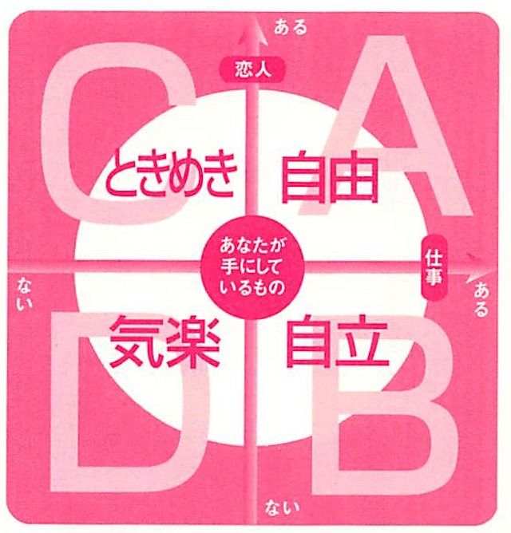

| 30独身女、どうよ!? 電子版 | |
| 岡田斗司夫 | |
| Rocket Inc (2015) | |
岡田斗司夫
この作品は、二〇〇一年一二月、現代書林より刊行された『30
独身女、どうよ!?
』（岡田斗司夫：著）を底本とし、改題、電子書籍化したものです。仕様上の都合により適宜編集を加えています。
なお、本書のコピー、スキャン、デジタル化等の無断複製は、著作権法上での例外である私的利用を除き禁じられています。本書を代行業者等の第三者に依頼してコピー、スキャンやデジタル化することは、たとえ個人や家庭内での利用であっても一切認められていません。
この本で私の話し相手になっている「うさぎ」は、私の周りに大勢いる〝30
独身女〟の代表選手です。
彼女たち〝30
独身女〟は、社会の変化の中で今、不思議な悩みを抱えています。
彼女たちは聡明なので、自分たちの悩みが矛盾していること、矛盾しているために解決が難しいことも知っています。知っていることによって、悩みはより深く進行しているようにも見えます。
このような問題を未整理のまま、生の言葉として抽出したいと思いました。
私が実際に彼女たちと話して共感した感覚、切なさやつらさ、不安や焦りを、読者のみなさんとも共有したいのです。そのため、この本は著者自身の「岡田」と、恋に悩む「うさぎ」との対話形式で進行しています。
「でもなぜ、うさぎ？」と思われるかもしれません。
それは、彼女たちと話した時の印象が、白くて、小さくて、恐がりの小動物のようだったからなのです。もちろん、仕事をしているときの彼女たちは全然違います。バリバリと働いているし、男よりもまじめで熱心。すごくやり手の人もたくさんいました。
私自身、取材や仕事など女性編集者のほうが、男なんかよりよっほど頼りになる、というのは身をもって知っています。彼女たちはミスがあればキチンと非を認めて謝れるし、それでも主張すべき部分は貫く、ある意味で「漢
らしい」人たちです。
普段の彼女たちなら「うさぎ？ また男どもは女に勝手な幻想かぶせて。ガハハ！」と磊落
に笑ってくれるかもしれません。
ところが、話がこと「結婚」だの「恋愛」だの「30
」だのという方面でディープになると、急に弱気になってしまうのです。
私が「新刊のタイトル、『30
独身女、どうよ!?
』って考えているけど」なんて軽く打ち明けたら、それこそ脱兎のごとく森の向こうまで一目散に逃げていってしまいます。追いかけてつかまえようものなら、パニックになって鋭い前歯でかみついてくるか、恐怖のあまり死んでしまいそうです。
「30
独身女、ってそれ何が言いたいの？」とくってかかるか、「でも、女としては、これじゃいけないと思うんですけどね」と、上目遣いでオドオド言い訳するか。
どちらにしても、堂々としていた大人の彼女たちは姿を消して、すっかり怯
えたうさぎになってしまうのです。彼女たちは、恥ずかしい生き方をしてるわけではありません。虚勢を張る必要も、オドオドする必要もないはずです。
もう恋愛なんてしなくてもかまわない、と投げやりになる人も多くいました。
けれど、30
代こそ積極的に恋愛するべき年齢だと、私は思います。
はっきり言って、10
代の恋愛なんて、ホルモンだけでできます。ホルモンに流されて、つい相手がステキに見えてしまうだけの単純な恋愛。次に20
代の恋愛というのは、悪い言い方を恐れないなら〝打算の恋愛〟です。相手の一挙一動に「こいつと結婚したらどうなるか」「親がうるさそうだな」と計らざるを得ない時期の恋愛。そういう事情を超越した、本当に自分らしい恋愛ができるようになる時期。それが30
代の恋愛のはずです。
しかし〝30
独身女〟は、いろんな「言葉」で呪いをかけられています。
「いい男がいない」
「結婚しなくちゃいけない」
「恋愛しなくちゃいけない」
「30
歳になったら終わりだ」
こんな「言葉」で呪いをかけられた彼女たちは、恐がりのうさぎになってしまいました。
でも、と私は考えます。
時代の魔女にかけられた「うさぎの呪い」を解きさえしたら、彼女たちの前には素晴らしい人生が開けているはずなのです。恐れず、うさぎの言葉に耳を傾けて下さい。それは、あなた個人の悩みであると同時に、今の時代の悲鳴であり、生まれ変わろうとする新しい価値観の産声でもあります。
あなたが〝30
独身女〟なら、この悩みが自分だけのものではないことを実感して、まずは安心して下さい。そして、自分を肯定し、自信を持って次の一歩を踏み出して下さい。
あなたが既婚女性で、もしいまとてもつらいなら、もう一度〝30
独身女〟に戻ることも含めて、自分の人生のつらさがどこからきているか、考えるきかっけにして下さい。
そしてもう一つ、作者からのお節介です。
この本の中に〝30
独身女〟と本来は恋愛するはずだった〝30
独身男〟のことにも触れています。だから男性の方にも、ぜひ読んで参考にしていただきたい。あなたが恋愛したいと思っている相手である女性が、どんなぐちゃぐちゃを抱え込んでいるのかを知ること。同時に、その問題に関して、私たち男がどんなにお気楽に接してきたかを、実感すること。それがわかるだけでも、きっと今より何十倍もモテるようになります。
では、まえがきはこれで終わり。
目次に続いていよいよ、うさぎとの対話編に入ります。それでは最終章でまたお会いしましょう。
性別・男。43
歳。長らく続いてきた「女の子苦手病」を、おすぎさんから伝授された〝オカマ・エンジン〟により克服。その後、身の周りの魅力的な30
女が、不思議な悩みに取りつかれていることに気づく。
性別・女。27
歳。「恋愛できない」「結婚したくないけどしたいような気もする」という悩みを抱えながらも毎日を必死に生き抜いている。年上の30
独身女友だち多数よりしょっちゅうグチを聞かされている。
うさ
（うさぎ・27
歳女）最近、「いい男」いないですよねぇ。
岡田
（岡田・43
歳男） え？ え？ それってどうゆうこと!?
うさ
もうこのままじゃ、日本の将来は真っ暗ですよ！
岡田
いやちょっと待って！ そのいい男って、どんな男のこと？
うさ
聞いてくれます？ このネタ、友達と会うとほとんどご挨拶のように語ってますからねえ。いやってほどスラスラ出て来ちゃいますよ！ ......まずは「余裕のある男」。
岡田
え？ それでいいの？ 何か、意外なかんじ。
うさ
そうかな？ 余裕がないのって、会ってるだけで息苦しい。だからこれはすごく大切です。次に「話がおもしろい男」。
岡田
おもしろい？ 漫才師みたいなんじゃないよね。
うさ
そりゃそうですよ～（笑）。言い換えると「幸せ感を与えてくれる男」かな。一緒にいて、楽しくおしゃべりできなきゃね。あとは「才能のある男」に「安心感のある男」。
岡田
ちょっと待って。なんかすごいなぁ。
うさ
そして最も大切なのが「セクシーな男」。友達の一人は、「恋はここから始まる！」なんて、鼻息荒くして叫んでましたよ。
岡田
うさぎもなるほどなって思ってるわけだよね。今の全部の条件に関して。
うさ
「あたりまえすぎてつまらない」ってほど一般的な条件だと思う。まさに５大条件です。その通りだねっていう感じ。
岡田
僕なんか、聞いてるだけでもう、ストレス感じてきちゃった。気がついたら、手の甲、嚙んでるもん。ここ嚙むのはストレス強い時なの。
うさ
岡田さんがつらくならなくても（笑）。
岡田
いや、自分がどうかなぁって無意識に考えるともう......。
うさ
大丈夫ですか？ ......でもこれって、自分たちの実体験は置いといて「いい男」の話をしよう、って言ったら出てくる無責任な条件ですから。理想を追い求めれば、って話だから、そんなにストレスに感じなくても（笑）。
岡田
これって20
代の前半とか10
代後半の頃から比べると変わってる？
うさ
間違いなく変わってますね。
岡田
なるほど。女性は何歳ぐらいで男性を見る目が変わるのかな？
うさ
最初は、10
代後半のあたりかな。「男の人と手をつないでドキドキ」というおつきあい以上のことをしだした時。そうすると、いろいろ見えてきちゃう。あ～あ、白馬の王子様っていないんじゃない？ って思えてくる。
岡田
あこがれとしての恋愛じゃなくて。リアリティー、現実の恋愛へ踏み出した時だね。
うさ
そうそう。どんなに清潔っぽくてかっこいい男がいたとしても、それだけじゃないんだよねって、わかってきちゃうでしょ？
岡田
あこがれの彼も、トイレにも行けば、オナニーもする。
うさ
だから、顔がいいだけじゃ、ちょっとね、って思い始めるわけ。顔だけで満足できるのって、10
代までですね。
岡田
最初はっていうことは、その次もあるわけ？ 多分30
になった時とか、35
歳になった時にも変わると思うけど......。
うさ
う～ん。でも私が経験あるのは社会に出た時かな。社会人になると、それまで関係ないと思っていた40
歳ぐらいの男性ともつきあう可能性が出てきますよね。学生だったら「私の彼、年上なの」って言っても、せいぜい３歳４歳だったのに。
岡田
同世代が子供っぽく見える？
うさ
それが、意外なことに、全然反対なんですよ。いくつになろうが、例え40
歳になろうが「男って子供なんだなぁ」っていうことがわかってくるんです。友達にも、40
代とつきあったり、不倫に走るのが出てきたりして、ますます身近になってきて、その正解に近づいちゃう。
岡田
なんで？ 逆に40
代になっても成熟しない、変わんないっていうんだったら、わざわざ不倫する必要ないよね？
うさ
なかなか、そうも思い切れないみたい。まず、若い男に比べて、余裕がありそうな気がするというのも大きいのかも。
岡田
あ、ここで話がつながるのか。余裕ねえ。......何の余裕？
うさ
う～ん、難しいなぁ。ようするに器が大きく見えるってことかな。
岡田
抽象的だね。
うさ
具体的に考えると、お金を使うたびにケチケチしない、とか。リッチなお店にもサッとエスコートしてくれるとか。
岡田
いきなり具体的っていうより、現金になった！
うさ
お金だけじゃないですよ！（笑） そういう雰囲気が大事だから。包容力とかもね。相手はすご～く年下の女の子を相手にしてると思ってるから、甘やかしてくれる。同世代だと、そんな風にはしてくれないでしょ。でもそれってすっごくいい気持ちだから。あと話してても楽しい。上手に聞いてくれて、色んなこと知ってて。
岡田
なるほどね。
岡田
余裕ある態度って、相手の女の子をなめ倒すところから始まる。逆に本気になったら説教しちゃうのが男なんだよ。
岡田
じゃあ、いい男の条件、一個一個、詳しく聞いてみたいんだけど。
うさ
どんどんどうぞ！ ......でも、ストレス、大丈夫？
岡田
もう大丈夫！ 今オレ、男捨てたもん。オカマになって聞くから（笑）。
まず、第１条件は「余裕のある男」だったよね。ぼくが思うに、余裕ある態度って、相手の女の子をなめ倒すところから生まれるんだ。
同い年ぐらいの子とつきあう時は、本気になっちゃう。本気になると、態度に余裕がなくなる。相手の小さい欠点も許せない。相手の反応、一つ一つに一喜一憂する。
うさ
セックスに関しては、本気だからこそ余裕がない、ってわかる気もするけど、それ以外のことでもそうなっちゃいます？
岡田
少しでも本気で好意を持つと、相手の女の子に説教しちゃったりする男って、圧倒的に多いんだ。キャバクラでさえ、めあての女の子に説教したくなっちゃう。バカだよねぇ、男って。嫌われるってわかっていてもやめられない。
うさ
たいして重要とも思えない細かいことを色々言われるのって、いやんなっちゃいますよ。私の言うことはいい加減に聞いてるクセに。ほんとに私が好きなの？ 自分の好みを押しつけたいだけじゃないの？ って、腹立ってきちゃいますけどね！
岡田
い、いや確かに、お気持ちはわかるんだけど、気を静めてね。本気度が高いほど、説教したくなるというメカニズムになってるってことは事実なんで。
でも中年男性の場合、若い女の子とは完全に遊びでしょ？ 適当につきあえる。その女の子の性格がこれ以上崩れても、気にならない。賞味期限内のつきあいっていうふうに割り切っちゃってる。
だから「うへぇ、この女の子、嫌な女だな」って思っても、「ああ、お前はそれでいいんだよ」っていうふうに言えちゃう。それは、器の大きさもあるんだけど、完全に無責任なポジションだからなんだ。
うさ
なるほど。ほんとはそれでよくなくても、適当に機嫌だけとってるわけか。「自分の子供は叱るけど、他人の子供は叱らない」みたいなもんですか？
岡田
そうそう。だけど普通、女の子ってちゃんとつきあってる彼氏からは、そんな風にいい加減には扱ってもらえない。
うさ
つまり、女の子に対してちゃんと愛情を持っている限り、男は女に説教する。それが余裕がない態度に見えちゃうってことですよね。でも、なんで、説教なんです？ もうちょっと女の子にも嬉しい愛情表現であってもよさそうなのに。
岡田
そうだよねぇ、本当に。ぼくが思うに「男には愛情がないんだ」っていう説が有望だと思ってるんだけど。『サラリーマン金太郎』というマンガに書いてあったんだけどね。「男にあるのは欲望と責任感だけ。その〝欲望と責任感〟は、女の子が持ってる〝愛情〟という感情にすごく似てるけども、違うから気をつけた方がいい」っていうセリフがあってね。うまいこと言うなあと感心したわけ。
うさ
女の愛情と男の愛情は、違っているということ？
岡田
そうとも言える。
その女の子がほしい、自分のものにしたいという欲望、所有欲があれば、それに比例して責任感が湧いてくる。その所有欲と責任感を合成すると、まるで愛情があるように見える。だけど、女の子が持っている愛情とは違う。
女の子の愛情とは、独占欲と献身性。つまり「あの男が他の女を見るのは許せない」という気持ちと、「あの人の役に立ちたい」とか「あの人の言うままにしてあげたい」という気持ち、この二つが合体したものなんだ。これが、女の子の愛情の正体なんだけど、これとはすごく違うものなわけ。
うさ
確かに、私は彼にあんまり責任なんか感じなかったですけど、彼は私に責任を感じてるみたいでしたね。
岡田
そうでしょ？ で、欲望だけで責任感のない状態が〝余裕のある男〟。もし自分の身の周りの男が「もうみんなせこせこして、余裕がなくてイヤ」と思うんだったら、「私に責任感をもたなくてもいいよ」って言ってあげるといい。それを納得できたら、急に相手は余裕が出てくるよ。ただしそれは、君たちが考える愛情じゃない。単に責任感を軽減しただけ。でも今のみんなには、ひょっとしたらそのつきあいの方がいいのかもね。
うさ
責任を軽減するって、具体的にはどうしてあげたらいいんですか？
岡田
例えば、「私とは遊びでいいよ。寂しいなら他に本命を作ってね」って言うとか。いつあなたの愛がなくなるか不安だから、余裕がないわけ。いつ切れても良ければ、余裕は出るよね。
うさ
え～!!
つまり「わたしとのことは遊びでいいのよ」ってことですよね。言い換えれば、相手の男に余裕があるってことは、遊ばれてるってこと!?
岡田
まぁ、端的に言えば。
うさ
うわ～。それって、やばい。「いい男って何だと思う？ やっぱ、余裕のある男だと思わない？」って言ったら「その通り！」って、女の過半数が答えると思うんですよ。でも、そう言っちゃうのって思い切り勘違いってことですよね。つまりそれって完全に「夢」ってこと？
岡田
夢っていうか、矛盾してるんだよ。そういう考えって。
それともう一つ。子供ができてから思うようになったんだけど、５、６歳児の面倒が見られれば、基本的に25
歳までの男女は手の上で転がせる。小学校へ上がる前の、理屈が通じないレベルの子供を、いろいろ動かすことができたら、その応用で25
歳まではできるんだ。すごく簡単に。だから子供のいる男は信じちゃダメだよ。本当に。
うさ
簡単に機嫌をとられたり、ごまかされたり、だまされたりしちゃうってことですね？
岡田
相手がだまそうとしてるわけじゃなくても、勝ち目はないかもね。人間の動かし方の普遍的な構造がわかっちゃってるから。
ぼくは育児体験あるから、特にそうかもしれないけど、法則として「子供とつきあうのがうまい男って、25
歳ぐらいまでの人とつきあうのもうまい」というのはあると思う。人間ってほめれば動くし、けなせば萎縮する。「結局、ほめて動かすしかないんだ」っていうのを腹の底から知ってる。言い換えれば、その人間と真剣に向き合わないで、小手先で動かすということでもあるんだ。
うさ
それって、恋愛じゃないでしょ？
岡田
恋愛が何かは、また難しい問題なんだけどね。ようするに、子供も若いのも同じようなものだよと思ってる。
それが、30
歳ぐらいの女の子になってきたら通用しなくなってくる。だから、ああ30
女難しいやって言って、みんな腰が引けちゃう。
うさ
ほめても通じなくなる？
岡田
そう。うさぎも言ってたよね。男を見る目が変わってくるって。そうなっちゃた人は、手玉にとれない。
うさ
あぁ、そうか。40
歳の男性を「男っていくつになっても子供ね」って思ってるような女性は、確かに手玉にはとれないでしょうねえ。でも、現実問題として、金銭的余裕も大きいと思うんですけど......。
岡田
でも、考えてみて。実際の平均可処分所得から言うと、20
代の方が多い筈だよ、40
代より。
かわりに、年齢が上がるとお金の使い方が少しずつわかってくるというのはあるんだ。片づけ上手みたいなものだね。ここは安くしても大丈夫、ここは高くしないとダメだ、今はこれぐらいなら大丈夫、とかいうお金のリズム感覚みたいなものがつかめてくる。それが、金銭的余裕に見えるんじゃないかな。40
代になってくると、いざという場合に使える非常装置の類も多くなってくるしね。クレジットカードの枠も広がるし、つけのきく店とか会社の領収書で落とせる店とかね。
うさ
実際のお金の額じゃなく、お金使いが上手になるんですね。
岡田
そういうこと。でもそれで生まれる余裕って、女の子には威力があるみたいだよね。こないだ話を聞いた女子大生は、31
歳のフィアンセがいるんだけど、40
歳の既婚男性と不倫関係になっちゃった。ほんとに簡単に口説かれてる。２人で飲んで、７０００円以上の所へ連れていけば、ＯＫなんだよ。
うさ
え～！ そんな簡単でいいのぉ？
岡田
バブルも終わっちゃったしね。今つきあってる彼氏より、２ランク程度上を見せると落ちる。王子様に見えちゃうらしい。それくらいが想像力の及ぶ範囲ギリギリなんだろうね。
うさ
でも、それは余裕があるんじゃなくて......。
岡田
そう、その時を逃さず、きちんとお金を使う。それがコツ。
だから、〝余裕のある男〟って男側から見ると簡単なんだ。
だけど、男がまじめに女の子とつきあうと、こうゆう手は使わない。使えないんだ。そういうのを見失っちゃうから。うさぎたちの周りに余裕のある男が来ないっていうのは、彼らがまじめでイイ奴だという証拠だよ。もっと喜べ（笑）。
うさ
なるほど、そう言われると、周りは誠実でいい人ばかりで......。喜ばしいことと言われても、どうしても素直には喜べないんですけどね。
岡田
まぁまぁ、がっかりせずに。
うさ
でも彼らも将来は、余裕も出てくるんですよね？
岡田
そうかもしれない。でもそれは、相手に関して手を抜き出すから。で、もっと手を抜き出したら余裕どころの騒ぎじゃなくなる。
つまり、ある時から急に余裕が出てきて「ああ、恋愛いい感じになってきた」って思うかもわかんないけど、それは更に手を抜かれる前段階ってこと。
うさ
冷めてくる前兆ってことですか？ 気がつくと会話も減ってて、話しかけても生返事で。
岡田
そうそう。セックスも５分で終わって、終わるとテレビばっかりみてて、っていう、その前段階。
うさ
余裕のない彼に「余裕が出てくる」ことって、いいことの気がするんだけど、喜んでる場合じゃないわけですね？
岡田
そうだね。彼女を認めてからとか、自分に自信があるからとかで、余裕が出る訳じゃないからねぇ。もっと、女に対する本気さの問題なわけ。
うさ
え～、どうしよう！ 余裕のある男なんて探しちゃってるよ、私たち！
岡田
「余裕がある」ことが魅力的にうつってしまうのはわかる。でも、本当はそうじゃないヤツの方が信用できると思ってほしいね。
岡田
第２条件はなんだったっけ。
うさ
話がおもしろい男。
岡田
そうそう、落語家じゃなくて。
うさ
とにかく楽しい人。しゃべってて楽しいというのももちろんだけど、一緒にいて楽しいなと単純に思える人も含めてです。合コンでも、顔がいい男より、話がおもしろい男の方が意外にもてるなんてこともあるし。
岡田
かっこいい男の子って、カッコよすぎて信用ならないと思われたりもするんだろうね。
うさ
それって言えてる。何よりも楽しいのは大切ですよ。
岡田
でもさ「話がおもしろい」とか「一緒にいて楽しい男がいい」なんて言う女の子って、自分はおもしろくない場合が多いんだよね。
「男は自分を楽しませて当然」って思ってるんじゃないの？ 消費者根性が身についてると、僕は言ってるんだけど。
うさ
ご飯の支度に関して、女が男に持ってる「お前も作れよ、たまには」みたいな感覚ですか？
岡田
そうそう。「たまには私もおもしろい話をしなくちゃダメかな？」という発想すらない。男っていうのは私を楽しませてくれるもの、恋愛っていうのは私を楽しませてくれるものと思ってるから。私は相手を楽しませてるんだろうかっていう発想がない。
うさ
確かに「私、話し下手だから、彼が楽しめる話ができないの」なんて悩みは聞いたことないなあ。おもしろい男がいない、というグチをよく聞く割には。
岡田
そういう子が無口ってわけじゃない。自分の言いたいグチや他人の悪口はいっぱい言うんだけど、彼が楽しんでくれてるかどうかは気にしない。
うさ
それはイタイ指摘。そう言われてみれば余裕のある男の場合も「じゃあ私は余裕のある女だろうか」とは思わないですね。
岡田
じゃあ私は才能のある女だろうか。私は相手に安心感を与えるのだろうか、絶対に考えない。
そう考えないで、私の魅力っていうのは何かあるんでしょ。男の人が感じるセクシーだったり、かわいいだったり、私にはわけのわかんない何かがあるって思ってる。だけど、男だって、こんな女性は大歓迎だよ。余裕があって、話がおもしろくて、一緒にいて楽しくて、才能があって、安心感があって、そりゃいいよ。全部これ癒し系じゃん。
うさ
確かに。私もそんな女性にはなれない気が......。
岡田
そうでしょ。それを要求するから僕がストレス感じて手の甲を嚙まなきゃイケナイ（笑）。
うさ
でも話がおもしろい人は、けっこういそうなきがしますけど。
岡田
話がおもしろいっていうのはどういうことかと言うと、女の子に合わせないということなんだ。女の子に真剣に向き合ってサービスしようと思ったら、話はおもしろくなくなっていく、という定理がある。だって女の子の興味があることって、自分はあまり興味ないから勉強したことになっちゃう。となると見透かされるので、底が浅くなる。
それよりは自分がおもしろいと思っていることの中で、相手にプレゼンテーションできることっていう発想って、やっぱり手を抜かないとできないんだよ。
うさ
男の子が家に来た時作る気合いばっちりのお料理と、女の子同士、気のおけない仲間でパーティーする時の持ち寄り料理って違いますよね？ そんなカンジ？
岡田
そう、そう。持ち寄りパーティって、簡単で、そこそこ見栄えもよくて、結構おいしい料理にするでしょ？ そういうのって、少し手を抜いて考えないとできないよね？
うさ
ばっちり決めようと気負ってしまうとダメなんですよね～。妙に本格的な料理にチャレンジしてみて、かえって口に合わず、玉砕するとか。
岡田
「話がおもしろい」も同じことなんだよね。相手を女扱いしなければいい。相手を口説こうと気負わない。デートだからムードのある話とか、女性を楽しませなくちゃとか思わない。
「○○してあげる」という男は絶対にダメなんだよ。「○○する」でなきゃ。
うさ
え？ どういう意味？
岡田
「連れて行ってあげる」じゃなくて「連れて行く」。「教えてあげる」じゃなくて「教える」という発想ができないと、女の子には縁がない。
うさ
ああ、それわかります！
岡田
そうすれば、自然に話はおもしろくなる。ついでに余裕も出る。
おもしろい話をさせるのもいいよ。できる男もいる。だけど、そのことに関して男の子に努力をさせちゃったら、あとで必ずしっぺ返しがくる。
うさ
どんな痛い目みるんですか？
岡田
よく「釣った魚には餌はやらない」っていうでしょ？ でも、あれってすごく屈折した言い方なわけ。男の子も、あんなあくどいこと言いたいわけじゃない。言いたいのは、それまで、どんなにみんな苦労したかってことなんだ。
うさ
もう、ガンガン餌をあげまくって大変っていう？
岡田
「君らわかってる？ 魚釣りって、前の晩から仕掛け作って、コマセして、電話かけて日の出の時間確認して、三時間車に乗って、寒い中ダウンジャケット着てやるんだぞ。家に持って帰って来た魚に対して、そこまでしないでしょっ、普通」っていうぐらいのニュアンスなわけ。露悪的に言ってることは確かだけど、実はそれぐらい恋愛っていうのは、男の子にとってプレッシャーなわけ。何しろ女の子は消費者根性いっぱいで、会った瞬間からすっごく気を使うことを強要されてるからね。
うさ
だから反動で、そうなっちゃうんですね。「いっぱい受験勉強してやっと大学入ったから、もう勉強なんかしない。さぁ、遊ぶぞ」、ってやつですね？
岡田
そうそう。それなのに、それを余裕持ってしろとまで言う。「ガリ勉ってかっこ悪い。余裕を持っていい大学に入ってくれなきゃ」とか言われてるわけ。
うさ
余裕ある男＆
おもしろい男。条件をかけるとそうなりますね。
岡田
そうなんだ。「全力でやってるのはイヤ」っていうのは、「あなたが努力してるのは見せないでほしい。だってそんな努力を見せられたら、私、気を遣っちゃうじゃない」っていうことだもん。私を楽しませてほしいけど、私に気を遣わせるなって。
うさ
あぁ、そういうカラクリになりますねぇ。
岡田
まぁこれは、ちょっと男の子の味方して言ったんだけどね。幸せ感を与えるっていうのは、実はすごいプレッシャーなんだ。わかってあげてほしいよ。だって、素のままの自分で、相手に幸せ感を与えられるかどうかってなると、自信あるわけないじゃん。そんな素のままの僕なんか見たかないでしょって、男の子はみんな言いたい。
女の子だって、そうだよね。女の子は女の子で、私ら少なくとも外に出る時はメイクもしてファッションにも気を使ってるのに、あんたらまずその段階で、半分ボツっていう感じでしょ？
うさ
うんうん。半分以上ボツですね（笑）。
岡田
「釣った魚に餌をやらない」って言葉だって、屈折した言い方をしてるだけだよ。苦労しているからどうしても露悪的になる。
岡田
次の条件は？
うさ
「才能ある男」。
岡田
「才能ある男」。わからないこともないんだけど、ちょっとドリーミィだよね、表現が。はっきり言えば、お金になる才能、ということにしていい？
うさ
う～ん。それだけじゃない気もするんですけど......。
岡田
それだけじゃないにしても、それは大事なんだよね。すごい才能があるんだけど、それが今の社会に活かしようがなかったら、しょうがないんだろ？
うさ
そういう面はあるかな。私の場合は賭けみたいなカンジです。「あ、この人、才能がある。成功するかもしれない、出世したり、有名になったりしそう」って、それだけで、魅力は三割増し。だから、つきあいたくなっちゃうかな。
岡田
あとね。女の子って男に比べて勉強好きでしょ？
うさ
そうそう。仕事に役立たなくても、スペイン語習ったり、資格を取ったりするのって、たいてい女の子ですよね。
岡田
そういうのと関係してる気がする。才能のある男の人とつきあって、色々教えて欲しいっていう。
うさ
なるほど。自分も一緒にワンランク上になりたいっていう気持ちですね。カルチャースクールに通う喜びと同じ。
岡田
カルチャースクール・ウィズ・ラブ！（笑）
うさ
「私の彼って、私の知らない世界をすごく知ってるの」とか自慢する子って結構いるなあ。
岡田
女の子って、真面目だよね。勉強好きっていうか。
男の子で圧倒的に多いのは、女の子は頭悪い方がいいとか、女の子には才能なんかない方がいいって言うやつ。だから、才能のある女の子とつきあって、何かを学ぼうなんて、考えもしない。「男って、いくつになっても成長しない」って、さっきうさぎも言ってたけど、それは男の子は勉強嫌いだっていうことが、本質的に影響してるみたいだね。
うさ
女の子には、素直に学ぼうという向上心がある。
岡田
でもなぁ「才能ある男」って言っても、結局は女の子受けする才能じゃないとダメなんだよな。
うさ
女の子に受けない才能ってあります？
岡田
例えばすごくフィギュア作るのが上手で、ガンガン稼いでる、という場合。同じ才能でも、美少女フィギュアの作り方とか、知識って教えてほしくないよね。
うさ
う～ん、いかに向上心を使おうとしても、なんか抵抗が......。
岡田
そりゃそうだよねぇ。ぼくは知りたいけど（笑）。女の子には、圧倒的にウケが悪い。
まぁ、そういう世界の才能は、金に換算するしかない。美少女フィギュアでも、毎月１００万２００万稼いでいるのなら、いいわけでしょ？
うさ
それはありだなあ。好きなことやってそんなにちゃんと稼げるっていうのは、かっこいいですよ！
岡田
まぁ、そこまで積極的に喜んでくれない子も、お金になるならまぁいいかと思うでしょ？
うさ
う～ん。「美少女フィギュアで貧乏」はダメでしょうね。
岡田
実は女の子にとって、男って「夢」なんだよね。自分がなれなかった、出来なかった夢を託す存在。女の子って、「女であるがゆえに諦めさせられた未来」があるじゃない？ だから「こうなりたかった、でもなれなかった自分」を男に投影しちゃうんだ。
で、男がダメと見切ると、次は子供。だから子供が出来ると亭主はどうでもよくなって、食費削ってでも子供の将来に賭けようとしちゃう。
うさ
でもその他に、「こんなステキな才能のある彼を持つ私って、ステキ」「こんな彼に好かれる私ってステキ」っていうのもありますよ。
岡田
ついでに、「あの人の才能といっしょに、一歩引いた、やや無責任な立場で、この世の中すべてを冒険したい」とか。
うさ
彼と一緒にドラゴンのいる世界を、旅してみたい。そこは、すごく危険な世界なんだけど、彼は私を命にかえても守ってくれるの！ わくわくどきどき！ ......みたいな。
岡田
アーティストで才能がある男とか、映画監督で知的そうな男、小説家で売れそうな男。そんな彼をバックアップして、メジャーにしていくことで、自分も一緒にパーティーに同席して話を聞いたり、出版社の人に紹介されたり、テレビに出たりっていうふうになっていく。ガガガッと世界が広がる快感があるよね。
うさ
そういうの、すっごく喜びそうな子、います！ 何人も頭に浮かぶなあ。......でも私は、なんかそこまで、くっついてくのはやだな。
岡田
同じ女の子でも、性格の差はあるからね。でも、彼の話を通じて追体験をする、っていうのはいいでしょ？ そういう男が、自分の外の矢面に立ってくれていて、男の子の後ろで一緒に見ながら、応援してるカンジ。
アーティストや監督が女だと、バックアップして一緒に追体験、とは思わないでしょ？
うさ
そうですね。自分の男、とか、旦那だと思うから嬉しいんですね。友達にも、学者の妻になるのが夢っていう女の子、けっこう多いんですけど、それも同じような快感なんでしょうね。
岡田
そういう子たちって、意地悪な言い方をすると、自分で勉強するほどは頭良くないし、向上心もないわけ。旦那がそうであれば、いいとこだけ手軽に見せてもらえるんじゃないかと思ってるんだろうね。
かわりに、そういう才能ゆえの悩みに関しては私が癒しになってあげれば、なんて、調子よく考えてるわけでしょ。
うさ
「私が安らぎに」とか言ってる、言ってる（笑）。
岡田
才能のある男が好きっていうのは、昔だったら頼りがいのある男が好きって言ってたような人だと思うんだよ。
うさ
頼りがいですか？
岡田
そう。今の世の中、何も当てにならないから、才能っていう可能性に賭けてみよう、ということなんだと思うよ。昔だったら医者とか弁護士、一流企業のエリートでよかった。でも今の世の中は、そういうの、あまりアテにならないし、才能の方が「楽しさ」の点数が高いし、案外、お金もついてきそうだしね。
うさ
そうかぁ。才能っていうのは、カルチャースクール＋ギャンブルだったんだ！ もちろん、ウィズ・ラブですけど。
岡田
ギャンブルかぁ。まぁ、将来への投資くらいの人もいると思いますけど。うさぎの場合は賭けってことだね。
うさ
そう言われると、大穴狙いなんでしょうかね、私。
うさ
男って女にとって自分がやりたいけどできなかった「夢」を代わりにかなえてくれる存在でもあるのかな。
岡田
「安心感のある男」っていうのは？
うさ
友達がね、彼から得ている最大のものは、絶対に安心感だと言うんです。
岡田
安心感というからには、自分の中に何か不安があって、それが癒されるんだよね、どんな不安感があるんだろうね。
うさ
その友達は、すごく人づきあいがうまいんです。三姉妹の末っ子でお姉ちゃん達にもまれて育ったから。自分の損になるようなことは自然に避けるし、クセのある人とも上手に距離をとるし。私からみると、羨ましいくらい。みんなからも、すごくいい人と言われてる。
でもそんなカンペキにいい人なんて実際はいないでしょ？ ホンネを人に見せないように気を遣って、けっこう疲れちゃう。だから「全然気を遣わなくてもＯＫな相手」っていうのが、彼氏に求める第１条件。
岡田
適当に世の中に合わせて生きていけるんだけども、そればかりだと不安感が募っていく。「私は努力してみんなに合わせてる。だからみんなは私を受け入れてくれる。でも、素直な自分を出すと、「受け入れられないんじゃないの？」という不安感。それを打ち消すために、そのままの自分を受け入れてくれる男っていうのを一人確保しとく。そうすると、安心感が得られると。
うさ
もう一つ。友達が言うには、その彼って「あまりにもいい人すぎて、なかなか女の恋愛対象にならないタイプの男」「○○くんっていい人だよね、で終わっちゃうタイプの男」だって。私も一応いろんな男を見てきたつもりですけど、その中でも、もう１、２を争ういい人なんですよ、本当に。こうゆう人がいるんだなって感心するぐらい。
言われてみれば「ああ、絶対噓つかなそう」っていう安心感はあるんだろうなって。
岡田
わかった！ ようするに、気を使わなくてもよくて、裏切らない男。
うさ
あぁ、裏切らないっていうのは確かに、そんなカンジ。
岡田
おまけに、手間がかかっちゃダメなんだ。
うさ
それに「この人のことだったら、全部わかるわ」って思える感じも。それも大きな安心感ですよ。
岡田
「手間がかからない」「裏切らない」「全部わかってる」。それって、「自分の子供」に求めるものと同じだよ。育児のめんどくさいとことはすべて取っ払って、おいしい部分だけがほしいって言ってるわけ。子供が手がかからない状態になって、娘と一緒にお買い物するのが楽しみ。息子と一緒に酒を飲むのが楽しみっていう感覚。
うさ
なるほど、そうなのか。私の場合、安心感って別にいらないんですけどね。だって、わかんないとこがあった方がおもしろいもん。
岡田
じゃあ、この５つの条件は、全部クリアしなくちゃダメというわけじゃないんだね？
うさ
そう。人によって、これはいらないとか、これが一番重要っていうのは、違うと思う。
岡田
安心感と言うと、「頼りがいのある男」にはだいたい安心感がついてくるよね。
うさ
でも、そういう人って、他の女にももてるじゃないですか？ 彼の一挙一動に、嫉妬の炎を燃やしてたら、安心感どころか、疲れちゃいますよ。
岡田
世の中には「不細工で才能がある男が好み」っていう女の子が結構いるんだけど、「裏切らなくて、あとあと出世しそう」ってことだよね。
うさ
不細工が安心っていうのは、わかる気がします。
岡田
「裏切るぐらいかっこいい方が、つきあってておもしろいじゃない」って僕なんか思うけどねぇ。ここまで考えても、安心感というのは、やっぱり、育児のいいとこどりみたいだな。手間がかからず裏切られなくて、理解し尽くしていて操縦がきく。へたにハンサムだったらと、誘惑なんかが心配だわ。ってね。
岡田
最後の条件は？
うさ
「セクシーな男」。
岡田
「セクシー」って何？
うさ
う～ん。はっきり言語化するのって難しいんです。......そういう、なんかセクシーな雰囲気にするのがうまいってカンジかな。
岡田
セクシーな雰囲気って？
うさ
「ああ、いい雰囲気になってきたな」っていう......。
岡田
いい雰囲気って？
うさ
え、え～と......。
岡田
男と女じゃ、同じ言葉でも意味が違うでしょう、たぶん。セクシーな雰囲気って「やれそうな感じ」のこと？
うさ
じゃないよなぁ......。
岡田
でもやれそうな感じって、男の子が思う「やれそうな感じ」っていうのは、攻めの感じだけども、多分女の子はもっと。
うさ
モアーンといいカンジ。
岡田
モアーンと、ロマンチックフィールド？
うさ
そう。そういうロマンチックな雰囲気。そういう雰囲気を持ってる人っています、実際。
岡田
ロマンチックな雰囲気を作れる男がいいの？
うさ
それは大切だと思います。まぁ、雰囲気だけじゃなくて、体の部分的なものにも、セクシーなカンジはありますね。これは男の人にもあると思うんですけど。
岡田
フェティッシュな？
うさ
恋人っぽい雰囲気じゃない場面でも、「はっとする」部分を持っている人がセクシーな男かなって思うんですけど。
岡田
具体的には、何にはっとするの？
うさ
例えば私の場合は、手ですね。男っぽい、ごつい手。「あ、この人、手がごついんだ」と思って、「キャア」って思っちゃいますね。
友達は、首筋だそうです。車をバックで入れてる時とか、この首筋が見えると、「きゃあ、セクシー！」って。あと、別の子は、胸筋。Ｔシャツ来てる時なんか、好きな形の胸筋が見えてたりすると、キャア、セクシー！
これは、「フェテッシュ」でいいんですか？
岡田
ほんとに用語が難しいな。男の場合のフェテッシュの「たまんない」っていう場合、ゴールまでの距離がメッチャ近いんだよ。
うさ
もう、セックスまっしぐら？
岡田
そう。例えば白くて細い女の人が好きだっていう場合、白くて細い指の女の人が好き→０・０５秒後に「そんな女を組み敷いて→俺のを突っ込んで→おおその指が曲がってヒーイク→たまんない！」っていうとこまで一気にいってしまう。
うさ
（笑）。そんなの、いかない、いかない。
岡田
そうでしょ？ 女の子の場合、その組み敷くまでよりずっと前のプロセスじゃないの？ そのモアンとした感じって。
うさ
そうです。あくまでもロマンチックフィールド。セックスフィールドじゃないです。
岡田
男はラストがたまんない部分だから、そこまでイメージが走っちゃう。セクシーって、直接その行為の最中が思い起こさせるものでなきゃダメなわけ。
うさ
それとは違いますねぇ、ぜんぜん。
岡田
違うでしょ？ 女が「男の人の胸筋とか、きゅっとしまったお尻がセクシー」って言うのと、男が「おっぱいが大きい女がいいよ」言うのとは全く意味が違う。男の場合、はっきり使用感がよさそうって言ってるわけ。
うさ
でも女はそうじゃないです、別に。
岡田
きれいにデコレーションされたお皿のお料理見た時に「ステキ」っていうのと「ハラへった」っていうのと違うでしょ。男の場合のセクシーは、「おいしそう」なんだ。「ステキ」じゃない。盛りつけどうでもいいって。
うさ
「早く食わせろ」ってカンジ？ 食べるのがもったいないとかって、ないです？
岡田
ない、ない。でも、女の子のセクシーって「食べるのがもったいない」世界だと思う。
うさ
そうですね。「ワッ、すごいセクシー」って思った人が、私に近寄って来たりしますよね。そうすると、「えっ？ えっ？」なんて、とりあえず隠れちゃうかも。柱のこっちからこう、覗いてたいっていうカンジ。
岡田
私という要素を入れたら彼のセクシーが崩れちゃう。もったいない！ そっと取っとこうっと。
うさ
そうそう。もう、なんかドキドキしちゃって。男の人って、理想の女の人に会ったら、ドキドキして話ができないとかってないですか？
岡田
あるよ。でも、理由が違う。そんな女の人の前で、立派に振る舞う自信がないからドキドキする。理想の女に嫌な目で見られたくないから。
うさ
女の場合、ほとんど本能的に、とりあえず隠れちゃう気がします。
岡田
女の子の場合は「野生動物が出て来た時、その動物のナチュラルな振る舞いを崩したくないから隠れる」なんでしょ、ほとんど。
うさ
それに近いかも。とりあえずピョンって隠れて「勇気出して話しかけちゃおうかな」「でもどうしよう、どうしよう」とか「やっぱり話しかけよう」とか、ぐるぐる考えながらも、しっかり隠れて見てるっていうカンジ。
岡田
いい男がいないっていうからには、セクシーな男っていうのもあんまりいないんだよね？ 男にとってセクシーな女っていうのは、いくらでもいる。最近セクシーな女がいないなんて思わない。なんでかって言うと、フェチだから。おっぱいが大きいのが好きな男だったら、外へ行けばおっぱい大きい女、いくらでもいるじゃない。もうニセ乳でもいいんだから。
うさ
ニセ乳みたいに、単純ではない気がします。だって、足が長くて、スタイルがよければ誰でもセクシー、なんてわけじゃない。
岡田
そう。女の子はそうは言わないみたいだね。
う～ん、僕なりに考えてみよう。ストイックさと関係してる気がする。自分たちがダランとしてる分、ぴしっとしたものがかっこいいというのに近い？ 違う？
うさ
うーん。でも「ぴしっ」だけじゃない。意外性も大事ですね。例えば普段すごく清潔な人が、やつれた顔とかして、不精髭とか生やしてると、ドキっとか。
セクシーだと思う瞬間って、「湧き上がって」くるものなんです。子犬がコロコロ走ってたら「きゃぁ、かわいいっ！」て湧いてくるでしょ？ あんなカンジ。
岡田
湧き上がり方は、男のエロ妄想にそっくりなんだけどな。なんか違うんだよなぁ。
うさ
セクシーって条件は、いい男には当たり前なんじゃないの、とか言ってたんですけど、追及すると意外とわかんないものなんですね。
岡田
女の考えるセクシーと男が考えるセクシーって全然違う。まだ、男にとっての「セクシー」な女っていうのはいくらでもいる。
岡田
さて、今まで出た「いい男の条件」５つ。
うさ
「余裕がある」「おもしろい」「安心感」「才能」「セクシー」。
岡田
これ、逆に自分が言われてる側になってみたら、どう思う。
うさ
相手から要求される立場としてってことですよね？
岡田
そう、あこがれの彼に「こんな女がいい」って言われたとしたら、どう？
余裕を持てとか、安心感を与えられるようになれとか、才能のある女になれとか......。
うさ
うう～～。確かに、どうしていいかわかんない！
岡田
わかんない、どころか、どうしようもないんだよ。
うさ
ほんとだ。がんばりようがないです。
岡田
これが、みそ汁作るのがうまい女と言ったら大丈夫でしょ？
うさ
おみそ汁作る練習する。習うこともできますしね。
岡田
でもこの５つは、努力の方法がわからないのばっかりなんだ。これに比べたら、まだ「大金持ち」の方がまし。金稼げばいいから、少なくとも努力の方向が分かる。余裕があるように努力するって、できない。才能があるようにも、安心感を与えるようにも......。
うさ
ムリですね、絶対。
岡田
これがね、持って生まれたものなら、諦めるしかないし、諦めればいいよ。ところがそうでもないんだよね。例えば、中年になってから急にもてだした男の人の話も聞くし、歳取ったらもてなくなる人もいっぱいいるし。
ある年齢に達すればいけるかというと、そうでもない。そういう変化が一生ない人もいれば、逆にあったのに失っちゃう男もいる。ある日神様が偶然に与えてくれるようなもの、としか言いようがない。
うさ
そう言えば、余裕を持って生まれる人なんていないですもんね。
岡田
これはきついなと思うのは、「努力の方法が見つからない。それなのに、これからなれるとも限らない。すべて運まかせ」という点なんだよね。がんばることどころか、あきらめることすらできない。
うさ
でも「おもしろい」は、なれそうな気がしますけど。
岡田
それが、いざ本気でしようとすると、そうでもない。何をもっておもしろいのかとするのも、女の子個別によって違うし。おもしろい男になることはできるかもわかんないけど、それがその子にとっておもしろいのか、わかんないじゃない。誰か一人の女の子にとっておもしろい男になろうとすると「これは、おもしろいかな」って神経使って、余裕を失ってしまうしね。
うさ
「セクシー」だって、女の子それぞれ違うし、その子にピッタリの「セクシー」になるのは不可能ですね。
岡田
そうそう。女の子同士の話でも、女性誌でも「いい男の条件」なんてしょっちゅう言われてるよね。男の子だって知ってる。それなのに「じゃあ男の子は、こうやってがんばりましょう」という対策会議が開かれない。いや、開けない。そこらへんが大きな理由なんだよ。
うさ
そうだったんだ！
岡田
例えば「男にとってのいい女の条件は〝ムラっとこさせて、飽きさせない女〟である」って書かれたら、どう？
うさ
そりゃ、わかんないですね。
岡田
ムラっとくるのがなぜか、どうやったらいいか、わからない。飽きないのはなぜか、どうやったら飽きないのかわかんない。だからどうしようもないよね。
うさ
うん。そんなこと言われても、困るしかない。
岡田
どうしようもないからね。男だって、腹立てるか、元気なくすか、聞かなかったことにするか。このどれかしかないんだよ。
うさ
でも、この条件は理想論。話の上ってだけですよ！ 実際の彼を選ぶときは、もっと現実的だもん。
結局「男はかわいげだよね」っていうところに行き着いたりするし。いい男の条件なんて全部すっ飛ばしてちゃって「なんかかわいいよね」っていうことでひかれて、それとくっついちゃって、結婚したりしますしね。
岡田
そうなんだよね。でも、それじゃ、いい男の条件って、いったい何なんだろうね？
岡田
「いい男」の条件ってどうしようもないものなんだよ。しかも持って生まれたものなら諦めもつくけど、そうでもないというところがまたキツい。
岡田
さっき、うさぎが言ったことに、問題の根本的なカギがあると思う。
うさ
いい男の条件と関係なく、結婚しちゃう人もいる、っていうこと？
岡田
だって、おかしいでしょ？ 「いい男の条件」が満たされている男と、みんな、結婚したくないの？ それとも、いい男がいないから、あきらめて？
うさ
う～ん、あきらめてるのとはちょっと違う気がする。「いい男」と「結婚したい男」ってちょっと違うって言う人、案外多いと思うんです。特に、結婚に本気な女の子たちだと。
岡田
「いい男がいない」と「結婚するに足る男がいない」ってイコールでは結べない？
うさ
きっとイコールじゃない。
岡田
いい男と結婚したいわけじゃないんだ。
うさ
もちろん、イヤではないけど「いやちょっと待って、考えさせて」なんて言っちゃうかも。結婚する相手として考えたら、もう一度、条件考え直したくなるかもしれない。
岡田
それは、「フェラーリを日頃から乗るかって言われても」と似たようなものなのかな。
うさ
そうかもしれない。あらゆる意味でかっこよくても、使い勝手が悪いとか、故障するとか、修理する時にパーツが取り寄せだから時間がかかるとか。一緒に暮らす結婚となると、「ちょっと待ってね」ということになる気がします。
岡田
「いい男」は本当にいないのか、いるのか。現実的に考えれば、いると思うよ。条件のレベルを下げていけば、きっと見つかる。
うさ
でも、いいなぁと思うと、必ず結婚してたりするんですよ。
岡田
結婚しててもいいでしょ？
うさ
えっ？ えっ？
岡田
だって今、いい男と結婚したいわけじゃない、って言ってたじゃん。
うさ
言いました、確かに。
岡田
「いい男の条件」って実はこれ、女の子にとっての「いい愛人の条件」なんじゃないかな。恋愛相手とか恋人とか言うとあいまいになるから、あえて「愛人の条件」と言おう。結婚を前提としない恋愛相手っていう意味での「愛人」。
ところが、ついつい「いい男を見つけたら、結婚するものだ」と思いこんでるでしょ。だから、いい男が見つかった→でも結婚してる→これじゃダメだ→いい男がいないというルーチンになっちゃってるんだよ。
うさ
えっ、でもそれじゃあ、結婚できないでしょ？
岡田
結婚できなくてもいいでしょ？
うさ
えっ、できなくてもいいの?!
岡田
そう。いい男がいて、そいつと楽しくデートしてれば、結婚なんてしなくてもＯＫ！
うさ
えっ、えっ、そうですか？ でも、ほんとにそうかなぁ？ 違う気がするんですけど......。
岡田
結婚にこだわるの、やめたらいいんだよ。そうしてピカイチの愛人を探す。それなら割といるよ。だって「結婚しなくていい」って割り切った瞬間、相手が既婚でも歳下でも、同性でも全く関係ないでしょ。対象がグンと広がるよ。
うさ
う～ん、確かに候補者の人数は何倍にもなるけど、だけど......。
岡田
しかも、既婚者の方が、余裕もあれば、話もおもしろいよ。
自分たちが求めているのが、実は愛人なんだということに気がつかないから、みんな困ってる。日本の社会がもう何年も前からゼロ成長の「成熟社会」に突入しちゃって、女の子がちゃんと大人になっちゃった。そうするとどうなったかというと、おっさんと同じように愛人を求めるようになっちゃたんだよ。
それなのに旧来の倫理観が抜けていない。「だって結婚はどうするの？」って言っちゃう。結婚なんてしなくてもいい。その枷をはずすだけで、幸せはやって来るんだよ！
うさ
......愛人でもいいと思ったら、いい男っています？
岡田
いるいる！ 既婚者だったら、余裕ある態度とか安心感を与えるふるまいとかって、簡単だよ。他に彼女がいようとも、「自分だけのものにしたい」と思わないでつきあえばいいじゃない。
それぞれの条件の説明でも言ってると思うけど、どうしても相手をものにしたいっていう切迫した感情をなくせば大丈夫なんだ。子育て経験者なら、甘やかし方もうまいし、つまんない相手の話を聞いてやるという技も身につけてる。それって、幸せ感を与えてくれる男になる。
才能だって、賭けじゃなくて、すでに成功している奴とつきあえばいい。別に彼女がいたって奥さんがいたって、あなたにとっては「愛人」なんだからかまわないでしょ。
セクシーなんて、いっくらでも該当者は見つかるって。
うさ
そうかぁ。既婚者や彼女持ちも含めて探すから、確率も高い。しかも、当たりも多い。うーん。
岡田
そう。範囲を広げれば、絶対見つかるはず。
うさ
それでも、結婚しないと決めてしまうと言うのは、やっぱり不安......。
岡田
う～ん、じゃあそっちも考えて見ようか。
うさぎは「いい男がいない」と嘆きましたが、それってある意味本当だけど、ある意味では間違いです。
「いい男と結婚できない」というのが、多分本当。
「いい男がいない」と思いこんでしまうのも、彼氏と結婚するという無意識の思いこみがあるからなのです。
でも、結婚という条件をはずして考えれば、いい男はいくらでもいます。これが「30
独身女」が乗り越えるべき最初の壁なのでしょう。
次章では、30
独身女にとっての結婚に関して、話してみましょう。
岡田
ところで、うさぎはどうしてそんなに結婚にこだわっちゃうのかな。
うさ
いや、こだわってるってわけじゃないんですよ。
ただ今すぐ結婚、って考えてるわけじゃないけど「いずれはしよう」とは思ってて。......あ、やっぱりこだわってるのか（笑）。
岡田
お見合いとかで、探すのはどうなの？
うさ
やっぱり、ちゃんと恋愛して結婚したい。
岡田
どうしても、恋愛と結婚がワンセットなわけ？
うさ
お見合いが絶対イヤってわけじゃないですよ。つきあいだしてから恋愛すればいいのかな、とも思うけど。
岡田
でも、恋愛感情がないのは、ダメなわけね？
うさ
ダメって言われると困るけど、一生一人なんて寂しいし、自分の子供も欲しいし、そういうことを一緒にするパートナーって、やっぱり本当に好きな人じゃないと、ねぇ。
岡田
自分の子供がほしいなら、子供だけ作れば？ 結婚しなくても子供さえいれば、寂しいなんて言ってらんないほど忙しくなるよ。
うさ
でも、子供には父親が必要でしょ？
岡田
いや、そんなことないって。「フロン」（編注・岡田氏の前著。新しい家族・夫婦・親子像を読み解いた快作）という本で詳しく書いてるけど、父親なんていなくても大丈夫。
うさ
ということは、自分一人で育てろってこと？ ......それって、かなり不安。
岡田
一人で育てろ、と言ってるわけじゃないけどね。一人で育てるのも二人で育てるのも、案外違わないんだよ、現実の生活は。普通に結婚したら、現実的に子供を育てるのはたいてい母親だけだからね。
かえって父親がいるのに何もしてくれなかったり、気がきかなかったりする方が、よほどストレスがたまるって言うよ。
うさ
でも、実際問題、一人では子供を作れないし。
岡田
それはそうだけどね。例えば仲のいい男友達に「責任とれとも、父親になれとも言わないから、子種だけほしい」って言ったら、みんな喜んでＯＫだって。
うさ
そんな簡単でいいのかな？
岡田
いいの、いいの。世間が言うとおりの型にはまろうとするから大変なんだよ。子供がほしいなら、作っちゃえばいいんだよ。で、一人で楽しく育てればＯＫ！
うさ
ちょっと子供を産んでみようかな、ってノリで？
岡田
それが原則なんだけどね。でもそこに、「子種をくれた相手と結婚しよう」とか、「子種をくれた相手に良い父親になってもらおう」とか、そういう打算がどんどん入ってくると、一番最初の「ちょっと子供を産んでみようかな」が、いつの間にか複雑で面倒なものになってしまう。
うさ
「どうせなら、稼ぎのいい相手がいい」とか「長男はイヤ」とか、「子供好きじゃないと困る」とか......。
岡田
おまけに、いい男じゃないとダメとか。
うさ
あぁ、いい男！（笑）
岡田
そう。いい男。こう並べると、その無茶さが心に染みてくるよね。そんなの、お砂糖みたいに甘っちょろいんだよ。「どうせなら」「ついでに」「せっかくだから」が多すぎ！（笑）。そんなことさえ考えなきゃ、子供を作るぐらい簡単じゃん。
うさ
うーん、そうかもねぇ。でも、そう思い切れないということは、私にも捨てなれない夢があるのかもなぁ。
岡田
「捨てられない」んじゃない。捨てたくないだろ？
うさ
あぁぁ、「捨てたくない」かもねぇ、どっちかというと。
岡田
で、何を「捨てたくない」わけ？
うさ
せめて、一回はちゃんと「恋愛→結婚→子育て」をやってみたい。途中で失敗するかもしれないけど、と言うより、とにかくやってみて、失敗したいっていう気分かな。
岡田
失敗したい人はいないでしょ？ ホンネは、一回やって成功したい。でダメだった場合「やったけどダメだったから、仕方ない」という選択肢に飛ぶわけでしょ。だって、うまくいったらラッキーと素直に喜ぶんだろ？
うさ
そりゃあ、うまくいくに越したことはないでしょう。
岡田
本当に失敗したいんだったら、うまくいいってもつぶすはずだよね。でもそこまでは思ってない。
うさ
う～ん、確かにせっかくうまくいってる家庭をつぶそうとは思わないだろうけど。
でも身の周りで離婚率がすごい高いから、そう運よく成功する気もしない。それでも、一回結婚して離婚すると、今まで感じてた「女性はこうあるべきだ」という社会的なプレッシャーから、自由になれるような気がするんです。ちょっとだけかもしれないけど。
岡田
あぁ、つまりあれかな。結婚アンド離婚がワンセットのイニシエーション（社会通過儀礼）。大人になるための。
うさ
「イニシエーション」ってぴったりかも。なんだかんだいって、長年にわたって「女は結婚して、子供産んで、育ててが当たり前」って教育されてきているから。染みついているわけですよ、心の底に。それが、思いのほか強烈なんだな。
岡田
で、離婚しないと通過儀礼が終わらない。つまり離婚しないと女は大人になれないんだ（笑）。
うさ
離婚じゃなくてもいいんだろうけど。......でもやっぱり離婚は効果ありだなー。
岡田
でも、極端に表現すればそういうことだよね。女は離婚して一人前。
うさ
うん、そんな気がする。だって、子供の頃から母親に言われ続けてきたわけですよ。「女は結婚して子供を産むのが幸せよ」「社会のなかでは、そうでないと認められないのよ」「そうじゃない女なんて、何の価値もないのよ」っていう強～い価値観を、あらゆる局面で。
岡田
なんでお母さんたち、そんなことを言うんだろう？
うさ
なんでかなぁ？ そう言いながらも、一方で「でも女は自立する時代なのよ」とか言うんですよ。
岡田
君たちの親というのは、なんだか不安定なんだよね。「本当は大学まで出て、社会の中で認められる女になりたかった」という願望が強くある。それが良しとされてた時代だったからね。でも自分はできなかった。じゃ、子供には高等教育を受けさせて、自立できるぐらい稼ぐ女の子になってほしいなと思っちゃってる。実際に、はっぱもかければ、お金もかけてくれる。
で、もう一方では、「あなたは女だから、家事のこともやらないといけないし、旦那さんには尽くさなきゃね」という価値観も一緒に教えている。常に、二重のメッセージを出しているわけだね。
うさ
そうなのかも。でもね、この両方にお応えするのは、すっごく大変でしょ？ 男性社会の中でキャリア・ウーマンになるだけだって大変なのに。その上、家事もこなして、旦那を立ててなんて。子供も産んで、きちんと育てて、「あぁ、二人くらいはほしいわね。一人っ子はかわいそうだもの」、なんて。絶対ムリ!!
岡田
そりゃあ難しいよ。せめて、どっちかにすれば？
うさ
で、とりあえず、今がんばれる仕事に燃えるわけでしょ？ それでもバリバリやってる時はまだいいんだけど。仕事も楽しいことばかりじゃないし、イヤなこともあるし、疲れちゃう時もある。そんな時、「やっぱり結婚しようかなぁ」なんて考えちゃう。
岡田
結婚すると、幸せになれる気がして？
うさ
って言うより、「私、このまま結婚できなかったら、人間として失格？」みたいな不安の方が大きいのかも。このままじゃ、どっちも中途半端になっちゃうかも、っていう。
このまま仕事にかまけて、結婚もできない、子供も産まないままだったら、どうしよう。そういう生き方って、「なんか欠けてる」「女としてちゃんとしてない」ていうニュアンスがある。何か、ちゃんと生きてない、人生をさぼっているような、うしろめたさっていうのかな。
岡田
その「うしろめたさ」が結構、強烈なんだ。
うさ
そう。そんなの気にしない！ っていう気合いだけじゃどうにもならない。
岡田
それを振り払おうとしたら、とにかく一回やってみるしかないと。
うさ
本当に結婚してみるしかないと思いますね。失敗してもいいという覚悟で、結婚する。どれで「やっぱりダメでした～！」となったらなったで、あきらめられる。実際に「案の定、失敗しました」って言ってる友達はみんな清々しい顔してるんですよね。
岡田
なんか、かけられた呪いが解けるみたいだね。
うさ
ほんと、そんな感じ。ようするに「義務は果たした」とほっとしたい。
親からのノルマだった結婚もできた。子供も産んだと。でもそれでダメだったということは、親も理解してくれた。これでようやく自由な人生が送れる。本当の恋だってできる。まあよかったかな、と思ったりするんですよ、多分。
岡田
えっ？ 結婚って、親からのノルマなわけ？ で、離婚は、ノルマの解放というわけ？
うさ
そう、「結婚しなきゃ」と「親」は切っても切れない関係だと思う。私だって、親に「結婚しなさいよ」と言われると、「まあそのうちね」とか「結婚できたらね」「相手ができたらね」なんて言いながら、なんかとっても胸が痛い。うちの親は比較的リベラルだけど、やっぱり「孫を抱いてみたい」なんてふと言われると、心がズキズキしちゃう。
岡田
つまり、現実の親が「結婚しろ」とうるさく言うかどうかよりも、心の中の「親」みたいな存在、心理学的に言うスーパーエゴみたいな奴が命令する。
うさ
そう。「心の中の親」なの。うさぎだって、えらそうなこと言っていても、結局、親から植えつけられた価値観にすごく縛られているんだろうな、今も。
岡田
なるほどねぇ。うん、すごい納得できる説明だったよ。
うさ
せめて一回は恋愛して結婚してみたい。それから離婚ということになったとして、その後にくるのは、何かふっきれたような新しい世界なんじゃないか、と思うんです。
岡田
でも、離婚したら絶対に清々できるか、っていうと疑問だけどね。苦労はたくさんあると思うよ。結婚当初は当てにしていたはずの、夫からの様々な援助がなくなるわけだし。まぁ、離婚に至る間に、援助は徐々になくなってきてはいただろうけど。ゼロになるのは苦しいはずだよ。
その上、いまだに社会においてシングルであるということは、いろんな弊害が出る。信じられないほど、旧態然とした考え方をする人も多いしね。バカにされるとか、差別的な発言を受けるとかも覚悟しなくちゃいけない。
うさ
確かに厳しいみたいだけど、それでも、離婚した友達って「離婚という結論を選んだ」ということについては後悔してないんですよね。
私の友達でね。子供、三人もいるのに、離婚した人がいるんですね。離婚すると決める時は相当悩んでました。何しろ５・３・１歳と、三人の子供はまだ小さいし、現実問題、離婚なんかしたら明らかに経済的に厳しいわけですよ。
向こうは「育てる意志はない」と言っているから、三人ともこちらでみないといけないし。乳飲み子かかえて働かなきゃいけない。今は我慢して結婚していた方がまだいいかもしれないという状況。それでもいざ離婚しちゃったら、「もういいや」って感じで、こっちが呆れるほどすっきりした顔をしてます。
岡田
やっぱりそれは自立という問題に関係してくるからだよ。
僕ね、昔から女の人が気に入らないところがあってね。「なんで君らは、そんなにこまめに周りの目を気にするの？」っていうこと。
うさ
男の人に比べたら、確かにそういうところはあるかな。でも気になりますよ、どうしても。
岡田
それって言い換えれば素直なんだろうけどさ。
離婚という生き方を選んだら、そういうものを気にしてられなくなるよね。
うさ
うん、多分そうですね。「母親にこう思われたらどうしよう」とか「周りから、女としてダメと思われたらどうしよう」とけっこうビクビクしていたのが、離婚という段階を越えたことで、自信が出てきちゃう。離婚してもやっていける自分に「やれるじゃん、私」と言うカンジかな。
岡田
その段階にたどり着いたら、ようやっと一人の人間として一人前になれる、と言うことなのかな。さっきから話を聞いていて思ったのは、男でいうところの「一人前」というのも同じだな、と思った。仕事で認められなきゃいけないとか、妻子を食わせるもんだという思いこみがあって、それをこなせるかこなせないかが、一人前の境目と、男の人はつい考えちゃうんだ。
でも、本当は違うんだよね。そういう問題を乗り越えて、自分のやりたいこと、やるべきことが見えるようになる。できるようになる。そこで、ようやく「ああ、一人前になったんだ」という段階がやってくる。それと、全く同じだよなって。
うさ
だから、そういう意味で私は、まだまだ思春期（笑）。想像で言うしかないんだけど、そこを自分で越えた時にようやく本当に一人前になれる気がする。精神的な足場みたいなものを持てるんだろうな、と思います。
岡田
じゃ、一生結婚しないで、仕事に邁進
している女性はどうなんだろう？
うさ
そういう女性もいるだろうけど、そうじゃない人の方が多いと思う。でもそういう女性......もうそんなことで迷ったり悩んでないように見える女性でも、どこかしら「いいの？ このままで」という気持ちはあるんじゃないかな。
ひょっとしたら男性もあるかもとは思うけど、女性の方が、よりはっきりあるという気がする。それは、親から教えられてきた社会構造の中での女の使命みたいなものと、自分自身との摺
り合わせだと思うんですけどね。
うさ
離婚を自分で乗り越えた時にやっと自分の足場ができる。一人前になれるような気がする。
岡田
結構いいと思ってる異性がいる。そういう相手とうまくいっているなら、結婚相手はならない、って考えられない？
うさ
でも「やっぱり子供はほしいよね」っていうことで、つい結婚しちゃったりするみたい。もし子供がいらないとか、父親なんかいなくても「ちょっと子供を産んでみよう」でＯＫになれば、結婚しない子も多いんだろうけど。
岡田
つまり、子供を産むためには、結婚が絶対必要な儀式なのかな。
うさ
周りも自分も納得させるための儀式ですね。「子供を産むのに、やっぱり籍入れとかないとね」って。北欧みたいに庶子であろうと全然関係ない社会になっちゃったら、結婚しなくなっちゃう女性も増えると思うけど。
岡田
社会がそうなるんじゃなくて、「そういう私になったら」という考え方はないの？ 「社会がそれを公認してもしなくても、私は自分の信じる道を行く」とは考えられない？
うさ
うーん、なかなか難しい。自分ではそう結婚にこだわってないんだけど、周りはこだわってるから、一応結婚しといた方が無難かな。なんて思っちゃう。
岡田
もう少しツッコませてね。自分がそうこだわってないなら、結婚しなくてもいいはずでしょ？ 「そういう私であればＯＫ」という発想したほうが楽じゃないの？
確かに誰でも「私がどう思うかより、そんな社会なのだからそれでＯＫ」という風に流されやすいよ。社会からの無言の圧力だからね。でも、それは誰もが感じてる圧力だよ。
それをはねかえせば、無理な結婚もしなくてもよくなるんだけど、そんなに嫌？ あまりこの本の中で説教したくないんだけどね（笑）。
うさ
自分のこととして考えてみたら、世間が気になるというよりね、自分の心の底に、親に教えられた倫理観が、ドーンとあるみたい。「そんなこと、世間では許されないよ」っていう声が、ことあるごとに聞こえちゃう。
岡田
「うさぎちゃん、そんなこと通るはずないでしょ？」なんて言うわけだね、その声は。それが、結構大きい声なんだ。
うさ
大きい、大きい、実際に、結婚もしてないのに妊娠しちゃった時なんかには、逆に覚悟つくかもしれないんだけど。今はやっぱり「ちゃんと結婚してから、子供が産まなきゃ」と思っちゃう。
岡田
「自分の中の社会が許してくれない」という感覚は、表現は色々だけど、全女性が持ってる共通感覚みたいだね。
うさ
そうかもしれない。
岡田
そのバランス感覚を失うと、社会的な人間としてダメなんじゃないかというぐらい、根底にあるよね。
うさ
そう。もう心の奥の奥の深～いところからの声ですね。その声を聞くなと言われても、それはできない。それが「できるかも」っていう可能性が見えるのが、離婚した後なんじゃないかなぁって思うわけ。「一回結婚して、失敗しました」という状況で初めて、そういう声の影響から抜け出られるんじゃないかなと。
岡田
今のフレーズ、ちょっと要注意ポイント。
「結婚して失敗するのが離婚」？ これ、注目すべき表現だよ。
うさ
えっ、なんで？
岡田
仕事の場合を考えてみて。就職して、別の勤め先を見つけて転職しても、それを「就職に失敗した」とは言わない。だって新しい就職先行った人を見たら、「あっ、失敗したのね」って思わないだろ？ それは、受験に失敗とは意味が違うよね。
うさ
そりゃそうです。
岡田
結婚だって「結婚して、結婚やめたら離婚」でしょ。でも離婚っていうのって、必ず「結婚に失敗」っていう、ネガティブなニュアンスがつくよね。
受験だったら「どこでもいいから大学入りたい！」って思って結果が全滅なら、それは「受験に失敗した」という表現はアリだよ。就職だって「働かなければ食えない」っていう状況だったら、勤め先を辞めたら「就職に失敗」という表現もアリかもしれない。
でも、女の子って別に結婚しなくても生きていけるんだろ？ 「結婚して、でもこれ以上結婚生活を続けたくないから別れる」というのは決して「結婚に失敗」とイコールじゃないよ。
うさ
あ、本当だ。私、いつのまにか「離婚＝結婚に失敗」って考えちゃってる。
岡田
だから無意識に「結婚に失敗したから離婚」という言葉を使って、自分自身もその言霊
に乗っ取られちゃってるんだよね。
岡田
「離婚＝結婚に失敗」というマイナスイメージは「離婚する人なんて、ほんとうに落ちこぼれ」というイメージがあるから。
それにプラスして、女の人の中に植えつけられている強い社会規範として「結婚できて当たり前、それでやっと一人前」というのがある。だからこそ。それに失敗してはいけないということにもなるんだけど。
うさ
そういう感覚、ある、ある。
岡田
おもしろいぐらい強烈にあるよね。僕がおもしろいって思うのはね、その感覚は男性としてはあんまり共感できないんだけど、メカニズムは理解できる気がするからなんだけど。
うさ
友達が離婚した時に「失敗したの？」とは言えないですよね。
岡田
言えないって言うのも、そう思ってるからだよね。自分の心の中でも、そういうふうに批判している部分があるから、言えないわけだよね。
うさ
言ったら悪いと感じるわけだから、そうですね。
岡田
男の子にとって「挫折」が必要なのと同じなのかな。
うさ
男の場合は、何が挫折なんですか？
岡田
ヒーローでありたい自分と、ヒーローになれなかった自分という葛藤が、男の子の中の物語として絶対あるんだよね。
少年マンガを読んでても「ヒーローであろう」とか「世界を救う存在であろう」みたいな、強烈な自意識がある。それが折れた時に、その折れた自分とどう折り合いをつけるという物語が、男の子の成長譚
なんだよね。
女の子の場合、恋をして結婚して出産するっていう物語があって、その物語が折れたところから成長が始まるわけだよね。とても似ている。
うさ
男の子は、自分がヒーローになれないことを認めて、大人になる。女の子は、いいお嫁さんになんかなれない、いいお母さんになんかなれない、ということを認めて、大人になるということ？
岡田
そう。決して「なりたい、をあきらめる」のではなくて、「『なりたい』と『なれない』の葛藤」が女の子を成長させるんだと思う。
うさ
少女マンガなんかでもよくありますよね。そのパターン。だから結論は「なれた！」じゃなくて、「その葛藤の中から本当の自分が生まれる、これから」みたいな。
岡田
そんなカンジだよね。だから「結婚して、その葛藤を乗り越えて、離婚する。そのワンセットがイニシエーションだ」って言えるのかも。
うさ
確かに、理屈ではそうなんです。けど、「離婚とは結婚に失敗すること」という思いこみがどうしようもないほど骨の髄まで染みついてるから、理屈でいくら自分を説得してみても、そこから逃れられない気がする。
そういうのから元々逃れられてる人も中にはいるけど、少数派。私みたいな「心の半分ではわかってるんだけど、どうしても逃れられない」タイプが、一番一般的なんだと思う。
もっとストレートに、「絶対、幸せな結婚したい！」っていう女の子もそれなりにいる。でも、その子と、うさぎとの間に、実は大きな差がない気がする。違うのは「ほかの考え方もあるって理屈は知ってる。それなのに、こういうふうにしかなれない自分は、何だか嫌だな」って思ってるだけ。肝心の、行動だけ見るとちっとも変わらないんだよね。ハ～。
岡田
女性には「恋をして結婚して出産する」という物語がある。そしてその物語が折れてしまったとことから成長が始まる。
岡田
じゃあさぁ、何でうさぎは、さっさと結婚して、失敗しちゃわないわけ？
うさ
えっと、だから、いい男がいない気がして......。
岡田
いい男とは結婚できないっていうのは、前章で言ったよね。それはあきらめて、結婚に適切な相手を探して、結婚しちゃって、ダメならダメで、さっさと大人になったら？
うさ
だって、一回失敗したら、再婚って難しそうだし。なんか、ふんぎりがつかないのかなぁ。
岡田
離婚した女性ってステキだと思うけど、どうも男性一般に女を見る目がないからねぇ。高校球児が泣きながら甲子園の土を持って帰るのを美しいと感じるように、離婚した女の人が泣いてるのを、美しいと感じる感性が男にありゃ、もうちょっと状況はマシになるのに。
ほんとにあれに似たようなもんだと思うんだ。結婚して、子供も産んでみた。自分なりに、せいいっぱい戦ったと。だけど、ダメだった。そこで流されるのは、さわやかな涙なわけ。
で、人生の本番は、そこから始まる。与えられた物語から解放されて、ようやく、自分自身で選択する人生が始まるんだ。
だけど、どう見ても、女の人って、人生80
年の楽しい部分を前半に置いちゃってる。つまり、いろんな男の人ともつきあって、恋愛も楽しんで、旅行に行ったりおしゃれをしたり、と結婚するまでは、楽しいこと満載なわけ。
だから、人生の前半というのをどうやって伸ばすのかに、腐心しちゃう。「恋愛をしてないと人生が終わったように感じる」とか、「出産して子供を生んで、女を失っていくのは嫌だ」と言うのって、すべて人生前半思想なわけだよ。いつの間にか「自分の人生には旬がある」と決めちゃってる。だから、その旬というのを伸ばす、いうふうに考えちゃう。
うさ
そうかもしれないけど。でもそれって、女の方でも思ってるよりも先に、男から強烈に思ってるんじゃない？
岡田
その通り！ 30
独身女っていうのは、その引き伸ばしというのがもう限界に来てる人達なんだよね。あと多分五年は伸ばせる。35
歳まで。で、自分の心意気次第では、40
まで伸ばすのも可能なんだけど、その方法で伸ばしていいのか、自分は結局、これからどう生きたいんだ？ と悩んでる。
うさ
というか「引き伸ばすのが、ほんとに当たり前なの？」っていう不安が生まれてきちゃう。もう、しょっちゅう。
岡田
もっと70
年、80
年っていうような人生尺度で考えたら違うんじゃないの？
うさ
その通りですね。「引き伸ばす」というのは、「30
歳なのに、20
歳みたいに生きる」ということでしょ？ でもそれは違う。30
代には30
代そのもの生き方があるはず。じゃあ、どう生きようっていうことですよね。
岡田
ようやっと今からスタートするっていう状態で、でもイニシエーションだけは来てないという状態なんだろうと思う。
一度結婚して離婚するなんていう儀式なしで、いきなりこの状態に突っ込んで行くというのが、30
独身女。それでいいんじゃないかな？ 大事なのは、「30
独身女、そのまま行ってよし！」っていう本質なんじゃないのかな。
うさ
「30
独身女、そのまま行ってよし！」 ......そのままって？
岡田
恋愛して結婚して出産しなくても、いいじゃん。離婚してもいいし、それどころか結婚なんかせずに最初から、愛人探す。君たちがいってる「いい男」ね。子供産みたけりゃ、その愛人の子供を産めばいいじゃん。っていうのが結論部分の、あんたたちそのままでいいよっていうこと。そのまま生きていくことに関して、すごい不安があるんだろうけども、まぁみんなやってるし、いけるよっていう。
うさ
心の声は？
岡田
心の中のお父さんやお母さんは、違うって言うけど、その声は何歳になっても多分なくならない。だから、生涯それと言い合いしながら暮らしていくんだと覚悟を決めるしかない。いい男がいないに関しては、愛人なんだってわかったわけだから。理想的な恋愛相手を見つければいいし。
うさ
ちゃんと恋愛して、結婚して、子育てというのは？
岡田
そういう古典的な「恋愛→結婚→子育て」っていう、あなたたちのお母さんが思うような世界観というのは、あなたたち自身の中でも破綻してる。この社会自身の中でも破綻しちゃってる。
だから「結婚っていうのは妥協なんだ」って考えて、イヤイヤ結婚してもしょうがない。
結婚なんて不要。愛人がいればＯＫって考えればいいんだよ。
うさ
う～その通りだわ。その通り！ ......そうまとめられると、みんなほんとひざを打って、今の私みたいに、そうですねぇって言いそう。でも......。
岡田
「その通りだ」と思った瞬間、思わず心の中のパパとママに報告しちゃうでしょ。うさぎって、こんな娘なのって。
うさ
ごめんなさいって。
岡田
ごめんなさいって言っちゃう。それを言わなくてもいいんだ。それぐらい彼女たちの青春時代と、今は全く状況が変わってしまっているんだよ。
うさ
う～ん、うっすらわかってたんだけど。決定的に違うんだっていうことを改めて男性に言われたことで、「やっぱりそうだったのかあ」と確認したような気分。
岡田
「私が十分にいい子であって、十分に努力すれば、ママに期待されたことをできるんじゃないか」とやっぱり思っちゃうんだろうね。
うさ
そうなんですよね。自分には、何か足りないんじゃないかとか、自分が少しずれてるんじゃないか。親の言っている方が、絶対にメインストリートで、私はなんか違うんだろうと思ったり。
岡田
例えば親が少々古くて、私が少々新しくても、私の努力次第で両者を満足させる解答が見つかるだろう。見つけられないなんて、私ってダメなやつ、とかいうふうに、まじめな人であればあるほど思っちゃう。
うさ
そうですね。
岡田
だから、30
代独身の女の人って、そういう俗世の悩みから離れて、もう尼のような生活に走ってしまう時もある。
恋愛も疲れてきたし、男の子なんて、別にいいんじゃないの、女の子同士で楽しくやればっていうふうになっちゃう。それというのも、このミゾを埋める解答がない、罪悪感からそういうふうに自分を追い込んでいっちゃう場合も、多いんだよね。
うさ
そういうのも、気持ちわかる。なんで、こうできないんだろう。だったらもう、いいやって気分。
岡田
30
独身女、そのまま行ってよし！
岡田
よく「男も女も結婚して一人前」というけど、あれ、同じ意味じゃない気がする。男の「結婚して一人前」というのは、食わせるだけの余裕があるという、いわゆる余裕勝負になるんだよ。
ぼくがよく言われるのは、「岡田斗司夫というのはイヤなやつだけども、でも妻子を養っているからたいしたもんだ」。
男社会ではよくあることなんだけど「あいつ全然ダメだよ」って言われてるヤツも、女房子供がいると聞いた瞬間に、みんな「ああ、だったらたいしたやつだ」と。
うさ
どうしてですか？ ちゃんと家庭を運営しているから？
岡田
ううん。例えば、ぼくのことを嫌いな人たちも、家庭を持っていると聞いただけで「でも家庭を守るために、あえて言いたくないことを言っているのかもしれない」と思えるらしい。そうすると、悪口もトーンダウンしていくわけ。
結婚しているとか、家庭があることに関して、それぐらいのすごい責任や負担を、あえて望んで背負っているという印象があるわけ。だからこそ、結婚して一人前。
うさ
女の場合は、そんなんじゃない。
岡田
女の場合、もっと「結婚できなければ女として問題がある」みたいなニュアンス。
例えば、セックスの話でおもしろいのは、男は「自分の性器がまともだろうか」と不安になったりしない。
でも、女の子にはそんな悩みをよく聞かれる。インターネットの掲示板とか見ても、女の子がそういう不安になっている書き込みって多い。
「実は右のほうのビラビラがちょっと大きいんですけど」とか書いてある。
それに対して「ああ、じゃあもう手術するしかないね」と言うひどい男もいるんだけど（笑）、左右の長さが違って当たり前だよね。「そんなシンメトリーなはずないだろう」と言うやつもいれば、「まあ膝に届かなきゃいいんじゃない」という極端なやつもいれば（笑）。でも、その手の不安って、男はあんまり持たない。サイズがどうとかいうのはあるだろうけど、「まともかどうか」について女性ほどは悩まない。
この女性の不安というのは、セックスができないとか、子供が産まれないといった性的なこととか、部分的なことじゃなくて「女として欠陥がある」とか「女としてまともじゃないのかも」とか、どうもそういう不安を持ってしまう精神構造が女の人の行動を左右している気がする。それがあらゆる局面で、女性の人生を左右しているカンジ。
うさ
「女としてまともかどうか」っていう発想は、わかる気がする。
岡田
例えば「子供を産めないからだ」っていう表現をよく使うけど、あれも男の子にはあんまりよくわからない。子宮摘出を受けると、「もう子供が産めない体」とか、「女として終わった」「まともな女じゃない」とか、マイナスのニュアンスがすごく強い。それが男にはよくわからない。
うさ
わからない？
岡田
男にはないもの。爆笑問題の片っ方なんか、睾丸が片一方取れても、お笑いにしているじゃん。
確かに、宦官みたいにあそこをスパッと切られたら「男として」というのはあるよ。でも、なんかそれはもっと性欲の問題でドロドロしている。女の人が持っている「女としてまともじゃない」という「正しい」「ちゃんとした」みたいな意味とは違うんだよね。
女の人の場合、30
独身女の「独身」という部分に引っかかるのは、「私は女としてダメかもしれない」とか、「まともでないかもしれない」というニュアンスを感じるからだろうね。さっき言った、女の子が鏡を持って、あそこをビラッと拡げて、「ちゃんと私、まともなんだろうか」という、女の子にしかない「あの手の悩み」の臭いがするんだよね。
なんで性器の話をしたかというと、男の性器の悩みは「こんなので女をヒーヒー言わせられるか？」という即物的問題なんだ。でも女性は「私ってマトモな女だろうか？」という実存的問題。この二つの問題意識の差が、男女間のいろんな側面であらわれる。
「独身」という現状に対しても男性の場合は「相手してくれる女がいない」っていう即物的問題なんだ。でも女性の場合は「30
代で独身っていう私って、ひょっとして欠陥品？」という実存的問題になりやすい。
男の結婚できないというのは、「頼ってもらえない」「稼ぐ能力がない」という、これまた即物的問題。決して「男としてまともじゃない」わけじゃない。だからこそ、「頼ってくれるならだれでもいい」というのも、大いにあるわけ。
でも女の子の場合の、「30
になったら結婚する相手がいなくて」といっても、猛烈に結婚したがっている30
後半男（ハゲ＆
チビ＆
デブ＆
貧乏）と結婚しようと思わない。これでは彼女が思っている「まともな女」「まともな結婚」の証明にはならないからじゃないかな。
うさ
「まとも」ねえ。30
越えて独身というのは、まともじゃないと思っちゃう。だから、悩んじゃう、と。
岡田
それは肉体的にも精神的にも――そう「欠陥がある」だ。思い出した、そういう言い方をするんだ！ 「欠陥がある」。でも男は30
を超えて独身でも「おれは男として欠陥がある」とは発想しない。
うさ
周りに言われることはあっても、気にしないということ？
岡田
周りも言わない。男同士で「欠陥がある」なんていう言葉は使わない。そりゃ「勃たない」といったら、「欠陥がある」と言うけどもね（笑）。「欠陥」という発想がない。この「欠陥」というのが女の人特有の発想なわけ。
女の人が言う時はなぜか、「最終的な評価」「これで不合格なのは、人間としてダメ」というニュアンスがある。あえて言うなら「奇形児」というぐらいの絶望的な響きがある。「女として欠陥がある」って。
岡田
男の悩みは即物的問題にすぎない。でも女の場合、実存的問題にまでいっちゃうんだ。「私って欠陥があるの？」って問いの中で。
うさ
確かに「女として欠陥があるんじゃないかと思うんですよね」というフレーズ、結婚とかセックスに関して、よく聞く気がする。
岡田
インタビューした女性の中に、35
歳バツイチという女性がいてね。凄い美人で超一流のお嬢様大学を出て、お家は想像もできないほどのお金持ちなんだ。でもその人、ずっと長い間「自分は女として欠陥があるに違いない」と思い込んでいた。今でも思い込んでいるかもしれない。
女の人のことを、同じ女の人が話す時でも「彼女は女として欠陥があるんですよ」という表現をすることがある。そうとうさばけた性格の人【学者タイプ】（編注：本書の姉妹編『恋愛の取説
』の中で登場する４つのタイプのうちの一つ。他に〝王様〟、〝軍人〟、〝職人〟タイプがある）とかでも、平気で使う。「まともである」とか「普通であるか」ということにすごく縛られる性格の女性【職人タイプ】なんかだと、もっと頻繁に使う。
うさ
女性みんなが持っているものなのかな。
岡田
だから、インターネットの掲示板で、「処女、童貞問題を語る部屋」というのがあってね。情けない（笑）。そこを見ると、男の子の場合「35
歳で童貞なんです」と書いた場合「風俗へ行くべきでしょうか」と続くんです。女の子の場合「22
歳の処女です。私には何か欠陥があるんでしょうか」という。
つまりね、男の子は「風俗に行くという根性すらないぼくがダメなんですかね」ということを聞いている。
女の子の場合は「『ヤラハタ』なんて言葉があるくらいだから、22
歳ぐらいで処女なんて珍しいんでしょ？」という質問で、それは次に「私はなんかおかしいんですか？ まともじゃない？ それともこんな私でもいいんですか？」という実存懐疑につながる。
うさ
それは、ようするに、周りと比べて「まとも」とか「欠陥」とか気にしちゃうんですよね。さっきの性器の形もそうだけども、「私って普通じゃないの？」ということに対しての恐怖感ですよね。 例えばそのバージンを失う時期にしても、周りの人と比べてどうかというのが、一番気になっちゃう。
岡田
男の場合、恋愛に関しては考えてないので、一般論になっちゃう。僕が〝ｎ対ｎの恋愛〟（編注・１対１の恋愛ではなく、複数の相手と同時に恋愛をすること。詳しくは次章）に関しての話をしても、女の子は自分なりの血の通った意見、例えば経験値であるとかを話してくれるのに、男は「そうするべき」とか「本当の恋愛は」とか一般論、抽象論に走っちゃう。
うさ
女の子は、恋愛や結婚に関してはしっかり考えてる。
岡田
恋愛に関してリアリティがあるからだろうね。で、男の場合は観念的でリアリティがなかったから、一般論になっちゃう。例え、恋人がいてすら、結婚のことなんて、本気で考えてないからね。
セックスに関してはこれが逆転して、男女どちらも未経験の場合、男の方が具体的・現実的で、女の子の方が観念的になるみたいだね。
うさ
そうかもしれない。そういう「欠陥があるのでは」系の考え方で、自分で自分を責めてしまう。独身女というものがつらいのは、そういう自虐によって、自分で傷ついている。それが一番痛そうな気がする。
岡田
そうそう。「30
なのに独身。私はまともじゃないの？」とか、「独身でも、私はまともよ、仕事もあるし。独身女というだけで、私はまともじゃないなんて言わないで！」。誰も言っていなくても、自分で言われていると思いこんでる。そういう自虐性。
うさ
うん、うん。「独身か既婚かどうかなんてぜんぜん気にしないわ」って１００％
言い切れる人って、すごく少ない気がする。
岡田
もちろん、全然気にしなくていい。それどころか、今は独身の方が得なんだし、正しい選択なんだ。決して欠陥があるわけでもない。周りの古い考えの人達がとやかく言って、気になるかもしれない。でも、そんなことを、自分でも気にしていたら、倍も三倍も苦しいことにある。
うさ
一番イタイのは、自分の中にある社会に自分が責められることなの。
岡田
じゃあその「自分の中にある社会」の言うことに従って、全然趣味じゃない男の人とでもとりあえず結婚してみる？
うさ
そこまでは、思い切れない。
岡田
現実は変わらないのに、頭の中で自分を責めているだけという、不毛な作業だよね。
うさ
確かに、不毛かも。とにかく、感情的に「自分をダメ」と思っても、対応しようがないもんね。ほんっと、ムダ！
岡田
結婚しないということは、どういう欠陥なの？ 別に欠陥じゃないと思うけど。
結婚式の前の晩になったら逃げてしまうという体質の人がいれば、そりゃ結婚できないし、欠陥かもしれない。婚約した瞬間に相手を嫌いになってしまうという特殊な性癖、これも結婚できない。欠陥と言えるかもしれない。
でも、そうじゃなくて、結婚しようと思えばできるんだけど「結婚してない」という状況や「結婚する気にならない」という判断を、いつの間にか「結婚できない」という能力問題に言い換えてしまうところに、この問題の根っこがあるわけ。
「就職してない」と「就職できない」の違いを考えてみようか。
「就職してない」というのは状況だけど、「就職できない」というのは「希望しているところに入れない」という意味が含まれてる。「どこでもいいから入りたいけど入れない」というのが「就職できない」だよね？ それに対して「こういうところに行きたい」という希望があって、「だから、あそこに入りたい。こんな仕事をしたい。でもムリだから、とりあえず今は無職でいいや」というのが「就職してない」。
「できない」と「してない」は違うでしょ？
それと同じように、みんなの状況は実は「結婚できない」ではなくて「結婚してない」だと思う。でもつい、「結婚できない」と言っちゃうのは、なんか「頭の中にあるモデルケースのお嫁さんになれない」という嘆きなんだろうね。
うさ
そう、理想のお嫁さんが心の中にセットされてる。それになれない自分は、ダメだと、心の中の社会が責めるわけ。
岡田
「将来結婚する？」と聞いた時に、「結婚はしないでしょう」と言うのと、「結婚はできないでしょう」と言うのではどう？
うさ
「できない」という方が、自虐的な感じ。
岡田
すごくネガティブだよね。「将来海外旅行する？」と訊いたとき「いや、しないでしょうね」と言うのと「できないでしょうね」と言うのと、違うよね。
うさ
できない方は、「そんなに貧乏なの」とか思う。
岡田
「飛行機に恐くて乗れない」とか「外務省からパスポートの発行を禁止されているような人なのか」とかね。それくらいの大きな欠陥が「結婚できない」という言葉にみんなあると思っているわけ。
うさ
だから「30
独身女」という言葉にも敏感なわけだ。なるほどなぁ。
岡田
でもね、『フロン』でも書いたけど、今みんなが結婚したくない理由は明らかなんだ。結婚すれば損をするから。特に、女の人は損をする。男も女も損するんだけど、女の方が爆発的に損をして、おまけにこの損をするという問題に関して、すごく好きな彼氏はろくに考えてくれない。こういう問題が存在することすら認めてくれない。その話をすると不機嫌になって、別れがやってきてしまうからできない。だから、よけいにつらいわけ。
それなのに、なぜまだ多くの人が結婚するのか。それは、女性たちの自己犠牲の精神なんだな。それぐらい相手のことが好きだから。
だから結婚を決意できない女性はつい、「そこまでバカになれない、そこまで自己犠牲を払えないずるい私ってダメな女？」と考えてしまう。そういう自己評価みたいのがあると思う。
「結婚しようと思ったらできた。あの時に飛び込んでいけたら」、「あの時に彼についていけたら」というふうによく言う人がいるんだけど、それは何かというと、「バカになれたら」という意味なんだ（笑）。
なんで結婚するのが損かというと、実は今のこの社会は、あんまり結婚するのに向いていない。究極の個人主義、自分の気持ち主義だからね。
うさ
男女関係の問題でも、結婚すると損だと思う。生活レベルも下がっちゃうし。
岡田
そのとおり。でも10
年後には自分の値打ちが目減りするから、そろそろ結婚という形で鞍替えしたほうが、長期的には得だと分かっている。売るなら今。でも、相手を決めきれない。「結婚できない男」と、「結婚できない女」というのは、なんか違うもんな。
うさ
男の人に比べて、異様に重たいですよね、「結婚できないの、私」という言葉。
岡田
すっごいダメな男と女がいると、「誰でもいいからオレと結婚してくれ」という男より、「誰でもいいから私と結婚して欲しい」という女の子のほうが、まだ芽はあるよね。
うさ
そうかも（笑）。可能性は高そう。
岡田
それなのに、どうして結婚できないんだろう。
身近にいるもてない男に「今と全く変わらなくて、あなたにはセックスと社会的立場がただで与えられる。私は私で自分で食っていく」というふうに言えば、そりゃみんなオッケーするよ。でも、そうじゃないんだろうな。孤児院でもらわれてく子がいるよね。それで、残っている子の話を聞いているみたいな。
うさ
はははは。『キャンディ・キャンディ』みたいな。
岡田
「誰も私を選んでくれないから、どんどん10
歳を過ぎていって、こまっしゃくれた女になっていって、相変わらず３歳とか一番かわいい時期の子供ばっかり選ばれるもんだから、私は残っていく」みたいな、この恐怖感かな？
岡田
もう今の社会そのものが結婚するのに向いていない。女たちは、それに気づいてしまっているんだよ。
岡田
「結婚できない」の裏にあるのは、義務を果たしてないといううしろめたさみたいなのもあるかもね。結婚するのは女の義務と思っている。
社会から「義務を果たしていない怠け者」と言われるような気がしちゃう。「お前は怠け者なのか、無能かどっちだ」と聞かれて、「無能」と答えるのはあまりのつらいから、「怠け者」と言ってるのに、「ひょっとしたら無能なんじゃないかな」というのが「欠陥があるのかもしれない」ということでしょう。「欠陥がない」としたら、何になるかというと、「怠け者なんです、私は」ということだと思うんだ。
だから、「なんで結婚しないの？」と聞くと、女の人は自分のネガティブな面を説明する。「私はこうこうこうだから、結婚できないんです」と。つまり、怠け者であったり、「家事ができない」つまり「能力がちょっと足りないんです」というふうにアピールしてみると。もしくは、「なぜ『なんで結婚しないの』と聞かれなきゃいけないんですか！」と怒る。
なんでかというと、それが「義務だ」ということがもう軍隊教育のように擦り込まれているから。
うさ
そうか、そうか。軍人が戦争できないようなものなんだ。職業軍人なのに「オレは戦争できない」と言うのと似ているんだ。なるほど。だから「欠陥」という痛い表現を選ぶんだ。
岡田
で、あえて聞くんだけど、なんでそんなに義務なの？
うさ
そうですよね。なぜ？
岡田
誰が決めたわけでもないし。
うさ
あまりにも社会システムがそういうふうだったから？ 子供を産むとか、家庭というものを作って、それを支える役割を、ずっと女がしてたから。
岡田
女の義務として教えられたというのはわかる。でも、よりによって自分がそれをしなきゃいけない理由はどこにもないよね。
うさ
でも、根っこのほうに、強烈に染みついちゃってる。
岡田
これを笑えるといいのにね。「女ってバカよね」って。
女の人の中には、これができて一人前という枠組みがあるじゃない。例えば「家事洗濯はできないんです」っていう場合、できて当たり前、できて一人前なんだけど私はできないんです、ごめんなさい、とか。逆に「でも、男女平等なんだから別にいいでしょ？」とか、「世の男は、女はできて当たり前と考えているみたいだけど違うわよ」という過剰な反発とか、そういう抑圧がある。
その大きなものが、「まともな女だったら、27
、28
で結婚して30
前とか、30
ぐらいで子供を産むんで当たり前でしょう」というやつ。それをしないというのは、自分がまともじゃないというのを認めるということになっちゃう。
こと結婚に関しては、「あんな女もしているのに、私にはできない」という風につい考えちゃう。この辺が「結婚しない」じゃなくて、「結婚できない」思想につながってくるんじゃないのかな。
だから、すごく仕事ができて結婚なんかしなくても構わないような女の人ですら、「私みたいに仕事がバリバリできる女は結婚できないのよね」って言う。「できない」グループになっちゃう。「男がそういう風に見てくれないのよね」とか「私みたいに仕事がバリバリできる女でも、弱さみたいなものを演出できたら結婚できるのよ」「私にはそれができないから、結婚できない」という、能力の話になっちゃうんだ。
うさ
「女の義務」をはたしていないというようなうしろめたさがどうしてもある。だから「できない」と言ってしまう。
岡田
女の人ってまじめだなって思っちゃうのは、「でも出産は女性として生まれた義務でしょ？」とさらっという人、結構多い。
うさ
多いですよね。
岡田
あと、「やっぱり親に孫の顔を見せてあげたいし」とか。
うさ
私もそれは思っちゃうなあ。
岡田
僕が「まじめだなあ」って思うのは何かって言うと、自分以外の基準「親に子供を見せてあげる」とか、「女性の義務でしょ」みたいに、自分の中から出てくるんじゃない動機でよくそんな大変なことがやろうと思えるなあ、と感心してしまう。
でも、これって、女の「ケチ根性」にも起因しているんではないかとも思う。
うさ
「ケチ根性」？
岡田
「ケチ根性」というのは何かと言うと、「11
、12
歳のときから始まったあのつらくてうっとうしい生理は何のため？」っていう。
うさ
「ムダだったんじゃないの？ あれ」みたいな。
岡田
せっかく女に生まれたんだから、結婚して、子供を産んで、育てて、孫だってかわいがって......っていう、人生のフルコースを味あわなきゃ損だと。
うさ
じゃなきゃ、もったいないと。
岡田
女として生まれて、損した感がどうしてもあるよね？ じゃあ、女として生まれて、女にしかできないことは絶対にやらなきゃ気がすまない。
「ケチ根性」って言ったら聞こえは悪いけれども、ムダを嫌う心っていうのがあって。とにかく「女っていうのは何が男と違うかって、子供を産めることなんだから、子供を産まなきゃ」っていう、よく聞いたら理屈になってない（笑）。トートロジー（同義反復）っていうんだけど。「子供が産めるのが女なんだから、女は子供を産まなきゃ！」っていう意味論理学的には何にも言ったことにならないんだけども、すごい勢いで言われたら「ああ、そうですか」って言うしかない（笑）。
うさ
「せっかくある機能を使わないなんて！」っていう感じですもんね。
岡田
30
独身女問題にも似たようなことが言える。
「30
を前にして、この私の女が終わってしまう」っていう......。マクドナルドのサービス券、今月末限り。今日から三日は毎日マクド通いじゃあ！」っていうのと同じノリで（笑）。
うさ
「あと三年経ったら私の賞味期限は切れる。半額で売り出さなきゃならない。ならば今売れ！」みたいな（笑）。
岡田
まあ、わかるよ。何のために、確かに中学、高校、大学と、人生で一番楽しい時期の一カ月の四日とか五日を暗い気分で過ごしたんだ？ 「この出産機能を使わずして」っていうのはよくわかる。
うさ
だから、まず子供がほしいっていう人も多い。もったいないし、義務だし。そのためには、結婚しなきゃ。結婚しないと、子供を産む時にいろいろ大変なこともあるし、結婚しておいた方がいいだろう。......でも、それってどうなんですかね？
岡田
それは前著『フロン』を読んでいただければおわかりになることで（笑）。
えーとね、一人で育てる根性があれば、出産・育児っていうのは、ものすごくいい経験になる。僕が思うに出産っていうのは、アンデスの山奥での二年間の暮らしと似たようなもの。基本的にサバイバルだし、極致だし、孤独だし、つらい。でも、終わったらいい顔しているのは確か。無事に終わったら、その後で振り返ると楽しいというのも保証する。
でも、すっごいつらいし、途中で死ぬ人がいるぐらい......自殺する人もいるし、子供殺しちゃう人もいる。子供５歳で折檻死なんて珍しくなくなってる。何歳になったら大丈夫というのもない。５歳で折檻死させちゃった人っていうのも、多分２歳、３歳の頃は「あと一年経ったら、あと一年経ったら」と思っていて、止まらなかった人なんだと思うなあ。
うさ
本当に最近増えてますよね、折檻死。友達に「結婚したい一番の理由って何？」って言うと、「子供を、せっかくだから産んでおきたいからね」っていうのが多いんですね。でも、私は自分がどうしちゃうか自信なくて怖いから、その度に「子供を産むのって怖くない？」って聞くんです。それでも「怖いかもしれないけど、産みたい方が強いからね」っていう感じで答える人がほとんど。意外とその辺「自分の子供は大丈夫」的な納得があるみたい。
岡田
『フロン』にも書いたんだけどね。みんなまだ、変なことしなきゃ大丈夫だろうと思っている。育児に失敗する人とか、離婚する人は、特別だと。変な男をつかんだり、結婚してから旦那が変になっちゃたり、自分が変な仕事を始めたり、変な宗教に走ったり、そういうヘマをするからだと。『ナニワ金融道』的に言うと、「ヘタを打つから」。そういうヘタさえ打たずに、ごく普通にやっていれば離婚なんかしないし、出産なんか平気だし、多少いろいろあっても子供はすくすくと育つし、という風に思ってる。
でも違う。
ヘタを何にも打たなくても、子供はアトピーかもしれない。何しろ子供の二割だから。それだけで、苦労は三倍、五倍。
うさ
今は普通の家庭でも大変。
岡田
どっちかって言うとね。何にも考えずに出産したときの不幸せになる可能性っていうのは、相当高い。
今、六本木のクラブなんかで毎晩遊んで、まあ、二日に一回ぐらい行きずりの人とセックス......ゴムなしでして、半年間やりまくって、それでも病気にかからないぐらいの確率だと思うな（笑）。
うさ
（笑）。でもそれは......。
岡田
じゃあ、週に一回でもいい。でも、そういう人いるよ。病気知らずという人。確率としてはいる。
うさ
まあ、いないわけじゃないですよね。
岡田
その結果、愛を見つけた人もいる。でも、それを美談として語るにはあまりにも危険だよ。「行きずりのやりまくりで愛を見つけたから、あなたも生でしろ」っていうのは（笑）。
うさ
岡田さん、その例え話、ちょっとヘン過ぎ（笑）。
うさ
「義務って何？」というところにもう一回戻るんですけど。
岡田
女の最大の敵って、自分の心の中にいる母親じゃないかなって、最近思っている。「普通そうでしょ？」とか、「みんなそうでしょ？」とか、「あなた、ちゃんとしなさい」とか、「あなた、それじゃ女、失格よ」とか、ずーっと言う母親の声が聞こえるわけだよね。
うさ
「お母さん、ごめんなさい」みたいな。
岡田
僕もこの取材するまで、女の人の中にある母親の声っていうのがそんなに大きいって、気がつかなかった。
うさ
相当強烈ですよ。普段は忘れているんだけど、ここぞというところに出てきちゃう。
岡田
人妻が不倫して、一線乗り越えるときに、やっぱり母親の声が聞こえるんだって。
うさ
で、「お母さん、ごめん」っていう。
岡田
そう。それなら「旦那に謝れ」って。そっちがホントじゃん（笑）。
うさ
そりゃそうだ（笑）。でも絶対、感情的には「お母さんごめん」だと思う。
岡田
ということは、女の子の倫理観とか、社会性っていうのは、母親が強烈に作っているわけ？
うさ
女の子全部がそうかはわからないけど、そういう気がする。
岡田
で、その母親がつくったものというのを守っていて、やっぱりいい子でいたい？
うさ
お母さんに誉めてほしい。「さすが、私の娘だわ」と言ってほしい。考えてみると、マザコンって女にも強くありますよね。確かに、その倫理観っていうのは、女親から継ぐものだと思う。
岡田
お母さんは私を産んで育ててくれたんだから、私も何かを産んで育てなきゃ、お母さんに恩返しができない？
うさ
恩返しかな？ そういう部分もある。
私なんかは、ことあるごとに「そう言えば親にこういうことをやったら、こう叱られたな」って、思い出す。特にそういう倫理的にいけないこと......親の倫理でどうかと思うようなところを踏み出す時っていうのは、心の中で母親に謝りますね。絶対に、お父さんじゃない。「お母さん、ごめんなさい」だもん。男性はどうですか？
岡田
......ないね。
うさ
ないんだ。
岡田
昔、高倉健が「あなたに誉められたくて」っていう本を書いて。それは、あの高倉健ですら母親に誉められたくて頑張ってきたんだという告白本を書いた。で、みんなそれで感動したんだけど。誉められたいというのはあるけど、「ごめんなさい」はない。
「誉められたい」は、かけらみたいのがある。でも、高倉健も現実の母親じゃない。自分の中に持っている「母親」の幻イメージがあるわけで。それは男女とも同じだよ。それを現実の人物に投影してるわけ。その中心が母親だということ。
でも、女の人の場合、ようするにクソも、本当にいるわけでしょう？ ドーンと。
うさ
そうなんですよ。なんか不思議ですよね。反感を持つ対象でもあるのに、自分を規定している一つの指標ですね、母親って。だから、母親とそっくりになっていく人もいれば、母親を見てそれと全く逆になりたいと思ったり、とにかく基準にしている。
岡田
女にとって最大の敵ってどうやら心の中の親なんだね。特に「心のママ」。すべての基準になってるんだ。
うさ
同じマザコンでも、男性は違うんでしょ？
岡田
僕ね、正直マザコンってどういう症状かよくわかんない。ぼく自身、多分マザコン的要素は多いと思う。何でかって言うと、甘えるのが好きだから。甘えさせて「よしよし」ってするより、「ううーん」って甘える方が好きなわけ。これはマザコンだと思う。じゃなきゃ、幼児プレイ。どっちかだろうと（笑）。
うさ
女の側だって、甘えてほしいと思ったりとか、自分だけは本音を言ってほしいとかあるでしょ？ だから、別にそれはある程度、許容するし、むしろ待ってるところもあるんだけれど。
私からすると、マザコンは「お母さんに聞かないとわからない」って状態。そんな呆れるほど個ができていない人のことを、「マザコン」って呼ぶ気がする。例えば、自宅に住んでいる男性で、今晩はお泊りするとして。その場合、別に彼女といる時じゃなくて、家を出るときに「今日ちょっと泊まるから」っていう風に言ってくれればいいのに、そうしない。「やっぱりやめようかな」とか「電話しようかな」とか最後までうじゃうじゃ悩んだりして。それを見ると「あ、こいつ、マザコン。ダメだなあ」っていう風になる。
岡田
女の子の場合はいいの？ マザコンでもかまわないわけ？
うさ
女の子が？
岡田
うん、そう。ごちゃごちゃ言って、「やっぱママに電話しようかな」とか。
うさ
女の子の場合、マザコンとは言わないかなぁ。
岡田
「育ちがいい」とか？
うさ
ああ、一緒なのかな。でも、女から見ると......。
岡田
女から見ると......女のマザコンは許容できる。育ちがいいと。男の育ちがいいのは、マザコンと言ってしまう？
うさ
すごく大まかに言えば、そうでしょうかね？
岡田
そんなに母親から独立して欲しいわけね。
うさ
そうじゃなくて、例えば、母親は大事だと思う気持ちは絶対に必要だし、逆に母親を思いやれないような男の人なんて、誰に対しても冷たいと思うんですよ、私は。やっぱり家族を大事にするってことにもなるし。育ててくれた恩もあるし......。
じゃあ、何でマザコンはダメっていうかというと、「お母さんに聞いてみなきゃわかんない」があまりにひんぱんに出てくるから。「偉そうなこと言ってる割には、大事なことはお母さんが出てくるのね」と。もうあなたは独立しているんだから自分で決めれば？ って思う。
岡田
マザコンが嫌われる理由ってそれ？
うさ
そう。というか、あまりにも無邪気。
岡田
ようするに、前もって手を打っておけばわかんないのに。それを、「何で私の前で無防備にそれを言うかね？」っていうのは、「他の女の子とつきあっているグチを私の前で言う彼氏、許せん！」と似たようなもん？
うさ
似てると思う。究極的には、やっぱり女って、女に対しての嫉妬って消えない。だから、母親に対する嫉妬ってあると思うんですよ、お互いさまだろうけど。
岡田
でも、あからさまに、母親相手に、お坊ちゃんの取り合いになんかなりたくないよね。
うさ
そりゃ、絶対にイヤ。
岡田
そんな情けないこと、したくないし。でも、そいつが「ママが......」とか言いだしたら、そうならざるをえない。「そんなことまで......私はそんな泥沼にまで落ちていくほどお前が欲しいと思わんわー！」っていうのが......。
うさ
そう、そう！ そう、その通り。そういう嫌悪感だな、きっと。
岡田
男側から見ると、何で問題にならないかって言うと、「パパに聞かないとわかんなーい」って言っても、パパとの取り合いにならないんだもん（笑）。
岡田
さっきの「心の母親」という話に戻るけど、母親に対する怯えみたいなものかな。心の中でママが見張って、「産まないの？」「結婚できないの？ あなた」とか言ってくるわけ。
うさ
「いいのかしら？ あなた」みたいな。「あなた、その辺で手を打っておかないと」とか言ってくるわけですよ、心の中のママが。
岡田
「うさぎも、そろそろ賢い女の身の振り方を考えた方がいいわよ」とか言うでしょ（笑）。
うさ
そう、そう。うちの母は実際言っているけどね（笑）。
岡田
実際にも言っているか（笑）。
うさ
口に出して言ってる。
岡田
知り合いの女性ライターも、母親の言葉に縛られてて、「もう呪いですよ、呪い！」って言ってた。女の30
代は母親の元から脱却する期間です（笑）。
うさ
確かに一種、呪いですね。
岡田
でもね、それって男では普通のことだったんですよ。昔よく言った「男は父親を乗り越えて一人前」ってそれと似たようなもんなんだけど。
女の人って、かつてはそんな問題に苦しまなかった。というのも、母親が言った通りの社会だったから。でも、今や、母親の言う通りの社会じゃない。ところが、自分の中の倫理観とか価値観は、母親のものがそのまま擦り込まれてしまっている。私が母親の言う通りにしたら、母親はきっと幸せだろう。私も自分を幸せだと錯覚できるかもしれない。
だけど、私の目はすでに五年先まで見通せてしまう。母親の目は三日先までしか見えないような目だ。「じゃあ、どうすれば？」っていうのが、葛藤の正体。昔は女の人は、三日先の目しか持っていなかった。でも長期的に見ても、この社会全体が変化しなかったからそれでよかったわけね。
今は、そんな男みたいなことを考えなきゃいけなくなっちゃった。
うさ
ようするに、社会が変わっちゃった。
岡田
かつて、男の中にはお父さんみたいなものがあった。乗り越えなきゃいけないものとして存在していた。でも、今のお父さん、乗り越えなくてもいいお父さんになっちゃった。乗り越えたりしたらかわいそうだったり、乗り越えようにもどこに居るのかわからないお父さんだったりする（笑）。
うさ
乗り越える存在としての父は、ほとんど絶滅ですね。
岡田
そうなんだよなぁ。......そうか。この問題、対
になってるわけだ......男の子は乗り越えるべき父親がいなくなって、女の子の前には乗り越えるべき母親ができた。
うさ
そうですね、対になってますね。
岡田
で、30
独身女問題っていうのは何かって言うと、心の中のお母さんの声がウワーッとでかくなってくるのが30
歳で、「あなた、まともじゃないわよ」って言ってくるわけでしょ？
うさ
（笑）。そうです、そうです。
岡田
いい表現（笑）。これだ！
うさ
「『あなた、まともじゃなくてよ』『そんなの、女の欠陥品よ』って心のママが言ってるの」ですね。
岡田
まあ、個別には「子供、産まないの？」とか、「結婚しないの？」とかっていうような、心の中のママが言うんだけど。ようするに、言っているのは、「あなた、まともじゃない」「あなた、まともじゃないのね？」って言ってくるんだよ。これが30
独身女の現状。
うさ
私たちの母親が伝えたがっている倫理観や価値観ではもう幸せになれない。でもどうしたらいいかわからない。それがこの不安の正体なんですね。
岡田
結局みんな、母親が言っていることは切らなきゃいけないとわかっているんだよね。
かつて男はそれを乗り越えてきた。あれはしんどいんだけれども、一人前の男ってそうやってなったんだ。今や、女の子が大人になる時代がとうとう来ちゃった。女の子が大人になるというのは何かって言うと、母親を乗り越えることなんだよ。「大人になるって何か？」それは「母親を乗り越えること」。すごい、かっこいい（笑）！
うさ
いかにも正論って感じ～。
岡田
でも、聞いたことないよ（笑）。
うさ
「女は母親を乗り越えるべきだ」なんて、誰も言わないもんね。これって、母親と姉妹みたいになっちゃう人たちへの批判になる？
岡田
別に批判してるわけじゃないよ。ムリに乗り越えなくてもいいんだけどさ。でも、大人になるためには。
うさ
母親を乗り越える！
岡田
なんて、男気あふれる結論！
娘が30
代になると噴出してくる。お母さんが当然30
歳までにやったとか、30
代でやったことっていうのを、次々と「もうタイムリミット」って言って、バンバン、バンバン問われて、「やっぱり私にはそれはできない」って言い続けなきゃいけない。
うさ
そうかもしれない。多分、根はそこだと思うんだけど......私たちの世代だけに存在する現象かも。私たちの子供の世代だともっと違うだろうし。
岡田
なんでお母さんの言うことが通用しないのかというと、かつては、女の人は男を頼り、男を支えていればよかった。で、今でも「男を頼り、男を支えなさい」と言うわけでしょ？ お母さんの声って、ようするに。で、今そんなことを言っても、頼るべき男がいない。
立てるべき、頼れるような男というのは「父親を乗り越えた男」なんだけど、今の男の子はみんな父親なんか乗り越えてないし、それ以前に父親自身の影響力が圧倒的に弱かったりする。だから「頼るべき男がいない」というのが現状。
うさ
男がいないのに、頼ろうとしても......。
岡田
男には「乗り越えるべき父親」がいないけど、女は心の中で自分を支配しようとする母親との葛藤に苦しんでいる。
うさ
私の知っている30
独身女は、たいてい母親の影に縛られてますね。
岡田
30
独身女シンドロームを突破した人っていうのは、その影から逃れられた人。それができるとあとが楽。母親を否定するでもいいだろうし、和解するでもいいだろうし、それは心の中の問題だから。
うさ
ということは、私もそうかな......。
岡田
物理的な距離を取るのでも効果は出るよね。一人暮らしすれば済む問題だし（笑）、一緒に住んでいる場合じゃないっていうのは、誠にその通り。だから、「30
越えて親と同居している男、信じらんない」って、君たちは言っている場合じゃないんだ（笑）。
うさ
おっしゃる通り！
岡田
「うさぎ、どうするんだ！」（笑）。
うさ
悲しいかな、親にとって娘とはいまだに「かよわい、頼りない女の子」っていう幻想がある。
岡田
それって、何かイライラするよね。「私の生きている生き方って、あなた信じていないでしょ？」っていう。
うさ
私が今やってる仕事、認めてないんですよね。「あやしげで、頼りにもなんない、どうなるかわかんなくって、今、偶然で続いていて、女の子で若いからできるようなもんだけれども、そのうちクビになるようなものだ」と思っているでしょ？ って感じ。
岡田
そんな仕事にかまけてる暇があったら、今行けるうちにしっかりしたところにお嫁さんに行ったら、人生ごまかしきれるのに。もうごまかしの限界なんだから、早くしなさいって。
うさ
そうそう。仕事上のキャリアとか、培った技術とか一応持ってるんだけど、自分の娘がそんなものを持っているとは思わない。そういう発想が全くないところが、ちょっとイラッとくる。
岡田
母親の影を乗り越えなきゃいけないっていうのは、自分だけのことじゃないんだよね。母親の方も娘を縛ろうとするから。母親にしたら、自分が生きてきた人生の評価っていうのは、娘の育成結果で決まるわけだよね。
うさ
そう。今の状況を、どれだけ伸ばせるかっていうこと。自分の分身のような娘が、自分の望むように育ち、そして資産家の息子と結婚し、それをまた......。
岡田
今の母親が考えている自分の生きてきた証
っていうのは、娘を自分の想像の範囲内で、ベストにおさめようとせざるをえない。だから、どうしても干渉が多くなる。娘はそれを乗り越えるしかない。みんな素直だから「聞いてやってもいいかな」って思うんだけども。今の目で見れば、とんでもないことを言い出す。何しろ、「もうあなた、30
歳で行き遅れなんだから、ぜいたくは言ってられないわ」って。
うさ
そう、そう。そう言って、すごい見合いの話をもってきたりするんですよね。お寺の息子とか、旧家の跡取りで小姑山盛りとか。
岡田
でも、それは50
女の判断なんだよね？
うさ
「このぐらいがいいのよ」とか言うんだけど、「ちょっと待って。他人のことだと思ってるね、そこだけは」って（笑）。
岡田
何を言っても、「結局これがいいのよ」「何年も一緒にいれば好きになるわよ」って。それなら、今のパパと別れて、あんたが結婚すりゃあいいじゃん（笑）。
うさ
そうそう。そこがストレスにもなる。あまりにも自分の分身として見るから、これは今、30
独身女のお母さんの年齢層に共通している気がしますね。だいたい戦後すぐ、１９４５年から５０年ぐらいの生まれかな？
岡田
うさぎの友達の親だったら、僕よりちょっと上でもおかしくない。今45
才、娘が25
というのはある話だし。その世代が、親から言われてたことっていうのは「男は立てなさい」だよ。マジで。
その前は戦前だから「賢い女は男を立てる」がバーンとそびえてるわけ。本人らは男女同権と教えられたりしてきて、そういうのは古いなんて戦ってきたはずなんだ。でも、結局自分の生き方に後悔があったわけだよね。若くて愚かだったと。こうしときゃよかったと。
でもこうしたら得だったっていう損得は今はあんまり通用しない。ある一面の真実かもわからないんだけど、それだけを真実として生きられるほど私はまだ世の中に絶望していないっていう（笑）。
うさ
そうそう。もうちょっといろんな夢を持っているし......。
岡田
あんたたちが夢を持っていないのは勝手だけど（笑）。
うさ
そうなんだよね。私たちの母親の世代というのは、最初の過渡期の世代だったんだろうな。
岡田
フェミも入ってきた。戦争に負けて、価値観がめまぐるしく変わるのについていった。経済的にも、貧しいところから、その繁栄までを年齢と共にやってきた。そういう変化の中で、自分のやりたかったことでやれなかったことがいっぱいある。そういう思いが強いから、過剰に子供にサービスする。
うさ
自分は残り物を食べても、子供にはいい教育を受けさせる。自分はボロを着てても、子供にはいい服を着させる、みたいな。
岡田
子供自身もそれを知っている。いい子であればあるほど、親の犠牲の上に自分が成り立っているっていう罪悪感をもっちゃってる。だから、正面切って戦争できないんだよね。
うさ
そうなんですよね。「ありがとう」というのもあるし、申し訳ない気持ちもしている。そういう面では、今の方が絶対楽だから。ご飯も好きなものを食べられる。好きなところへも遊びに行ける。女だと、それに加えて、男に気を使ったり、ヘコヘコしなくていい。
岡田
ようするに、自分のお母さん達にそういう逆コンプレックスがある。「お母さんたちは大変だったけど、私たちは楽をしている」っていう。
うさ
私たちの時代だったら、そんなの通らないわよ、って言われちゃう。彼女たちはお気の毒に、大変だったんだろうなとは、思うわけ。男女平等を習ったのに、夫を立ててというのは絶対にやんなきゃいけなかったし。
岡田
もうありとあらゆる恩を着せてくるよね。「お前達、こんなにボキャブラリーがあったの？」っていうぐらい、恩着せボキャブラ天国（笑）。
うさ
多分まじめな人ほど、自分の中にそういうスーパーエゴじゃないけど、スーパーママみたいなものを仕込んでいると思う。ことあるごとに、そういう母親的な倫理観と自分を照らし合わせて親に申し訳ないとか。せっかく大学までやってくれたんだしとか、とか。
岡田
そんなことを聞かされるもんだから、みんな大人にはなりたくないし、結婚したくない訳だよ、今の女の人は。つまり「あの苦労を私もする。そんな順番がまわってきたの？」って考えたら嫌になっちゃう。
かと言って、結婚しないっていうのは約束破りな気がするし。義務を果たしてないカンジってやつ。おまけに自分が「なりたい大人」のモデルすら見えない。はっきり言うと、母親みたいに生きたいとは、腹の底では叫べない。申し訳ないと思いながら......（笑）。
うさ
そう、そこが「申し訳ない」と思うところなんですよね。
岡田
そりゃ、わかるよ。でも、何で申し訳ないんだろうね？ 当たり前じゃん。
うさ
でも、自然に申し訳ないと思っちゃう。
岡田
なんで申し訳ないと思うか、それは「あんたの人生、魅力的じゃない。負け戦じゃん」て思ってるからだよね。
うさ
ああゆう生き方がステキとは思えないもん。
岡田
「私もあなたみたいも生きたい」とは、どうしたって言えない。でも「生きたくない」と言っちゃうと、今度は自分が、自分の子供から言われる立場になりそうだし。何か輪廻
というか、そういうのが見えるんだよね？
うさ
そう、そう。そこで止めたいっていう気もあるし。
岡田
母親には、「あなたみたいに生きたい」と思われているという誤解を持たせたまま、この世とおさらばさせてあげたい。でも、自分の娘には「私みたいに生きなさい」なんていう抑圧的なことはしたくない。この輪廻の輪を自分のところで断ち切って......。
うさ
でも、そうなったら逆にそういう変なコンプレックスがかかりそう。
岡田
うん、なる、なる。
うさ
ダメだな、これ（笑）。
岡田
僕はやっぱり乗り越えていくしかないと思うけどな。日本のフェミニズムの敵は、男社会じゃなくて母親だ！ って、真実でしょ？
岡田
「男を立てろ」と言われても、今その立てるべき男がいない。でも、彼女たちにとってそれがベストだったという時代は確かにあったんだよね。
うさ
この「母」という存在は、何だか 恐れ多い。「母の愛」だと言われたら、何にも反論できない。水戸黄門の印籠なみ。
岡田
でも、母性って、やっぱり幻想だよね。
男という存在が社会的な幻想で、みんなで作ってあげなくちゃいけないのと同じ。母性というのもみんなで作っていく幻想。それを演じている側も、演じてるのを忘れるくらい本気にならないと、保てない幻想なんだな。
うさ
おもしろいですね。母性というもののコンセプトと、男っていうコンセプトっていうのは。
岡田
対になっている。
うさ
一生懸命、みんなで社会的に作らないといけない部分があるっていうことですね。
岡田
岸田秀が、「人間っていうのは本能が壊れている生物だから、人間が誕生した瞬間に「文明」っていうすごいいびつなものをでっち上げた。そうしないと、人類は滅びていた」と言ってる。なにせ男は女に欲情できない。女は男を受け入れられない。なんでかって言うと、まず最初の性欲が生まれるときは４歳児ぐらいで、その時に生殖能力はないから。このままでは人類は絶滅してしまう。これをいかに20
歳ぐらいになったときに、性欲がちゃんと女に対して生まれて、男女がセックスして、子供がかわいいと思えるようになるのかっていうのを、私たちは本能ではなく、文明の形で作っている、と。
うさ
物語がないとやっていけない。
岡田
ある文明が崩れ、価値観が破壊される。文明の過渡期が来るというのは、動物の本能のかわりを担っていた文明が壊れるということなわけ。それは、本能が狂うのと同様の大ピンチなんだ。その種が全滅することと同じ意味になっちゃう。
うさ
じゃあ、今新しい価値観で、私たち30
女が生きようとしているということは......。
岡田
そう、新たな種が生まれるということなんだ。でも、母親は、当然、自分の種の文明を受け継がせようとする。だって、本能だから。
うさ
でも、うさぎ達は、もう受け継げない。
岡田
そう。もう、男はこうでなきゃ、女はこうでなきゃ、から違っちゃってるからね。母親を乗り越えなきゃ生きていけない。心理学的に言うと、自分の心の中の母親を殺さなきゃいけない。
うさ
母親殺しはなかなかむずかしいんだろうな......。
岡田
そう？ 大人になるには、絶対に必要なんだよ。
女の人にとって難しいのは何かって言うと、母親を超えるっていうのは母親がのたれ死んでよしって思うことなんだよ。
うさ
でも、それはちょっとね......。やっぱり母親の、その......。
岡田
母親の気持ちを大事にしながら、乗り越えるなんてできない。母親を、放っておいたら死んじゃうような弱い生き物だと思っているからだよね。
うさ
でも、実際危なっかしくて。
岡田
大丈夫。そのために父親がいるから。
うさ
いや、これがまたあてには......。
岡田
母親なんて切っちゃえ。
うさ
切るというより、私が外に出る......距離とかそういうもので、意外と何とかなる程度のものかも、と思うんだけど。
岡田
距離を何とか取って、実際の母親の影響から逃れたら、そこから抽象的なものとの戦いが始まる。今までは具体的なものと抽象的なものと、両方と戦ってた。それが、距離を取ったら、次は抽象的なものとの戦いに専念できるわけ。
うさ
抽象的なものって？
岡田
スーパーママの声だよ。
うさ
「スーパーママ」......心の母が何か言うっていうこと。確かに別問題ですよね。
岡田
心の母が言い続ける限り、この戦いは続くんだ。
うさ
私も「30
独身女シンドローム」に思いっきり片足突っ込んでると思う。でも、そうは言っても、そんなにうわーっとなっているわけでもない。比較的母親との関係が希薄なんだと思う。
私の母の場合、結構早い段階から、そんなに娘に熱中はしてはいなかった。たまに気が向くとちょっかい出してくるけど。「こうさせたい」っていうのはあったのかもしれないけど、あまりにも自分と違うもんだから、あきらめてらのかな。そういうことで比較的距離は取りやすかった。
岡田
もっともっと癒着してる関係もあるよね。
うさ
もっとべったりの母子というのも、いる。
岡田
その方がいい関係だってみんな思っているみたいだね？
うさ
でも、それこそ本当に「母親殺し」は必要かもしれない。それをしないと、いつまでも心の母親が口を出してくると思う。
「良妻賢母が一番いいのよ」とか、強烈に思っている母親っているでしょ。そういう母親に育てられて、しかも母親との関係も強くて、それでも、今の私と同じような生き方を選ぼうとしている人たちってもっと大変だと思う。その辺のずれが一番キツイですよね。
岡田
母親を超えるっていうのは母親がのたれ死んでよしって思うことなんだよ。
〝30
独身女〟の本当の敵が、ようやく見えてきました。
意外なことに、それは彼女たちの「母親」だったのです。
うさぎ自身が言っているように、実際の母親がそうなってしまっていることも多いですが、心の中の偉大なママ
もなかなか強敵のようです。目に見えない分、始末が悪いとも言えます。
そんな母親をなぎ倒して彼女たちが目指すべきなのは、大人の女です。大人の女には、結婚とは関係ない、大人な恋愛があるはずだと思います。
大人の恋愛。それはどんな恋愛でしょうか？ 次章は、それを話してみます。
うさ
な～んか最近、恋愛できないんですよね。なんかこう、「ときめきがない」って言うか......。こうなっちゃうと、女としての私の人生、これでもう終わり？ なんて考えちゃう。
岡田
何言っているの、仕事だってバリバリやってて、人生終わりなわけないじゃん。
うさ
だから、女としてですよ。女としては、バリバリ仕事してるのは、マイナスにしかならないみたい。
岡田
僕は、バリバリやってる女の人、かっこいいと思うけどね。でも、マイナーであることは確かだよね。
うさ
普通だと、そろそろ若奥さんしちゃってる歳でしょ？ 子供もいたりして。すっかり、おさまっちゃって。
岡田
確かに、知的階級といわれる職種の女性の割合は、いまだに低いよね。女性弁護士とか「女性なんとか」とつけなきゃいけないくらいだから。
うさ
友達にもね、バリバリやってる女の子だと、彼がいない子も多くて。「もう日本では恋愛できないんじゃないか」って言ってる。
岡田
ろくな男がいないってこと？
うさ
それ以前に、ハナから敬遠されちゃう。「『ＳＰＡ！』を読んでいる女はおれは嫌いだ」みたいな（笑）。別に、英字新聞読んでるわけでも、日経サイエンス読んでるわけでもないのに......。
岡田
『ＳＰＡ！』でもうダメ?!
（笑）
うさ
結局、最初っから腰が引けてるんでしょうね。しょうがないから、「男はちょっと国外で」ってなってる、本当に（笑）。
岡田
根性なし！
うさ
男が？
岡田
違うよ、君たち女の子たちが。それって、海外に少女を買いに行くおっさんと同じじゃない？ そういうおっさんたちを見たら「我慢しろよ」って思うだろ？ おんなじ。我慢しろよ（笑）。
うさ
いや～、それ、イタイな～（笑）。
岡田
言われるとイタイでしょ（笑）。だって、海外に恋愛しに行くって表現じゃおさまらないよ、その行為って。古い言い方だけど、男漁
りに近いって（笑）。
うさ
近いかなぁ。でもまあ、男だけじゃなくて、海外行きにはいろんな要素が関わってるんですけどね。スキルをみて雇ってくれる会社もあるし、学問を続けられるようなチャンスや環境もあるし。
岡田
うん、わかるよ。幕の内弁当みたいに一式揃ってるんだろ？
うさ
そうそう。で、私たちの世代の女性って割と文化的素養も高いんですよ。
絵も描けたりピアノが弾けたり、趣味がオペラを鑑ることだったり、演劇鑑賞だったりする。本も比較的読むのが習慣だとか。映画もよく見ているし、音楽も聞いている。で、もちろん仕事もばりばりやる。
岡田
深さは置いておいても、好奇心旺盛で、手広く教養があるわけだよね。
うさ
そう。じゃあそんな人を、本人がそこそこ納得いくだけの雇用条件で雇ってくれるかというと、今の日本企業ではなかなかない。みんなたいてい、外資系で働くことになる。
外資系に入ると能力はあるんで、「君ロンドンへ行ってくれ」とか、「シンガポールでとりあえず責任者になってくれ」とか言われる、と。
岡田
で、海外で恋人探しになるわけ？
うさ
そう。海外赴任する時の彼女たちの捨てゼリフは、「日本の男の子には、私の需要ってないみたいだから、もういい。外で探すさ。その方が金も儲かるし」って。それで、ぴょーんと行っちゃう。
岡田
日本のおとなしい男の子を婿にして連れていって、現地で使いこなそうという発想はないの？
うさ
そういうの、実は欲しいみたい。みんな「嫁さん欲しい」って言ってるもん。
岡田
「嫁さん欲しい」。いい言葉だな。
うさ
でしょ？
岡田
仕事も続けたいし、心の安らぎはほしい、ってことだよね。
うさ
「同僚の男の人がみんな、すごくかわいいお嫁さんを選ぶのはわかる。私だって、何でも言うことを聞く、素直な嫁さんほしいもん。気持ちはよくわかるよ」とか言ってる。社会人になったばかりの頃は特によく言ってましたね。「オレにも嫁さんくれー！」。（笑）
岡田
どれくらいのキャリアなの？
うさ
そんなに特別なキャリアじゃないですよ。勤め先がメーカーなら、一般職じゃなくて総合職。あと、マスコミ関係とか。
岡田
その「嫁さん欲しい」というのは、メイドが欲しいということ？
うさ
メイドだけじゃなくて精神的なものも......。
岡田
メイド＋癒し系？
うさ
そう。癒し系。
今までは、女性にもてるような職種の男性が「最終的に自分たちみたいなできる女じゃなくて、かわいい女を選ぶのはけしからん」とか言っていたんだけど「わかったね、ちょっと」って（笑）。
岡田
男の心がわかっちゃった。
うさ
「ああー、なんかしょうがないね。この状態じゃやっぱり、そういうものが欲しくなるわね」って。
岡田
なるほどね。
みんな知らないんだね。そういう癒し系メイドのかわいいお嫁さんをもらった男が、どんな不幸になっていくのか。見ればわかるんだけどね（笑）。
うさ
どんな感じ？
岡田
なんでも言うことを「はいはい」と聞く素直なお嫁さんというのは、その時まで素直だったか、その時は素直な演技をしているかどっちかでしょ。
うさ
そりゃそうですよね。「結婚した時にはかわいかった」と言われてるお嫁さんって、けっこう計画的なんじゃないかな。実はものすごい女だというのは、同性の目で見ると、わかるんだけど。
岡田
そうそう。だって、今の男女平等教育を受けた女の子が、そんな素直な演技がすんなりできるはずがない。できるからには、よっぽど意図的でないとね。
もしくは天然ボケ。天然ボケは現実にブチ当たって、悪性のボケへと、ボケをこじらせていくしね（笑）。
うさ バリバリ働いている男の人がかわいい嫁さんをほしがる気持ちはわかる。私だって嫁さん欲しいって思うことある。
こないだも一番仲がいい女友達と楽しく話してて、ふと気がついたら、「あれ、そういえば今日ってクリスマス・イブ？」（笑）。これじゃやっぱりダメだなぁってつくづく語り合っちゃいましたね。
岡田
どうして、彼ができないんだろう？ 敬遠されるったって、キャリアを顔に書いて歩く訳でもないだろ？
うさ
普通に恋愛で鍛えられてきた女の子たちの技術って、実はすごいんですよ。もう、私たちじゃ太刀打ちできない。
彼女たちというのは、20
前後から始めたんじゃなくて、それこそ10
代の頭からその訓練を、それこそ十何年やってきたわけですよね。私たちはその辺サボってきたというか......。
岡田
あぁ、うちの娘は10
歳ですでに、鍛え始めてるみたいだよ。夕飯食べてる時とかに、そのへん種明かししてくれる。「男の前では、そんなことは言えないよ」とか「○子はね、そのへん男でも関係なしに言うからダメなんだ」「○美には、もうそういう話できないよ」とかって。
うさ
そんな小さいうちから、始まるんですよね、そういう訓練が。
それをずっとしてきた女の子たちは、やっぱり違う。彼女たちって、結婚するときも、確実に「これだ」と定めて落とす。できちゃった婚に平気で持っていく。
私たちはそれを見て「いやー、感服、感服」「かなわん」と言うしかない。私たちには、そこまでの技術も覚悟もない。
岡田
さぼってたから。
うさ
そう。私たちは、10
代前半から20
代前半の10
年間ぐらいさぼってた。どちらかというと恋愛はオプションで、他のことに夢中だったんですよ。勉強とかクラブとか趣味とか読書とか。恋愛に関しては、現実的な訓練を全然してこなかった。だからきっと、恋愛に対しては素直すぎる。普通の人間関係のように、真正面から信頼関係を築こうとしたり......。結局、ウブなんですよね。
岡田
自分で言うか（笑）。
純愛という言葉に「くーっ」っとくる人って、腹の底のほうではよっぽど恋愛に関して打算ばっかりなんだろうね。だから反動で、純愛という概念にグッとくるわけでしょ。
うさ
私は思わないもん、純愛したいなんて。
岡田
田舎に住んでいる人間は「自然は素晴らしい」と言わないのと同じだね。
うさ
なるほどなー......。
岡田
ある種の人たちにとって、恋愛というのは、完全に就職活動でありハンティング。それ以外の何ものでもない。
そういう人たちにしてみれば、うさぎみたいな人たちは、神聖なる戦場、女のしのぎを削る戦場に、遊び気分で来てるバカモノなわけ。手ぶらで帰って当たり前。「私たちは、何日も前からコマセ蒔いてルアー徹夜で調整して水温調べてフィッシングやっているのに、あんたなによ。手ぶらで来て水すくって魚取れないって文句言って。何よそれ」（笑）。
うさ
そうなんだろうな。そう言われても全く反論できない年にはなってるのに。ああ、この努力のなさ......。
岡田
まぁでも、彼女らにしてみたら、10
代後半から20
代前半て、そこまで努力しても、見た目だけでやられちゃったりした苦い経験があるだろうし。目の前ででっかい魚を持って行かれた思いが何回もあるわけだよね。「ここまで磨き上げても、お前はこの女の方がいいか、ちくしょう！」って。
うさ
弱肉強食の世界だ～。
岡田
そこで、でっかい男を持っていく女のパターンを見て、彼女らはまた、学ぶわけだよね。
うさ
その経験を次のチャンスに活かせる人も多いんだろうな。女の人のほうが学習能力があるし。そんなのと戦えないよぉ。
岡田
10
代後半、20
代前半の恋愛に対しての考え方、捉え方っていうのを見るとね、男と女じゃ、全然違うんだ。
うさ
どう違うの？
岡田
女の子は、恋愛をリアルに語る。意見がいつも自分事なの。自分はどうしたいか、自分はできるか？ 女の子にとって、恋愛ってリアルな問題だから。
女の子はみんな、現場で仕事の話してるカンジなんだな。ヘルメットかぶって、飯場でたばこプカーってふかして、「恋愛はね～っ」て（笑）。それに対して、男は抽象的。カフェで議論（笑）。
うさ
上品に（笑）。
岡田
片一方は「安全第一」って書いてある恋愛現場で、プカーってやってる。男のほうは、「恋は人生の花火」って書いてあるところで、ブランデーをくゆらせながら。
うさ
人生はバラ色とか。
岡田
泣きながら語ってる（笑）。
女の人は具体的で、自分事として語るんだけど、男は一般論で語りたがる。例えば最近ぼくが提唱してる〝ｎ対ｎ恋愛〟のことでも、女の人は、自分はできないとか、絶対に相手にばれないなら、って話す。でも男は、「そんな女、男はみんなダメでしょう」って言う。
うさ
自分はちゃっかり浮気してたりするのに！
岡田
「エーッ、でも、それはちょっと受け入れられない」。ようするに、女性がそんなことしたら、ヤダと。
女性は逆に、あくまでも自分のこととして聞かれていると思っている。「私できるかなぁ」とか「現状は難しいかもね」って。「じゃあ逆に、自分の彼には、それ許せる？ ＯＫ？」って言われたときに、初めて、相手のことを考えて、「今の彼だと、１００％
隠してくれるなら、お互い様かな」って（笑）。
うさ
やっぱり現場の人って、さばけてる？
岡田
男は思想性を語るけど、女は互換性を言う。「あー、それ部品はまんないわ」とかさ。隠してくれるならっていうのは「コンセントの形が合えばＯＫ」って言っているようなもんだよ。
うさ
合うかどうか、実際に使えるかどうかってとこ、そういうとこで話をしてる。それって、根本的な違いって気がしますね。
男性の場合「受け入れたくない、嫌だ」みたいな言い方になっちゃう。オレは違うっていうのも、「オレの彼女」は違うっていうことで。
岡田
なんで嫌なんだろう、自分がそうするのは嫌でないくせに。
うさ
ですね、なんでかな？ これは生物的なもの？
岡田
まさか。生物的には、そんな差はないと思うけど。男性というのはね、女性の変種らしいよ。女性が人類のスタンダードで、男性というのは女性の亜種、というか極端に言えば奇形なんだ。
だから男女にそんなに生物学的差異があるはずないし、絶対説明ができないことだけを、仕方なく生物学的と認めるっていうのが僕の方針なんで（笑）。本能とかって言葉は、最後の最後までとっとく。
うさ
本能、便利な言葉だもんね。
岡田
やっぱりあれじゃないかな。
現場でものを作っている人間って、あんまり創造力とかクリエイティブに関して過大評価しない。逆にタッチしない人間ほど、過大評価する。
それと同じで、男性は恋愛にあまりタッチしないから、恋愛をありがたがる。女性にあまり興味をもって接しないから、女性を上の方に考える。
だけど、女性は年柄年中恋愛問題にタッチしてるから、実用品として身近に置いている。男性が語る恋愛論って、釣りに行かない人が釣竿を愛でているような感じがする。
うさ
男性だって恋愛してますよね。
岡田
でも男には、恋愛って何が楽しいのか実はよくわかってない。わからないから、恋愛ができないんだ。恋愛しているフリしてるだけで。
うさ
えっ、そうなの？
岡田
だと思うな。うさぎが前つきあってた彼は、つきあっていると、何をしたがった？
うさ
おぉ、そうきたか（笑）。何なんだろう...... 私が思うに、彼はただ単に安心感がほしかったと思う。私と一緒にいることによって。
岡田
いわゆる、安らげるってヤツ？
うさ
そう。安らぎがあるとか、癒されるとか。だからダメだったのかな、結果的に。私は生身の人間だし。
岡田
そういう男にとって恋愛ってなんなんだろうな。
うさ
やっぱり「安心したい」かな？
岡田
安心するっていう言葉は抽象的だなぁ。安心したいがために何をするのかな？ 具体的には。
うさ
具体的には、甘えてくる。
岡田
甘えてくるって？ ひざに頭を乗せるとか。
うさ
そんなカンジ。母性を求めてるっていう雰囲気。
岡田
でも、本当のお母さんには、そんなことしないんだろ。
うさ
今はね。
岡田
昔してたようなこと。
うさ
例えば柔らかいものを触っていて気持ちいい。側にあったかいものがあるとか、柔らかいものがあるってことで、心を休めるとか、ホッとする感じ。前の彼って、すごく忙しい人だったからよけいにかも知れないけど......。
岡田
でも、その前の彼もそんなでしょ？
うさ
そうですね。甘える...... 素っ気なく言えば、リラックスする空間を一時的に得るためにいるカンジ。
岡田
表現が抽象的になればなるほど、信用できない。〝ベタベタくっついてくる〟は具体的でわかる。でも、〝リラックスする空間を要求する〟は抽象的でわかんない。例えば、会うとすぐ二人になりたがる？ それとも街中で気にせずくっついてくる？
うさ
うーん...... 二人になりたがっていたかも知れない。でも私、そういうの、あまりわからないんで（笑）。
岡田
ヒーッ（笑）。
うさ
どうなのかな、本人に聞いてみないと。
でも考えてみると、私が好きになったり、つきあったりする人は、すごく淋しがり屋でしたね。独占欲も、多分ものすごく強い。
岡田
向こうが？
うさ
そう。でもプライドも高いから、「こうしないでくれ」「ああしないでくれ」って言えない。かわりに機嫌が悪くなる。
男の友達と遊んだ話なんかすると、いきなりすっごく不機嫌。「遊ばないでくれ」って言えばかわいいのに、言わない。
たまたま共通の友達がいて、そういう集まりがあって行ったりすると、もう私の側から絶対離れない。私が離れたつもりでも、気がつくとこのへんに背後霊のように立ってる。
岡田
余裕がないねぇ
うさ
ほんと。でも自分は、そういう風に束縛されるのは嫌なんですね。彼が子供っぽかったのかなぁ。
岡田
子供っぽくなるんだよ、恋愛してると。
岡田 女の恋愛論は具体的で現場発想。それに対して男の恋愛論は思想的で抽象的。
「恋愛って演劇性だ」って、最近よく言っているんだけど。いかにも恋愛してますって思えるようなことをしない限り、恋愛にならないと思うんだよね。
うさ
ムードが盛り上がることをしないと、っていう？
岡田
「いかにも恋愛」っていうシナリオとかパターンが世の中に流布しているじゃん。それを二人でやる快感っていうの大事なんだ。
うさ
例えば、「夜景の中で二人きりになる自分たち」みたいな。
岡田
そう、そう。熱い口づけにしたって、二人の思いが盛り上がったら、尻と尻とをくっつけてもいいわけじゃん。
うさ
（笑）。二人が納得してれば、ね。
岡田
でも、唇と唇とじゃなきゃいけない。なんで納得できないかと言うと、そういうお約束になってるからだよね。「いわゆるキスというのをしているんだ」というやつ。これを演劇性って言ってるんだけど。
うさ
恋人同士はキスするもんだって知らない人が、突然キスされたら、ただ単にびっくりしちゃいますもんね。
岡田
そういう演劇性っていうのは、すごい大切なんだよね、恋愛には。恋愛上手なひとは、そういう「なりきり度」が高い人なんだろうな。
だから恋愛とは、心を幼児化させると同時に、役者になるスイッチを入れなきゃイケナイ。
うさ
「はい、ここからあなたはロミオ、私はジュリエットよ」っていう気分ですね。
岡田
そういう演劇性のないところに、恋愛は成立しない。
うさ
確かに、普段の自分のままでは、恋愛はできない気がする。日常ではなくて、非現実の世界にいないと。
岡田
恋愛中、この世界は二人のための舞台になる。そうできれば楽しいよ。周りの人は脇役。自分は主役気分を味わえる。
うさ
なんか周りに迷惑な気もするけど（笑）。
岡田
そんな人は、恋愛が下手なんだ。まず自分がなりきって、演じるのが大切なんだから。
岡田 恋愛ってなりきり上手の人が得意なんだよね。演じている自分に酔えないと成立しない。
うさ
こんな話をしていると、しみじみ思っちゃう。やっぱりもう本気の恋はできないのかもって。自分がいろんな面で大人になっちゃって、相手の欠点も見えちゃうし、ロマンチックなんてバカバカしくてっていう気分が湧いてくるし......。
岡田
ある30
歳越えた女性が言ってたんだけど、なんで30
越えたら恋愛ができないとみんな思っちゃうか。答えは「10
代から20
代でやった恋愛を、恋愛だと思っているから」だって。「あの本気で燃える恋をもう一度」とか思っているやつは、永遠に恋愛なんかできないって。
なるほど、と思ったね。
つまり、20
代の恋愛は甲子園、30
代の恋愛はプロ野球なんだ。
うさ
なんですか、その例え？（笑）
岡田
「もうこの一球にすべてをかけて」「こいつを打ち取れたら死んでもいい」と思って投げるのが甲子園。負けて、泣いて、グラウンドの土を持って帰るのが美しい。20
代の恋愛なんてそれでいい。
でも、30
代の恋は違う。プロ野球。一回投げたら中三日が常識。次の試合まで三日間休憩とらないと肩を痛める。チームが勝っても自分の年棒が落ちることもある。年末には契約更新があるし、フリーエージェントになって、どの球団に属そうかと自分で考えないといけないかもしれない。「おれ海外行って、大リーグに入ろうかな」というのも含めて、生き方とか、自分がどういうふうに生きたいのか、というのが常に念頭にあるのがプロ野球。30
代の恋愛って、これでいいと思うんだ。
でもみんな、あの美しい甲子園の思い出ばっかり大切で、本気の恋ばっかりを探してしまう。
うさ
それ、うまい！ 「甲子園」はわかりやすいなあ。
岡田
甲子園で大活躍した投手って、プロは採らないでしょ。肩が壊れているから。
30
女はプロ野球のように、プロの恋愛をしよう（笑）。大人なんだから。アマチュアな恋愛はやめよう。
うさ
甲子園は一試合完全燃焼。彼だけと思い込んで、燃え尽きる......。
岡田
そうそう。「彼だけの女になって」ということでしょ。プロは違うよ。それは、引退後も考えなきゃいけないし（笑）。
でも一試合に本気になってしまう時もあると。「こいつを打ち取れたら死んでもいい。今シーズン棒に振ってもいい」と思ってしまうこともある。
それはプロの意地。だから、女の意地というのが出てきて、その彼に本気になることもあるんだけれども、基本はやっぱり冷静にならないといけない。
うさ
恋愛だと考えると、プロ野球的恋愛の喜びは、自分でちゃんとスケジューリングできて、ベストの状態にもっていくよう、その都度その都度の采配を自分で下して、自分なりに意地になるべきところで意地になって、という、そういうとこですかね。
岡田
う～ん、人によっては、そういう面が大きい場合もある。でもそれだけじゃなくて、もっと精神的な捉え方をする人もいるし。
うさ
何もかも捨ててじゃなくて、捨てなくていい人を探すとか。
岡田
そうそう。共通してるのは、30
代の恋愛こそが、日常の恋愛ってことでしょ。うさぎの友達でいつも彼氏は三人はいるっていう女性、多分、甲子園みたいな恋愛はしていないよね。
うさ
うーん、純粋に恋愛が好きなだけだと思いますね。いつも不倫だし。関係を引きずらないし。
岡田
うん。ついつい不倫になってしまうというのも分かる（笑）。
あのね、10
代、20
代の恋愛というのは、女の子にとって「世界を革命」するものなんだ。生きている世界を全部変えてしまう。
この世の中の意味も、自分がいる世界を全部変えてしまえると思ってる。「どこにでも連れていって」というのも含めてね。だから、王子様とかすごい男の人を望む。
でも、30
代の恋愛というのはディズニーランド。「このひととき、現実を忘れさせて」というものなんだ。結局、世界を革命するというファンタジーは同じなんだ。でも恋愛を「自分を変革するためのツール」と割り切っている。自分さえ変われば、世界は変わって見える。それがほんのひとときでも、美しければいい。
あとね、余計な話かもしれないけど、「留学」もファンタジーだよ。30
越えてみんなが「留学したい」と言うのは、20
代の「恋愛」と同じ。「すべてが変わるんじゃないか」とか「あそこには何かあるんじゃないか」とか。
でも大人の女性になったら、「あそこには何もない。山の向こうはまた山だ」とか「山の向こうはこっちと同じ風景だ」と知っている。知っているからといって、鬱々と暮らすとかじゃなくて、「だからこそお祭りって楽しいよね。だから、ちょっと非日常って楽しいよね」という余裕が生まれてくるわけ。
イギリスで趣味が盛んというのは、ヨーロッパの動乱と安定を経て、国民がみんな「この世界には何もない」というのを知っているから（笑）。しっているからこそ、夢中になれることを個人個人で見つけようとする。アメリカにはないヨーロッパの「本当の豊かさ」というのは、「この世界には何もない」「人生には意味がないから、楽しまなければ損だ」というメチャクチャに大人っぽい観点から生まれてきてるんだよね。
だから、大人の彼女の恋愛が不倫になるのは当たり前。
うさ
えっ？ いきなりですね。
岡田
だって、恋愛が何かを生み出したり、何かを変えたりしないのを知っている。でも、恋愛を本気でしている間、不倫に溺れている瞬間は、そう信じられる一瞬がある。
パッと燃える一瞬。でもそれが終わることも、やっぱり知っている。なんて割り切った生き方（笑）。でも、大人だから。
まぁ、30
女って言っても、大人になりやすい人と、なりにくいがんばっちゃう人がいる。うさぎは27
でもう、30
女の気分を味わっているわけでしょ（笑）。
うさ
ええ、もうすっかり。はははは。 ......ちょっと損してるかも。
考えてみると大学に入るぐらいの時から割と醒めてましたね。結婚とか恋愛が何かを変えるとは全く思ってなかったし。自分の人生は、当然自分で何とかしていかなきゃいけない。じゃあ、ちゃんと働かなくちゃね、とがんばっちゃった。
岡田
うさぎが言った大学の時の認識って言うのが普通は25
、26
歳だよ。もっと、「恋愛というのはすべてを変えてくれる」と思ってたり、もしくは「すべてを変えてくれるはずなのに」って怒ってたり。
ぼくが知っている30
を越えて独身の人たちは、みんな、醒めてない。あのバブル期に青春だったもんで、恋愛に関して要求が高すぎるんだ。「こういうやつでなきゃ恋愛じゃない」というイメージが強い。
うさ
理想の恋愛像みたいな？
岡田
理想というより、かつて実際に経験したことだから「これぐらい当たり前でしょ」という思いがある。「相手の家に行って、ビデオを見てゴロゴロしているなんてとんでもない。そんなの恋愛じゃないわ！」というような人、いまだに多いんだよ。
今の20
代ぐらいだと、「そういう二人デートがいいよね。なごむよね」と言うんだけど、30
代の人たちは、10
代後半から20
代前半に恋愛の非日常性を味わっちゃった。
うさ
高級ホテルのスイートルームだの、三ツ星レストランだの、ブランドもののプレゼントだの......。
岡田
そうそう。だから、こんな場末
の舞台で演劇なんてできないわ、冗談じゃないって、怒っちゃう。
うさ
夢が大きすぎる。ほんとにクリスマスのケーキなんですね。
岡田
そうなんだ。
ぼくの知り合いでＯＬやっている33
歳の女性がいるんだけど、彼女もそう。
こんな自分でも結婚しようと言ってくれる、下僕みたいな男はいる。その彼は確かに人畜無害。いかにも安全パイ。でも、過去の恋愛の華やかな記憶が頭の中にあるもんだから、そんな男と恋愛して結婚するのは安全だけどイヤだと。その彼は、もう10
年ぐらいずっと言い寄ってきてくれている。今自分は33
だけど、まだ２年、35
までは大丈夫と延ばしてる。
うさ
大丈夫ですよ。そういう男はいつまでも待ってくれるような気がする。
岡田
そうかもね。
うさ
岡田さんの周りの30
独身女は、そんなカンジですか？ 私よりもいろんな職種や年齢の女性がいるような気がするんだけど。
岡田
うん、こういう人は多い。
すっかり諦めてる人もいっぱいいる。「30
越えて独身ということは、もう諦めるしかないだろうな」と、自分自身でも言っている。ジタバタするのを他人に見られるぐらいだったら、もうこのまま、恋愛も結婚もしなくてもいいという人が多い。
うさ
それは、下僕と結婚するぐらいだったら、女としての幸せみたいを、あきらめちゃうという？
岡田
ぼくの近くにいる人ってオタク的な趣味を持っている人が多いから、「私一人で楽しんで生きているし、女友達がいれば男なんかいなくてもいい」というふうにはっきり言われちゃった。「下手な男とセックスして演技するぐらいだったら」って（笑）。「つまんない男と時間を過ごすより、話の合った友達二人と三人で話しているほうが、楽しさの密度が段違い。男としゃべったって、こんな密度味わえないですよ」と。「そうですか、はいはい」とすごすご引き下がる（笑）。
うさ
男性でもそうなっている人って多いですよね。
岡田
オタクのお兄ちゃんたちはそうなってるよね。「女の子と話して何がおもしろいの」と。「セックスなら風俗があるじゃん」ってなっちゃってる。男性の場合「風俗がある」は、大きな言い訳になる。
岡田 恋愛はスペシャルなものだっていうすりこみがすごいんだ。何しろ若い頃実際に体験しちゃってるものだから、できるにちがいないと思ってしまう。
うさ
でも、なかなか本気になれない～。
岡田
本気じゃなくていいの。ちょっと好きかな、から始める。
「死ぬほど好き、この人だけ、っていう気持ちがなきゃ、恋愛じゃない」というオンリーユー・フォーエバー的な恋愛幻想を捨てる。
日常品としての恋愛。今みんなに必要なのは１００円ショップで買えるような恋愛じゃないの？
うさ
恋愛幻想を捨てるんですか？
岡田
今までみんなブランド・ショップで買おうとしてたんでしょ、恋愛を。でも高いから、バーゲンを待ってた。例えば「身近に現れた三高男」。ブランド品のバーゲンだよね。
そうじゃなくて、恋愛なんて１００円ショップで買うのでいいの。
うさ
１００円ショップですか......。
岡田
けっこういろんな評論家とか心理学者が「恋愛は幻想だ」って言ってるんだけど、詰めが甘い。幻想だというだけで喝破した気になってる。実用理想としては足りないね。
恋愛とは、幻想じゃなくて消費財なんだ。それも耐久消費財じゃなくて、一般消費財。賞味期限は三カ月とか六カ月。
うさ
八〇年代に村上龍さんも『すべての男は消耗品である』と言ってましたね。
岡田
１００円ショップで買えるようなものを、生涯使おうとするからえらいことになる。「すべての愛は四年で終わる」というだけで、大騒ぎになっちゃうわけでしょ。四年も保ちゃ充分。おつりがくるよ。「その靴下いくらだったの。１００円だろ」と（笑）。祭の日に買って、その夜捨てても大丈夫なのが、今の恋愛なのに。
『少女革命ウテナ』というアニメがあってね。「お姫様のままで自分だけの王子様を待ち続けていた少女は、待ち疲れて、自分自身が王子様になってしまいました」という話なんだ。確かに今は、どっちかしかない。
王子様を待つのか、王子様になるのか。
応援したい男を見つけるか、自分がそうなるか。
自分がそうなってしまったら、王子様は必要ない。恋人じゃない対等な友達の男だけでＯＫになる。
恋愛関係がどうしてもほしい場合、母親的になることを恐れてはいけない。
うさ
応援したい男をみつける、ということ？
岡田
母親的がイヤなら、あなたが世界を革命する王子様になるしかない。
うさ
どっちかですね。
岡田
基本はどっちか。
男の子の夢を聞いたりして、才能がある男が好きだったりするっていうのは、自分がこの世界に主体的に関わりたい、というのではなく、サポーターであろうと頑張る人だよね。別にかまわないと思うけど、その場合は彼の母親になることを恐れてはいけない。母親になる責任を逃れようとするのはずるい。「私、一番のファンなの」って言っていながら、ひいたところから「はいはい、ファンですから何も仕事はしませんよ。夜になって彼が来てくれたら嬉しいわ」というのは、ムシがよすぎ。血を流せ、金を払え、汗を出せ、共に進むのならば。自分が彼の世界へ行って、そんなに頑張ってる人たちを手伝って、一瞬の触れ合いみたいなものを楽しむしかない。
そうじゃなければ、自分が王子様になるつもりで、主体的に生きろ。その時、行きずりの恋愛みたいなものがあるのかもしれない。なくてもいいやって言って、自分の道を行く。そのどっちかだ！
ああ、シンプルな答えが出て嬉しい。
うさ
ほんと、嬉しそうですね（笑）。
岡田
もう君の悩みなんかどうでもよくなってる（笑）。
岡田 恋愛とは幻想じゃなくて消費財なんだ。それも耐久消費財じゃなくて、一般消費財。
恋愛が怖い女の子を、無理やり恋愛へ連れて行かずに待ってくれるのが、理想の恋人なんだと思う。一緒に手をつなぐ程度で、立ち止まってジーッと彼女と同じ方向を見ている。女の子が踏み出すときに、じゃあって一緒に踏み出す。女の子が怖くなったら、また一緒に下がる。そういう風に、つかず離れずの距離で、ずーっと何年も何年もやっていくというのは、アリなんじゃないかな。でも、それはある程度の年齢にならないとできないかもね。
うさ
男の人にとっては、恋愛って怖くないですか？ いわゆる恋愛弱者と言われるような男の人にとって、恋愛って恐怖感を伴うもの？
岡田
女性が持っている恋愛恐怖っていうのは、生理的方面の怖さみたいだね。しかもイメージ的。相手の男性がどんな人か、どんなことをしたかは、あまり関係がない。相手が男だからもう嫌だっていうのに近いんだ。
で、男の場合に女が恐いっていうのは、オバさん恐怖みたいなものが多いね。成熟した女に見下げられ、バカにされた気がして、○ンチン小さくなっちゃいましたっていう恐怖感だから。
うさ
ちょっと違いますね。
岡田
ちょっと違う。
うさ
男の人って、普通の人でも恐怖感ってあるんですか？ 女性に対して。
岡田
うん、あるよ。だから、イケイケ女を男性が否定するのも、その恐怖感から出ている。『ＳＰＡ！』を読んで、ようやっと「男になれた」気がするのに、女に『ＳＰＡ！』まで読まれたらどうしたらいいのっていう（笑）。
うさ
ちょっと前メジャーだった「煙草を吸う女が嫌い」とも似てますよね。
岡田
そうそう、似てる、似てる。一種、煙草が男性的なものの象徴だったからね。
うさ
タバコまで吸われちゃあ、オレ達、どうしたらいいの？（笑）
岡田
ただし、男って全員変態だから、「煙草を吸うような女」っていったら、一割ぐらいは必ず「煙草＝いい女＝萌え！」ってなっちゃう。だから、バランスはとれるんだけど（笑）。
ようするに、女の子が煙草を吸うのを嫌がるのは、演劇性の逸脱なの。「女を演じないわよ」って言われてるようなものだから困っちゃうわけ。「エーッ。陰で吸ってもいいから僕の前で吸わないでよ。だって恋愛演劇、スタートできないじゃん。楽屋で吸ってよ、楽屋で」って。もっとぜいたくな男なら「恋をしたから、煙草やめるわとか、ウソでも言え」って言うよ。
うさ
それが「演劇性」。お約束がたくさんある舞台。ようするに、女が恋する女を演じ、男が恋する男を演じる。確かにそういうことが恋愛には必要不可欠なんですよね。それがなきゃ、ラブラブ感が出ない。
岡田
結婚したい。もちろん、恋愛もしたい。という男は、僕の周りでもあふれてるんだけどね。
うさ
その「結婚したい」と言っている人たちというのは、岡田さんから見て「あかんだろう、お前」という感じ？ それとも「え？ なんでできないの？」？
岡田
「あかんだろう」だね。
うさ
どのへんが「あかんだろう」なんですか？
岡田
自分から動かない。「結婚したい」と思っていても、どういうふうにしたらいいか全然わかんない。女の子を見分けることすらできない。
女の子はどうなんだろう。男が10
人いたら、その中でいい男って選べる？
うさ
自分の好みの男はわかりますよ。
岡田
あー、男は選べないですよ。
うさ
そうなんですか?!
岡田
うん、実は男には女を見る目がないんだ。今ぼく、大事なこと言ってるよ。「男には女を見る目がない」、ここアンダーライン引いてね。
うさ
え、本当ですか？ だって合コンとかでかわいい子に集中するじゃないですか。あれは選んでるんじゃないんですか？
岡田
あれはかわいいだけであって、「誰でもいい」ということなわけ。
うさ
かわいければいい？
岡田
うん、誰でもいいから、かわいい方がいいと。
うさ
送なのかな～。合コン慣れしている男の子とかって「じゃ、オレあれ行くから、お前あれ」とかってすみわけするじゃないですか。
岡田
確かに、微妙な好みの差であるんだけどね。基本的に『フロン』でも書いたけど、男の本質にあるのは、「オレのことを本当に好きになってくれる女の子だったら、誰でもいい」なわけ。
まず「誰でもいい」から始まるわけ。なぜ誰でもいいかというと、「女の子にはいろいろあるらしいけど、わからない」から。
いわゆるゲーム屋に連れて行かれたオヤジ状態。「なんか息子がゲームを欲しいと言っているんだけど、売れているのはどれかね」と言う。それくらいわからない。そこで「試しにプレーできますよ」と言われて、プレーできる台が10
台並んでいても、「わからない。とりあえず、一番売れてるのをくれ」と。
うさ
そんなにわからない？
岡田
こう言われて腑に落ちない？
うさ
そうですか？ 大学の時とか私がツルんでいた男の子たちはすごいモテてたから、合コンなんかもガンガンやってたし、女の子のこともわかってるって思ってたけど......。......でも今改めて考えると、「かわいい子を誰がゲットするか」っていう勝負だった気がしますね。
岡田
そんなもんだよ。
うさ
「好き」とかじゃなくて、あれは仲間内の勝負だなぁ。とにかく一番かわいい子にすごく集中するんです。そういうのが男の好みなんだと思ってたけど、確かに「かわいい」というシグナルを出しているものを誰が取るのかという、陣取り合戦みたいなゲームだったのかな。
岡田
だから男に「いい女」の条件を出せといっても出ない。そんなおもしろいものは。
うさ
ちなみに聞いてみました？ 「いい女」の条件って。なんて言ってました？
岡田
「顔が良くて、若くて、頭が悪い」。
うさ
はははは。
岡田
この回答のこの貧相さ。想像力の無さ。オリジナリティ皆無。
うさ
確かにね。
岡田
あと、ナイスバディ。
うさ
ああ、体と顔と。
岡田
体、顔。で、頭が悪くて。あと、「オレにベタ惚れ」。
うさ
......女の人はみんな「男って単純なんだよ」とは思ってる。でも、さずがにそこまで単純だと思ってないんじゃないかな。
岡田
なんで単純かというと、女の見分け方がわかってないから。全然わかってない。
だから、あんまり見栄えのしない、女の子受けするような女子の魅力を見いだすことができない。わからないから。
じゃ、その女の子はモテないのか。でもそんな女の子が開き直って男に積極的にアプローチすると、案外男というのはあっさり落ちちゃう。「誰でもいいんだ」という、この定理が働くから。
うさ
でも、何度もアタックする男の人もいますよね。あれは何なんですか。女のほうはお断りしてるのに「いや、おれはお前が好きだ」と言って。あれも、相手を好きとかじゃないんですか。
岡田
うん、好きとは関係ないと思う。
うさ
じゃあ何？
岡田
そういう男知ってるけど、あれはもう農業だよ。女を落とす方法には、農業と狩猟、二種類ある。狩猟というのは、その場で落とす。一カ月でもいいんだけども、積極的にガンガンアタックする。でも農耕タイプの男は、もうありとあらゆるところで、いろんな女性に対して「つきあって、つきあって」と訴える。当然、振られる。でもめげない。
これが実は、ふられるばっかりじゃないんだ。女の状況も。日々変化している。彼氏と別れて寂しい夜もあれば、「誰でもいい」と思う日もある。そんな日にたまたま当たる確率というのも、女の数が多ければある一定の数値が保てる。
実際、そのとおりなんだよね。そいつ、それでちゃんとずっと彼女が切れない。「なるほどな」とぼくも思ったよ。
その男の話をすると「そこまでのマメさが、自分にあるか」「そこまでして女の子とつきあいたいのか」という話になっちゃう。そんなヤツは少ないから。有効なわけ。
そのかわり、そいつは一切追い込みはしない。積極的に女の子を追いかけたりもしない。長～く女の子に好意をしめし続ける。
女の子が、「あなたとセックスするつもりは全然ないけども、お茶だけを飲もう」とか、「話だけ聞いて」とか、「相談に乗って」と言うと、いくらでも聞く。なんでかというと、その彼にしてみれば誰でもいいから。なんか農作物が痛んでるから手当しているだけであって、この稲が好きかというと、そうじゃなくて、田んぼ全体は大事に思っているけども、個々の稲に思い入れはないんだよね。
岡田 男が考えるいい女の条件は、顔が良くて、若くて、頭が悪い。あとナイスバディと「オレにはベタ惚れ」。
うさ
そうですね（笑）。でも「いい男の条件」が現実的ではないと、みんなわかってるんですよ。わかってて、それでも語っちゃう話だと思いますけど。
さすがに男の子よりはそのへんわかっていると思う。「いい男って何？」と聞くと、たいてい「え、そんな抽象的なことはわからないよ」みたいな反応が返ってくる。で、「いいよ、いいよ。この際抽象的なことはわからないよ」と言うと、目をキラキラさせながら語りだす。
岡田
男はね。理想の女というと「金がかからない、手間がかからない」。
うさ
う～ん。なんか逆ですね。女は抽象的なことを語り出すんんだけど......。
岡田
男は具体的。
うさ
具体的になるんですね。
岡田
うん。だから「優しい」とかそういうんじゃなくて、もうなんか、「放っておいても大丈夫なやつ」とか、そういうの。
うさ
でも、「放っておいて大丈夫」でいいんですか？。本当に放っておかれれば、放っておかれたなりの行動を女の子は示すと思うんですけど。
岡田
いや、そんなことはしちゃダメ。「放っておいても大丈夫」って言ったじゃん。「大丈夫」のほうに力点がかかる。
うさ
ああ、いつでも待っている。放っててもこっちを見てる。
岡田
もう、月にキュウリ一本で食っていくような女。金がかからないよ。ようするに、実用品。電気代が安くて、カサ張らなくて、家電みたいな女がいい。性能もよくて、友達にも自慢できて。
うさ
でも、金のかかる女が好きな人いるでしょ。
岡田
それは、金のかかる家電が好きなのと同じ。立派な家電が好きなだけ。
うさ
自分の女にいい物だけを身につけさせたいという？
岡田
うん。でもその場合は、周りに見せびらかしたいか、自分がお金を使う自信がないので、代わりに消費して欲しいか、どちらか。
うさ
なるほどね。どっちにしても、意識は見栄範囲。
岡田
だから、なんで30
女のほうにみんな目が行かないのかというとね。なんか型落ちの家電の、ちょっとカサ張るやつだから。「でも、いっぱいボタンがついている最新機種のほうがいいよ」というふうになっちゃう。
うさ
別の友達に「30
って何なんだろう」という話をしてみたら、「30
までが賞味期限で、40
からが消費期限かもしれない」という言い方をしてて、おもしろいなって。でも、男性の目からは、この年齢、もっとすごい下がるんだろうな。25
、26
までが賞味期限？
岡田
23
。
うさ
うん、うん。で、35
ぐらいがもう消費期限。
岡田
ううん。23
までが「賞味期限」で、28
までが「消費期限」。
うさ
ひえ～！ 昔の大奥みたい！ 「30
過ぎたら床に侍
らず」だあ！ やっぱりそんな考え方でいる以上、現実の恋愛なんかできないですよね。
岡田
うん、できない、できない。
うさ
じゃあ単に言っているだけ？
岡田
さっきも言ったように、女の子を見る目がないから、それぐらいしかないんだよ。年齢とか、顔ぐらいしか。
うさ
でもそんなこと言ってたら、日本の将来は暗いぞ（笑）。
岡田
うん、そうなんだ。「だから今の男はダメだ」じゃなくて、女の子は「男には女を見る目がない」というのを知った上で行動するしかないね。
うさ
そうですね。女の子の見方がわからないというのが現実だから、それじゃあどうしたらいいのかを考えていかないと。
岡田
そう。だから、例えば、あなたがお化粧をして、エステ行って、ちょっときれいになる。美容院に行って、髪の毛をきれいにカットしてもらって、ちょっとあか抜ける。それで、彼の目の前に出ても、彼のその横をミニスカの若い女の子が通ったら、その瞬間彼の目からあなたは消えてしまう。あなたが築き上げた「ちょっとだけど、でも頑張った美しさ」がわかんない。そんな微妙な差には気がつかない。
女を見る目がないというのは、こういう見た目においてすら、そうなんだよ。女の子がよく言っている「髪の毛を切ったけど、彼氏は気がついてくれない」ってヤツ。女の子同士だったら、ちょっとアクセサリーを変えていっただけで、「あ、それいい。どこで買ったの」とか言うんだけど、男にはそんなの見えない。もっと大味にできている。
うさ
大味の男にもわかる演出って？
岡田
とりあえず胸のところがバーンと開いてやるやつじゃないとわからない。胸がデカいとか。そっちの方ならまだわかりやすい。
岡田 23 までが「賞味期限」で、28 までが「消費期限」。そんなこと言っちゃうほど、男って女見る目がないんだよ。
岡田
男には女の子を見る目がない。「これはえらい問題だよ」と思っているんだよ、僕は。見る目をきたえよ、ということじゃない。そのことに女の子があまり気づいてない。それが特に問題だと思うんだ。
まず女の子には「男を見る目」がそこそこある。恋愛は最大の関心事だから。でも、男の子にとって、恋愛は最大の関心事ではない。それどころか、ベスト３にも入ってない。
うさ
ちなみにベスト３は何ですか。
岡田
なんだろうね。自分の趣味と、他の男との競争と、あとセックスかな。
その他の男との競争と、セックスという問題と関わってくるから、それで男の子は恋愛に興味があるように見えちゃう。でも、そうじゃない。
「母親みたいなセフレが欲しいな」というふうに言えばいいのに、そこまではっきり、認識もできていない。
男ってあんまり恋愛が得意じゃないし、好きじゃない。そんな不安定な関係はイヤだから。結果として、男の子って、女の子がよくわからないし、だから興味もない。興味がないから、よくわからないままなわけ。
そんな状態でも30
過ぎると、いよいよ「結婚しなきゃ」ということになる。あわてても、恋愛とか結婚とか彼女とか、わかってないから全部ごっちゃになってしまう。とりあえず若い女が来ると、「何も知らないだろうから、オレでも相手をしてもらえるのかな」と思って、若い女の子に順繰りにアプローチする。すると、若い女の子の中には、確かに何もわからない子もいるから、「それでもいい」って何人かに一人ひっかかる。そういう成功例を見ているから、みんな順繰りに若いのにアプローチする。
うさ
じゃあ、男は女を見る目がないから、とにかく、年齢とか顔とかで選ぼうとする。好きかどうかは関係ない、と。でもそれだと、年齢があがっちゃったら、どうしようもないわけ？
岡田
実はそんなこともない。「30
になったらもう私はダメだろう」と考えるんでしょ？ 男は女のことなんかわかってなくて、年齢でしか見ないから。30
越えたらダメだと。
確かに30
代の男というのは、若いのしか目が行かないけども、あれは若ければいいんで、実は「女なら誰でもいい」というのと同じことなわけ。これを見抜いている女性は、「女なら誰でもいい」という法則を利用して男にアプローチする。「あなたが好き、好き、好き」って。
「あなたがあまり私のことを好きじゃないのはわかっているけど、私はあなたのことが好きなの」というふうに振る舞うと、男はもう年齢問題が見えなくなって、その女の子が気になっちゃう。「結婚なんか考えてないわ」と便利な女を装うと、男は「愛情＝所有欲＋責任感」の法則で、逆に結婚したくなってくる。だって所有と責任をはっきりさせようとしたら、これは結婚を口にするしかないもんね。
うさ
あー、ヤんなっちゃうなぁ。やっぱ外国人がいいのかな。違う文化圏の男なら......。
岡田
違う文化圏の男？
うさ
「成熟している女じゃなきゃイヤだ」という文化圏の男だったらいいのかも。
岡田
「成熟している女じゃなきゃイヤだ」という文化圏の男なら、世界一自己主張の強いアメリカ女を選ぶはずだろ。でもアメリカ女って国際的には人気ないんだよ。理想の生活って「アメリカの家に住んで、日本人の妻とフランス人の愛人を持ち、中国人のコックとイギリス人の執事を雇うこと」って言われてる。最悪の生活とは「日本の家に住んでアメリカ人の妻を持ち、イギリス人のコックと中国人の執事を雇うこと」なんだって（笑）。
まぁこんなジョークが存在する、ということは欧米文化圏においても男の本音では「自意識の高い女性はイヤ」ということなんだよね。「そこそこは成熟しているんだけども、まだまだ自意識に関して未熟な、未開の日本の女がいい」ということじゃないのかな（笑）。
うさ
あー、もういいです！ 日本の男に話を戻します！（笑）
大切なのは、女の子のことなんかわかってないから、こんな女がいいというのも、本当に好きとは関係ないと。
岡田
そうそう。男が「こうゆう女がいい」というのをあんまり信じなくて大丈夫。ようするに男は女を見る目がないから「ぱっと見のかわいい子」がいいと思ってる。ほんとにかわいいじゃなくて、化粧とか髪型でどうにでもなるレベルの女の子にだまされる。あと年齢だけで、すごい美人の28
歳より、相当不細工な21
歳を選んでしまう。
だからといって、若ければいいのか、かわいけりゃいいのか、じゃない。自分を好きだと言っている女の子には、実は相当弱い。
特に、甘えさせてくれる相手に弱い。女の子がついつい父性的なものを相手に求めてしまうのと同じように、男の子は母性的なものを求めてしまう。だから「私はあんたのママじゃないわよ」じゃなくて、ママになったふりができる女の子は、最終的にモテる。
うさ
もてる男でも、同じってことですよね？
岡田
そう。そこが重要。女の子が男に関して持っている幻想、「絶対立派なはず」とか、「わかっているはず」とか「あの人、合コンとかいっぱいして、今まで何人も女の子とつきあっているから」という考え方はやめる。合コンしようが、何人とつきあおうが、わかってないから、男には。
うさ
そこを大きく誤解しているなぁ、私たちは。
どうしても「あれだけ合コンやって、あれだけ女の子とつきあっているんだから、女のことはよくわかっているだろう」という予測のもとでやっているから。例えば、「あんなに慣れている人だから、あんまりこちらからアプローチすると良くないかな」と思ってみたり。
そういうことは考えないで、どんどん行かなきゃダメなんですね。
岡田
そう、そう。30
女が恋愛するための一つめはまずそれ。
恋愛のことなんかひとっつもわかっていない男の言うことをいちいち間にうけない。男なんて、自分が言い寄れば簡単に落ちる、と自信を持つ。
うさ
つまり、相手はいる。それを、うだうだとぜいたく言ってるせいで、つきあえないということ？
岡田
そう。赤い糸とか、本気の恋とか、いつまでも恋愛甲子園なことを言ってちゃダメ。ちゃんとプロの恋をする。「男なんて、自分が言い寄ってやんなきゃ、ビクビクしていて何にもできないんだから」って思うことにして、プロとしてちゃんとご希望に答えてあげる。
うさ
プロというのは、結婚を目標にした恋ってこと？
岡田
結婚できなくてもいいの。ひとときの恋でもＯＫ。ただし、自分がその恋愛に何を求めてるか、目的をはっきりさせること。
目的は、結婚相手を見つけるなのか、グチをきいてくれる相手がほしいのか、一緒に遊びにいく相手がほしいのか、セックスを楽しみたいのか。
うさ
でも、今の条件って、全部ほしくなっちゃいません？
岡田
全部ほしくなってＯＫ。ただし一人の相手に全部を求めちゃダメだよ。結婚にぴったりの相手とは結婚する。セックスの相性がいい相手とはセックスする。ひとときでも、燃えるような恋をさせてくれる相手とは、恋をする。
うさ
つまり、自分の一番したいことを絞り込んで、ぴったりの相手を見つけるんですね。
岡田
別に絞り込まなくてもいいじゃん。何人もの男とつきあえばいいんだよ。
うさ
えっ？ えっ？ そんな器用なこと、できるかな？ 現実的にはムリなんじゃ？
岡田
ちっともムリじゃないよ。うさぎの並べた条件を、たった一人の男性に当てはめようとする方が断然ムリだよ。
現に、複数の人とつきあっている女性もいっぱいいるし。これからの社会は、たった一人の人とずっと安定した関係を築いていくというのではなく、複数の人と同時につきあっていく関係が普通になると思うんだ。
その時、その時の自分をとりまく環境、例えば仕事が忙しいか暇かとか、結婚しているとか、子供に手がかかるとか、子供が大きくなって時間にゆとりができたとか。自分の環境が変われば、当然恋愛したい相手も変わってくる。
仕事が暇だと一緒に遊んでくれる相手だろうし、子供がべったり自分に甘えてくれる時期は、心の交流はいいからセックスだけはしたい、かもしれない。
うさ
気持ちの切り替えが難しそう......。
岡田
古い倫理観に触れちゃうからね。
でも、男はすでにやってるんだよ。ちゃんと、自分の立場や欲求で、女を使い分けている。会社のＯＬとか、飲み屋の女将とか、キャバクラの姉ちゃんとか、浮気相手とかっていう風にね。
知っての通り男っていうのは、外を渡り歩いて、いろんな女と会う。この総量をコントロールすることによって、トータルで女っていうものに対してのアプローチをしているわけ。実はずっと昔から、一夫多妻制的になっちゃってるんだ。
うさ
女性に比べて男性は、女性と性的なニュアンスを含めたおつきあいをするチャンスが多いですね。
岡田
社会の中に、そういうシステムが組み込まれてるからね。もちろん肉体的な浮気をしてる人も多い。
数年前までは、男性の肉体的浮気率は、女性の浮気率の10
倍以上だったと思うよ。でも今、女性の浮気率が急激に増加している。
うさ
ネットとかケイタイメールとかの普及によって？
岡田
そう、ＩＴ革命の進行によって、女の人にも複数の男性とつきあうチャンスが与えられたんだ。多夫多妻制の可能性が出てきている。
別にすべての人が不倫したり浮気したりする必要はないんだけど、今まで女性の側にはそのチャンスが与えられなかった。そのチャンスとツールが女性に解放された。これでようやっと「やるのかやらないのかは、個々の判断」という選択の自由が女性に与えられた。
男はもうやっちゃっているわけ。で、「これから、女のあなたはどうしますか」という段階なんだ。
うさ
すでに社会はそっちの方に動いてる。でも、いまだに「オンリーユーフォーエバー」な気分を引きずってたり、「恋愛甲子園」じゃなきゃ、と思ってたりという人も多い。アンバランスなんですね。
岡田
若い人はさっさと移行しはじめてる。多夫多妻な世界へ。多夫多妻というのは、正確じゃないね。重婚するわけじゃないから。僕は、男女ともに複数の異性と関係を持つ状態を〝ｎ対ｎの恋愛関係〟と呼んでいるんだけど。〝ｎ対ｎの恋愛関係〟に移行するのが、30
女の人には難しいんだよね。やらないことに関して依怙地になっちゃってる感がある。
とにかくそういうのは良くないという風に思っちゃう。簡単にやっちゃたら今まで批判してきた男と一緒になっちゃうし、自分がアバズレ女みたいになっちゃう、という思いこみがすごい強い。
うさ
そんなことしたら、社会から後ろ指さされちゃう、みたいな。私も、抵抗ありますね。
岡田
でも、落ち着いて考えてほしいんだ。ｎ対ｎであるより先に、男はすでに１対ｎになってる。ずっと前から。しかしようやっと、女の人も相手をｎ人に増やせるチャンスが来た、ここまでは動かし難い事実。で、タブーのない人から、順番にｎ対ｎになっちゃっていっちゃってる、実際に。
うさ
確かに、男の人は１対ｎになり得ている人って、けっこういると思うんです。でも一方で、男性はみんな「自分の彼女がそんなのはイヤだ」と言いそうな気がする。今、男の人が全員、ｎ人とつきあっているわけじゃないですよね。
岡田
本当に相手を見つければ一人でいいよ。ｎ人なんて必要ないって、男はつい考えちゃう。だから男は結婚する。でも結婚して、だんだん人生の全貌が見えてくると、否が応でもｎ人主義のほうへズレていく。この時、男はあんまり悩まない。「恋愛はこういうもの」っていう先入観も少ないから。ここが、恋愛マニアの女性とは違う。
うさ
安らげる相手を求めて、自然と流されていっちゃうわけですね。
岡田
女の子の方は、恋愛も結婚も真剣に考えているから、すごい早いうちから「一人というわけにはいかない」というのを、思い知らされている。私はずっと同じ人を好きではいられないんだけど、こんなんで結婚できるかしら、とか、ちゃんと考えてる。だから、男が浮気したら怒るんだけど「予想外の出来事」ではないわけ。
うさ
どっちかというと「私にばれないようにしてくれるなら」っていう発想になる。なんで、ばれるようなことをするの？ イヤな気分になるじゃない?!
っていう。
岡田
そうそう。でも男は、彼女が浮気するなんて考えもしないから、浮気を隠すのは簡単かもしれない。
うさ
女性のように、男の一挙一動に敏感じゃないから。
岡田
もう、部屋に歯ブラシが二本あっても、気がつかない。
うさ
男がそれほど女を見る目がないなんて思わなかった。でも、そういうことなら、いろいろと打つ手はあるってころですね。
岡田
今まで男にだけ与えられていた〝ｎ対ｎ恋愛〟のチャンスが、単に女性にもできるようになったということだよ。
岡田
みんな、どんな恋愛相手が欲しいの？
うさ
う～ん、人によって当然違うと思うけど。例えば、心から気持ちいいセックスができる相手とか。長期休暇の間、燃えるような恋ができる相手というのも捨てがたい（笑）。
岡田
長期休暇終わったら、恋も終わっててほしいんだね。
うさ
ドキドキしたいなら、期間がある方が盛り上がるし、ようするにわくわくドキドキしたいんじゃないかな～。
岡田
年に一度、甲子園の同窓会があるカンジだね。
うさ
グチを聞いてくれる相手がほしい人もいれば、色々世話を焼いてあげて甘えてもらえる相手がほしい人もいるし......。
岡田
そういう具体的な目的を、それぞれはっきりさせて、そういう相手をいろんな方面からセレクトしてつきあってみる。
自分のほしいものを提供してくれなかったら、別れればいい。提供してもらうことで気が済んでも、別れればいい。
ただ、できるだけ複数の、いろんなタイプの人とつきあってみて、セレクトするのがいいと思うよ。絶対に顔だけとかで選ばない。知り合いの半数は、彼氏候補のつもりで、チェックだね。
うさ
う～ん。そんな風に考えられるかなぁ。なんか、気持ちがブレーキかけたがるんだけど。最初は、男友達を増やすつもりでいいのかな。
岡田
そう、そう。ついでにセックスのガードをゆるめて、ガンガン誘えばバッチリ！（笑）。何しろ、たいていの男は、誰でもいいんだから。断るヤツなんてまずいないって。
うさぎなんて、もうモテモテだよ（笑）。
うさ
うう～、あんまり嬉しくないけど、とりあえず希望のもてる励ましですね。
うさぎも、モテモテには悪い気がしないのですが、ｎ対ｎ恋愛に関しては抵抗感も大きいようです。
「だって、そんなことしてたら結婚できないし......」と堂々めぐりになってしまいました。
「30
独身女にとって恋愛とは？」という表面的な問題を掘り下げていくと、母親だの恋愛だの、いろんな根本的な壁にぶちあたって、次の段階へと進めなくなってしまいます。
これはもう、〝30
独身女〟という問題を、総括的に考えるしかないのかもしれません。
というわけで、次章は30
独身女の本質に迫ってみます。
岡田
僕の友達の男って、30
歳前後の独身が多いんだけど、みんなクリスマスは何か怨念の毒電波を出している。それが過ぎて年が明けると「バレンタインが来るのがつらい」と言ってる。
うさ
えー、そんなあ。同年代の女たちはそこまで気にしてない気がする。「バレンタインデー、きゃー」とか言ってた年齢はもう過ぎたな、みたいな。
男の人は、それでももらうと嬉しいんですね。男の人はいい意味でも悪い意味でも子供心を忘れないんだなぁ。「これは百貨店の扇動に過ぎない」とか思っても。
岡田
百貨店の扇動に過ぎなくても、女の子は誰かにあげるわけでしょ。「百貨店の扇動でもいいから、オレにくれよ」という（笑）。
うさ
そんな無茶な！（笑）
岡田
でも、彼らと話してて思うのは、男には本質的な差がない。モテる男と、モテない男の間には、実はそんなに差がないということ。
うさ
でも岡田さんだって数年前までは、女の子と話すのが苦手だったんでしょ？
岡田
ぼくはその「苦手感」を、例のオカマエンジンというやつで突破したから。（編注：オカマエンジン......岡田氏がオカマ界のカリスマ・おすぎさんとワイドショーで共演していた時代、ピーコさんに「あなたオカマになればいいのよ！」と言われ、その時、天から降りてきた概念。当時、どうしても女性にまつわる問題を男の立場から語らざるを得なかった岡田氏は、この「オカマエンジン」を心の中に設置することで、言葉遊びではなく心の底から「女」になってみる、という切り替えスイッチを持つ事ができた、という）
うさ
じゃあ言ったげたら？ 「オカマエンジン持てよ、お前も」みたいな感じで。
岡田
彼らは、そんなことしたらもっとモテないと思っている。モテるというのは、女の子と仲良くするんじゃなくて、自分の男性性を確認することだから。男性性を否定して、オカマになってモテても意味がない。「それは女友達がいっぱいできることでしょう」と。ま、言いたいことはわかるんだけどね。「オカマとかそうじゃなくて、オレさまの男らしさフェロモンに『アハ～ン』となれ」......「『第一回オレさまの○ンチン奪い合い合戦』、開始！ ピー（笛）」って、女の子が「キャーッ」と走ってくるのを望んでる。
うさ
アホですね～。それはムリ！
岡田
（力強く）うん！
うさ
（笑）。まぁ、男性と女性の差だから仕方がないけど、女性が求めているものは、そういうことじゃないんだけどなあ......。
岡田
でも30
代以上の既婚女性に対する「なんで不倫や浮気をするのか」というアンケートがあるんだけどさ。理由ナンバー１は、「女として輝いていたい」なんだよね。つまり、恋愛の目的は、男女とも似たようなものなんだよ。自分の男性性とか女性性の確認のためでしかない。
うさ
他人事だからよくわかると思うんですけど、そういうお友達は、やっぱり自分の一番良いところを出していないよね。多分本当は、話がおもしろいとか、たくさん話のネタがあるとか、そういうところが魅力だと思うんですけど。
岡田
いや、30
独身女って、そういうところを「いいところ」と見てあげないんだよ。
うさ
そうですか？
岡田
30
独身女は独身女で、「恋愛対象の男はこういう男だ」と決めちゃっている。だから、30
独身女になるんだけどね。
「おもしろいや」と思ったからと言って、「これも彼氏としてＯＫ」とはできない。だって、30
独身女になってきたら、よけいに「無駄な恋愛はできない」とかみんな言い出すし。「結果のない恋はするな」とか。
うさ
よく聞くフレーズ（笑）。でも、30
独身女というのは、みんなそうなんですか？ 30
歳を前にした女が30
になると、そうなるのかな？
岡田
えーとね、今「30
」というのは年齢じゃなくて、症候群（シンドローム）だから。25
～26
歳ぐらいから発生して、37
～38
ぐらいまでこの問題から抜けられない。そういう女性たちが「層」として存在している。
定義は簡単。男に対して夢がなくなって、自分で生活できる根性がついてきて、それでふっと寂しくなっている状態というのが、「30
独身女シンドローム」なんだよ。
うさ
なるほど。じゃ、27
歳の私ぐらいからもう入ってる感じですね。
岡田
いや、もううさぎはど真ん中。
うさ
ど真ん中！
岡田
前言ってたでしょ。「恋愛対象になる男と、友達になる男を分けている」と言ってたから。
うさ
確かに分けてるかな。
岡田
「だからダメなんだよ」って、ぼく言っているでしょ。
でも他人事だったら、「そういう、オタクのお兄さんたちの楽しい話を聞いてあげればいいのに」と、つまり「それを恋愛対象とすればいいのに」ということでしょ。
うさ
うう～...... そうですね。
岡田
なんでそうならないのかというと、恋愛というものが誕生日のケーキだと思っているんだよね。恋愛というのは、甘くて、特別な日だけ食べるケーキだと思っている。――『フロン』の中でも書いたけど――
でも、今どきケーキなんてコンビニでも売っているでしょ。恋愛もおんなじ。誕生日の特別なものという扱いをしなきゃいい。単なるデザートのうちの一種類。「大福とケーキとどっちにしようか」というぐらいの豊かな社会に生きているのに、まだ恋愛貧乏だった時代を引きずっちゃってる。だから恋愛相手というのは、もっとすごいものだと思っている。恋愛が日常品になっているのに。
岡田 恋愛は「特別な日だけ食べるケーキ」だとうさぎは思ってる。そこを変えれば、恋愛なんていくらでもわいてくるよ。
岡田
30
独身女というのは、まっぷたつに分かれている。一つは、「結婚も、恋愛すらもういいや」と思っている人たち。もう一つは、「やっぱり結婚したいよね」と思っている人たち。
うさ
そうなんですよね。その「結婚したい」と思う人たちは、なぜそう思うのかと聞くと、またそこでもまっぷたつにわかれる。一つは、純粋に経済的な問題。例えば35
になって一般論じゃＯＬはきつい。「やってられない」って。
それに、例え今はよくても、十年後とか将来がとても不安。子供を育てるにも結婚しないと経済的にきついし、とか、かなり現実的。
岡田
もう一つは？
うさ
精神的な問題。やっぱりこのまま一人じゃ不安という。
岡田
その人たちは、20
歳の時からもうその問題の存在は知ってたと思うんだけど。わかってなかった？
うさ
わかってなかったみたい。友達に聞いてみても、そう言ってた。その人は35
ですけど、彼氏が20
代の頃はまだ「クリスマスケーキ」とか言われていた時代だったんですって。「24
がイブ」で「25
には売れ残り」「26
はたたき売りしても売れない」という時代、ど真ん中。誰もが「24
から25
ぐらいには結婚して、20
代で１人目の子供を産んで、できれば専業主婦で、まあ働いてもいいけど」と思っていた。彼女も「20
代の前半で結婚する。できれば22
、23
で相手を決めて24
には結婚しようと思っていた」と言ってた。
そういう彼女を中心とした年齢層なわけですね。そういう彼女たちが結婚したい理由は、やっぱりさっき言ったように二つに分かれている。経済的な問題と、もう一つは精神的な問題。「それって、何が恐いの？」って詳しく話をしてみたんですけども、「やっぱり怖い。このままでいいの？ 私。このまま女としても認められないまま行っちゃって、私いいの？」という気持ちが強い、って。
岡田
30
独身女の中でも、彼氏がいる人と、いない人とに分かれるはずだよね。彼氏がいて、結婚するつもりがない人は、どうなんだろう？ 精神的な支えだけだったら、彼氏がいればかなり満たされるよね。つまり、結婚しなくても、彼氏を作れば問題解決しないのかな？
うさ
ちなみに、私が話を聞いた女性三人にはみんな彼氏がいました。33
から36
ぐらいの人ですね。一人は既婚者だったけど。
そのうちの一人は、この年齢でこの年収は男の人でもなかなか難しいんじゃないかな、という額を確保していて、恋人は必ず三人ぐらいいるらしい。
岡田
年齢的に彼氏ができないわけでも、彼氏イコール結婚となっちゃうから彼氏の幅が狭まっちゃっているわけでもないと。
うさ
金持ちの彼女は、岡田さんの推奨している〝ｎ対ｎ恋愛〟をそのままやっているような感じ。でも、どっちにしても彼氏はけっこういますよ。私の周りではいる人が多い。
例えば、大きな会社の一般職で入って、そこそこかわいくて、「結婚もしたいな」と思っていた人が、気がつくと30
後半になっちゃいました。彼氏もいなくて、じゃあどうなの？ っていう層に聞いてみたいけど、その層が私の周りにはいない。20
代後半だったらいるんですけど。
岡田
その人たち自身、彼氏がいて「結婚したいわ」と思ってる？
うさ
その三人に限って言うと、結婚自体にそれほど。まあ一人は結婚しているし、一人は失敗しているし、もう一人は経済的にも確立されているので、「結婚したい？」と言っても、特に独身の彼女は「絶対結婚しないよ」という感じなんだけど。
岡田
うさぎの友達はちょっと特殊かもよ。僕が30
代の独身女性や、既婚女性に「周り見てどう？」という話をすると、やっぱり一般の会社で、普通に勤めて、今も結婚しないという女性はけっこうストレスあるみたい。そのストレスで、自分を追いつめる。「結婚ができない」自分に――「結婚しない」んじゃなくて「結婚できない自分」というのにやられているカンジはあるなぁ。彼氏がいる・いないにかかわらず、そんなストレスがあるみたい。
岡田
30
代独身女の大変さというのは、そういう人たちが今までいなかった点だと思う。実は今の「30
独身女」というのは、人類史上初初めて現れた「種族」なんだよ。
確かに自立した女性という意味では、昔もココ・シャネルとか個人として出てきたことはある。だけど、その個人として出てきた人というのは、個性として出るくらい強いから、大丈夫だった。
でも、今の30
代女性のように、ある年齢層として大量に出たことはない。今まで突発的に出現した「結婚しない30
代女性」は、個人的問題だった。でも今の「30
独身女」というのは何百万人という大多数が同時に突入している問題。
だから今、女性たちが、どう生きていいかわからなくて困っているのは当然なんだ。だって、誰もお手本がいないんだから。
うさ
そうか。周りも結婚してないから安心してたら、実は「30
歳なのに結婚してない女が山盛り」なんて、初めてのことだったんだ。
岡田
おまけに30
独身女というのは、イジメ世代でもある。「周りに合わせなければ危険だ」ということに気がついている。
周りをみると、下の世代はまだ恋愛やっている。恋愛やるべきなのか？ 上の世代を見たら妻になっている。妻になるべきなのか？ で、横を見たら全員結婚していないか、結婚したって不幸になってるか（笑）。
うさ
どうすりゃいいんだ!?
（笑）
岡田
本当に「どないする？」ってカンジになっちゃってる。
しょうがない、妥協して妻になるかとは思い切れない。もう一回バカみたいに恋愛する気にもなれない。じゃあ自分たちを素のままで肯定して、このまま結婚しないでいいのか、と問われると、ものすごく不安になる。
結論としては、「その不安とは一生のお友達だから、仲良くしなさい」としか言いようがないんだけどさ（笑）。
うさ
「人類史上、初めて現れた人種なんだよ」とまで言われると、けっこういい気分！（笑）。「こうしなきゃいけない、ああするべきだ」という意見や強制に対して「ちゃんと反論ができる」のは、安心の材料になりますよね。
岡田
インターネットの掲示板とかでよくこの「30
独身女問題」って出てくるんだ。でもやっぱり、男からやっかみとか入るしね。
うさ
やっかみって？
岡田
女であることへのやっかみ。「女であることは、男より10
倍得だろ？」というやっかみ。もしくは「女であることは、男の10
分の１の価値しかないだろう」というやっかみ。どっちか。
「なんて頭の悪い」――オカマ・エンジンの僕はプンプン怒る（笑）。
うさ
え？ 「女であることって、得だろ」というのは？
岡田
「チヤホヤしてもらえるだろ」とか、「おれたちはヤりたくてもヤらせてもらえないのに、お前らは、ヤりたかったら、だれとでもヤれるしゃん」という。「どんな女でもやりマンになれるけど、どんな男でもやりチンになれない」と。確かにそのとおり（笑）。
うさ
なるほどね。そういう意味で「得だ」と言いたいんだ。
でも、30
独身女が多いと言うことは、多分30
独身男も多いわけですよね。これはどうなんですか。
同世代の女たちの層が、今までありえなかったような層なわけですよね。本来自分たちのパートナーになるはずの人達が、そういう新しい人種であるということに対して、30
独身男はどう思ってるんでしょう？
岡田
何とも思ってない。気がついてもいない。30
独身男に関しては考えなくても大丈夫。
うさ
じゃあ、それに伴っての進化はないんですね。
岡田
ないね。彼らには豊富な趣味、娯楽が与えられているから。
うさ
じゃあ彼らは結婚したくない？
岡田
いや、30
独身男たちはみんな結婚したがってる。それはもう、90
％
は結婚したがってるよ。
うさ
じゃあなんで結婚しないんですか？ 30
独身の男で結婚したいと思っている人たちは、今までは贅沢言ってたんでしょ？ 例えば、「20
代の若い子じゃなきゃ嫌だ」とか。
岡田
口では言っている。でも、本当は信じてないんだ。そんなこと。確かに「今更同い年ぐらいの女は嫌だ」と言ってはる。お見合い番組で、19
から35
ぐらいの女の子がこう並んでて、こちら側に30
代の男がいたら、やっぱりみんな19
とか20
代前半に行く。でもそれは、選ばなくちゃいけないんだけど、何を基準に選んでいいかわからないから。
うさ
わかんないから、とりあえず若い娘、ねえ。
岡田
うん。それぐらい女の子の品質の見分け方がよくわからないからね。今の男性の最大の問題点「女の子を見分けられない」っていう。
基本的に「誰でもいいから結婚したい」と男の子は思っている。「こんな子と結婚して、こんな結婚生活を送りたい」というのがあれば「じゃあこんな子じゃなきゃ」っていう判断基準が出るはずなんだけど、そういうビジョンもない。だから、どう選んだらいいかわからない。何を見て、何を聞いたらいいか、全然わからないわけ。
つきあわないと、中身がわかんないとかいうレベルじゃない。みんな同じに見える。違いを見つけられないし、見つけてもどっちがいいかわからないし、その違いが重要かどうかもわかんない。
そんな中で唯一数値化できる価値基準って、年齢だけなわけ。だから、若い女の子がいい、となっちゃう。あとはバストのサイズとか（笑）。
うさ
そこまでわかんないから、若い子にしとこうということか......。30
過ぎてるならやめよう。女の子は山ほどいるわけだし。よくわかんないけど、どうせ選ぶなら若いほうがいいやって？ でも、本当は誰でもいいから結婚したい。じゃあどうして結婚したいの？
岡田
結婚したいだけ、とりあえず。
うさ
子供が欲しいとかじゃないんですかね。
岡田
いや、そういう明確な理由はない。
うさ
なんとなく結婚してみたい？
岡田
そう。漠然とした憧れなの。だから相手は誰でもいい。
岡田 30 独身女っていうのは「人類史上、初めて現れた存在」。そしてその問題の裏には30 独身〝男〟問題というのも隠されている。
うさ
彼らはどんな風に感じてます？ 例えば、「結婚しないの？」とか軽い感じで、男の人に言った場合に......。
岡田
女の人はつきあう相手って選ばなければどうにでもなるでしょう。男の場合、選ぶわけじゃないから、どうにもなんない（笑）。
うさ
それって、本当に本当？
岡田
本当、本当！ 本当、本当!!
うさ
そうかなあ......。そりゃあ確かに、宅八郎みたいな人は絶対ごめんだぞって思うとは思うんだけど......。
岡田
テレクラで女の子無料、男有料っていうのは、何千万人が使用してできたシステムでしょ。基本的に女の子の場合、女であるというだけで、もう男女関係においてはポイントリードしているわけ。
うさ
現実的に、いわゆる適齢期を外れていても女の方が芽はあるわけですか？ 例えば、38
の男と女だったら、どうですか？ 女としての商品価値は？
岡田
年齢が上がれば上がるほど、男女とも目が肥えちゃって、そんじょそこらではだまされなくなる。
高年齢同士のカップルができにくい理由って、そこにあるんだろうな。
かつては、こういう問題は一部インテリ女性に関する問題、「オールドミス問題」でしかなかった。みんな途中で裏切ったから。いつまでも家にいたら「行かす後家」つて言われるし。
働くといっても、25
過ぎたら職場を追い出される。
キャリアを積んで食えるなんて、１０００人に５人くらい。つまり、９９５人はオールドミスにすらなれずに不本意な結婚でもするしかなかった。
しかし今や時代は変わった。まず「行かず後家」っていうのが「パラサイトシングル」という大変美しい言葉になった（笑）。
うさ
そうそう。そう呼ばれるようになった瞬間に、「行かす後家」つていう女性を指していた意味がなくなっちゃった。それって実は「結構大きなことを君達やっちゃったんだよ」という風にも言えますね。
岡田
そうだよね。
あれってようするに数の問題だったんだよ。みんな裏切るから、オールドミス問題になってた。裏切らすに頑張っていたら、ついに男達が先に音を上げた。「僕達、女いなくてもいいよ。オタクでいい」って（笑）。
うさ
女の子達か屈しなければ、その分の男があぶれる。単純計算で。
岡田
すでにあぶれている。
男の方が適齢期が上なんだけれども。30
歳で女の子が結婚していないというのと、30
歳で男が結婚していないというのとでは、女の子の方が大問題になってきちゃう。でも、40
で結婚していないってなってくると、男の方が女とは別の意味で、女より重い問題がかかってくる（笑）。
うさ
それはどういう？
岡田
考えなくてもいいはずの「家」問題とか。「○○家はもうお前でつぶすつもりか？」みたいな。忘れていた過去の亡霊がよみがえって（笑）。「え？ うちってそんなに立派なお家だったの？」というような。親としてはそれぐらいしか言いようがないしね（笑）。
うさ
（笑）。「死ぬまでに孫の顔を見せてくれ」ってやつですね。
岡田
女の子でも言われるんだけど。男は30
になっても言われなかった。平気の平左って顔をしていたでしょ？
女の子が先に音を上げていた頃は、25
、26
で結婚しなきゃやばかった。男は25
、26
ぐらいで同級生の女の子が必死になっているときに、「ふふーん」って余裕こいていたわけ。で、27
、28
になった時に、「23
、24
の女、つまみ食い～」とかやって。「俺と別れたら次の相手と恋愛して、結婚までもってく頃には、もうお前27
、28
だぜ。27
、28
で式挙げるの？」みたいな余裕をかませたわけだよ、男っていうのは。
うさ
それで、のほほんと生きてたら、40
になって急に......。
岡田
40
になったらもう、この手は通用しない。
うさ
今、お見合い系のサイトとか「ツヴァイ」みたいなお見合いシステムってすごく多いじゃないですか。実はこっそり、そういうのに走るっていう人っていないんですか？
岡田
いや、いっぱいいるよ。
うさ
やっぱりいるんだ。
岡田
いっぱいいるけども。男はみんな本来自分が相手にすべきな年齢層の35
、36
歳から27
、28
歳は諦めている。もう一回り下を狙っちゃう。
うさ
諦めて、もう一回り下を狙う？
岡田
つまりお見合いの対象であるはずの女性たちが、どうも「オレたち」で妥協してくれない。てっきり「オレたち」で妥協して「あなたしかいないわ」とか言い出すと思って待っているのに。
岡田 「パラサイトシングル」という言葉によって「行かず後家」という存在はいなくなった。つまりそれぐらい一般化したということ。
岡田
それはもともとは男にあった発想。で、男にあった発想を今は女の子がしている。
今30
歳の女性が違ってきているというのは、昔から男にはあった問題が、今はすべて男女の性差に関係なく発生しているということでもある。
30
独身女という問題が出てきたというのも、この問題、男には昔からあったわけ。
うさ
30
独身女のペースにあるのは、「30
独身男、どうよ？」（笑）。
岡田
すでに「30
独身男、どうにもならんわ」という結論まで出てる。
うさ
どうにもなんないんですか？
岡田
30
独身男はどうにもなりません、はっきり言って。
楽しく生きていくしかもう未来はない。この歳から20
代の女の子と恋愛しようなんて思ってもムリ。だからといって、同じ30
独身女と「お互い30
で独身同士だし、まじめにつきあうか」と言っても、あまりにもお互いに大事にしすぎているものが多いし、抱えているものも多い。あと自我というものができ過ぎているから〝幻想としての恋愛〟も発生しづらい。
しかも、世慣れているし、遊び方もわかっているし、お金もそこそこ自由になるので、女の子なんていなくても楽しいことは楽しい。男の場合、性風俗もあるので、不自由はしない。
女の人の場合、それがなかったんだけれども、今は出会い系サイトもあるし、携帯メールもある。
女の人の場合も、実は30
越えても男に不自由しない状況になってきたわけだよ。
うさ
ちなみにああいうテレクラ系とかでの30
独身女の商品価値はどうなんてすか？
岡田
テレクラに行くような男って、たいてい、恋愛ベタかセックス好きか、どっちかだから。セックス好きの間では、30
独身女とか、30
女の評価は大変高い。それは、30
ぐらいの方が性能が良くなってくるから。恋愛べ夕の男にとっては、30
女というのは価値がない、というより自分より経験が多くて怖いんだよね。だから、自分より経験の浅そうな若い女の子を見つけて思うようにしたいと考えちゃう。
うさ
テレクラで真面目な恋愛をしようと思って電話する人もいるんですか？
岡田
携帯メールとかを含めてでしょ？ いるよ。
うさ
いるんですかあ。例えば、やり取りが面白いだけとか。一回会ってホテルに行って、それで終わりでいいやとかっていうノリが強いのかなと思ってたんですけど。そうとも言えない？
岡田
うん。確信犯的に同じことを繰り返す人は、確かに多いけど。
基本的には携帯メールとかの恋愛にはまっている人って、案外本気の恋愛をやってる。そういうものの普及で、30
独身女とか、30
既婚女性ですら、恋愛とか、男性との出会いというものの範囲って広がっている。うさぎはそれやってない？
うさ
ちょっと違うけど、やったことはある。
ネットで、好きなジャンルの音楽のホームページを作っている人にメールを出したら返事が来て、会ったことある。似たような経緯で、他にも二人の男性と会ったんだけど。
岡田
ダメだった？
うさ
すごいつまんなかった。
岡田
あれですよね......キーボードを叩く指先に脳みそがついているような人たち。
うさ
そう、そう、そうー。うまい！
岡田
モニター上では味のある人格してるのに、実際の人間に会うと魅力がわかんないっていう。
うさ
そんな感じ。ホームベージはおもしろかったのに。あれって不思議。おもしろいものを出しているから、会ったらおもしろいかと思ったんだけど。例え恋愛対象にならなくてもねえ。
なぜ、そこそこちゃんとおもしろいものを作りながら、つまんないの？
岡田
いや。そこがいっぱいいっぱいなんじゃない？ 自分が他人にお見せできる一番いい部分がそのホームページの文章なんだろうね。実際会うとそこからどんどんバージョンダウンしていく。
うさ
ああいうメールを使った新しいフィールドに否定的ってわけじゃ決してないんだけど。でも、私の場合、試しにやってみて大はずれだったので。
岡田
まあ、30
女の場合はそういう手段ができた。男性が風俗があるように、女性もあれは風俗だと思えばいい。
うさ
少なくとも、積極的に手が打てる何かは広かっているわけですね。
岡田
二年前と比べたら、全然状況が変わっちゃってる。だから、30
独身男と30
独身女っていうのは、全く同じ問題を共有するようになったわけ。
しかし問題は同じでも解法が違う。じやあ、30
独身男はどうなったか。オタクになったんだよ。
うさ
ようするに、自分の一番好きなものを追及して、それを生きがいとか人生の中心にしていくということ？
岡田
それはきれいに言いすぎ。「恋愛しなきゃ一人前じゃない」、「結婚しなきゃ一人前じゃない」というのを捨てちゃった。30
独身男のオタクたちというのは。
〝一人前〟を放棄して、死ぬまで続く自分の人生を、もういかに楽しむかしか考えない。その楽しむための手段として、アニメもあれば、ゲームもあれば、恋愛もある。恋愛もここまで落ちちゃった。「サクラ大戦３」と恋愛とが同一平面上。
その意眛でうさぎが友達と一緒に行った「30
独身女たちの沖縄旅行」（編注：うさぎが毎年心待ちにしている30
独身女だけで行く沖縄離島旅行。オトコギあふれるお姉様方の姿を見ると心が洗われるらしい。六月末開催。参加人数10
名前後）も同じ（笑）。そういう女の人を見て、うさぎは「男前だ」と思ったんだろ？ 「30
代女性が男を忘れて旅行に行く」というのをかっこいいと思ったわけだろ？ でもそれを男でやると、オタクになる。30
代男性オタクが秋葉原で徹夜でエロゲーの発売に並ぶのと同じだよ。じゃあ、彼らは〝男前〟かというと違う。〝オタク〟なんだ。
うさ
オタクに該当する女の人たちもいるわけですよね。男の人との接点が本当に少なくって、つきあっている彼氏もいない。だから、「恋愛は置いておいて、楽しいことをやるわ、私は」になっている層もいるわけですよね？ その辺は同じですか？ 独身男も独身女も。
岡田
同じだよ。30
の大台を越えた女の人も同じでしょ？
つまり、正しいストーリーにはもう乗れないとわかったわけ。30
で結婚していない段階で、みんな心の中にある本来のストーリーの番外編にももう入れないとわかっちゃった。だからそれを切る。現に30
になって、今やっていることでしょう。
うさ
この30
独身女シンドロームみたいなものっていうのは、性別も超えて言えること？ 30
独身男っていうのも......。
岡田
男の場合、30
が節目じゃない。女の子の場合のイニシエーションは30
という年齢で来る。男の場合、周りから言われ出すのは、30
じゃなくて、40
。でも本人の中ではどうなんだろう。葛藤はない気がする。
昔は自動的に、女の子が分配されていた。真面目にきちんと仕事をしていたら、周りが色々世話をしてくれて、お嫁さんがもれなくついてきた。そういう女の子の配給システムが確立してたわけ。
それが自由恋愛になって、システムがうまく働かなくなった。一斉に自由恋愛みたいなものをみんな演じていたんだけれども、演じられない、高倉健みたいに「不器用ですから」っていう奴がまず残って、30
独身男のコア層を作った。
うさ
不器用ですから（笑）。
岡田
次に、恋愛を演じる男の中でも、うまい・へたというのが問われるようになりだして、もてる男ともてない男との差が極端になり始めた。というより、女の子はもてる男にしか興味がなくなっちゃった。もてる男以外の大多数、〝もてるわけじゃない男〟は、いきなりあぶれちゃった。ここの段階で、世の中の男の７割までが、結婚できない予備軍に入っちゃったわけ。
うさ
７割！ 多いですねえ。
岡田
なんでみんな、いまだに結婚できるのかというと、まだかろうじて配給システムが生き残っている地方都市があるからなんだ。そこでは、女の子には何が何でも結婚しなきゃいけないという圧力がかかっていて、仕方なく結婚相手を選んでいる。
もてる男とそうでない男との比率だけいけば、絶対結婚できないような男が、まだ結婚できている。
岡田 30 の大台を越えた時、もう正しいストーリーには乗れないとわかった。それは30 独身女も30 独身男も同じ。
岡田
顔じゃない？
うさ
顔ですか？ 単純に？
岡田
うん。もてる、というのは顔だよ。
うさ
そう言われてみると、きれいな女の人で独身の人は結構いるけど、かっこいい男の人で独身の人は少ないもんなあ。やっぱり、顔がいいのは女にとって非常に効くということかな。でも、３割か......。
岡田
「もてる男ともてない男」に分かれたわけじゃないんだよ。「もてる男と、それ以外の男」に分けたんだよ。
うさ
そうすると、それ以外が７割？ ７割ってすごい人数じゃないですか！
岡田
これでもぼく、甘めに言ったんだよ。実際は、もてる男って３割もいないよね。１割強とか、２割弱じゃないかな？ でもまあ、一応３割。
うさ
確かに、10
人男性がいてと考えたら、そんなもんですかねえ。
岡田
で、女の子が「まあ、この人とつきあってもいいかな」とかって本気で言うのって、上位三人とか、二人でしょう？
うさ
そうかもしれない。
岡田
残りって「それ以外の人」になる。その中にもちろんもてない奴もいれば、〝もてるでもなく、もてないでもない奴〟もいる（笑）。
基本的に、分かれ目は顔。この顔を別のもので突破しようと思ったら、相当な高いレベルを要求されてしまう。お金でも何でも。
平たい言い方をすると。「物書きで、テレビにもちょっと出てる岡田斗司夫」ぐらいの特異性を持ってしても、顔の呪縛は突破できない（笑）。飛び抜けた収入、ポジションがあっても、ます顔がそこそこ良くない限り、ます手を出してもらえない。
うさ
でも、女の好みって男性よりは広いと思うけど......。
岡田
広くなるのは25
過ぎた女の子。30
過ぎるとさらに広がる。
うさ
ものすごい広がりますよねー
岡田
広かった頃には、男の復讐が始まる。「そんな年上の女を、わしらはいらーんー」と。
うさ
なるほどね。でも10
代の後半、夢見る時代が終わるころ、一度、広がる気がしますけど。
岡田
でも、うさぎでもまだ顔で選んでるよ。
うさ
いやあ、ちょっとそうかも（笑）。決して、メジャーなハンサム顔ではないけど、好みの顔はある。
岡田
だから、25
歳過ぎて広かったと言ってもたいしたことない。さっき言ったもてる３割から、〝もてるわけでももてないわけでもない奴〟の中で、比較的嫌悪感を持たない外見もＯＫ、というぐらいになってきているだけ。
うさ
あう～。そうかもしれない......。
岡田
やっぱり「男は見た目」なんだよ。
もてない男問題、30
独身男問題を大量に産んだ原因は、女の子が男を選ぶ価値基準というのを「見た目重視」に置いちゃったからなんだ。この10
年ぐらいの変化としてどうもあったみたいだよね。
うさ
それは10
年というと、まさにバブルなあの時代？
岡田
あの前後、恋愛ドラマっていうのが、美男美女の組み合わせで作られるようになった。
うさ
トレンディドラマの功罪ですか？
岡田
テレビに映るタレントみたいな美男美女を求める、という単純な理由ではない。でも恋愛ドラマの影響は大きいよ。
うさ
そうすると、その前というのはもっと違うところにも？
岡田
だいたい、恋愛があそこまで劇場性を持っていなかった。もっと実用的なものだったり、自分とはあんまり関係ないものであったり。
うさ
結婚する相手を探すための、手段としての恋愛。
岡田
そう、そう。まず、顔が良くなくちゃというのは、バブル経済期に起こった急激なムーブメント。恋愛が〝結婚という就職活動の準備〟ではなく、純粋な趣味性で語れるようになったから。こういう〝就職活動と関係ない、趣味性のみの恋愛〟を「純愛」と言うんだけどね。
顔が良くない男の場合は、年収が１５００万以上かなぁ。
うさ
ひゃあ～、厳しいー １５００万以上？
岡田
一部上場企業のエリートコースとか。強烈なカードを持っていないと効果がない。普通にいい所は、足し算してくれない。
例えば、ここに不細工な男がいる。性格がいい、ちょっとお金を持っている、それで親も結構いい人だ、家事がこまめにできる、子供も好き。これらすべてを、足し算してくれない。
うさ
え？ そう？
岡田
うん。女の子はしてくれない。これを足し算したら、いい男って結構いるはずなんだけど、そういうちっちゃいものは一切足し算しない。もっとドラマチックなものしか、恋愛相手としての長所に見えない。
うさ
もっと外見とか、わかりやすい地位とか。トレンディドラマみたいな......。
岡田
そう、一発パシーンと来るスペック。ちっちゃいメリットを持っていても、小さい努力を積み重ねても、何の評価もしてもらえない。
男にとって、そういうつらい時代があった。今その時代を乗り越えて、もう開き直っている。「俺たち、オタクだよー」とか（笑）。「女は風俗があればいいよ」とか「俺には右手という彼女がいるんだ（笑）」とか。
うさ
そういう人達って本気？ それとも、ちょっと強がり？
岡田
強がりだよ（笑）。当たり前じゃん。
うさ
そっか（笑）。じゃあ例えば、結構そこそこ見てくれは普通で、なかなか愛嬌者な女の子がいたとしたらどうなります？
岡田
みんな偽りの独身主義者だからね。そんな30
独身女が行ったら一発で転ぶよ。でも30
独身女って行かないもん、そんな男に。30
独身女が現実に恋や結婚をしたいなら、相手は30
独身男だよね。
うさ
そうですよね、本当は。
岡田
行きゃいいだけ。でも、30
独身女ってバブル世代だから、自分は口説かれてなんぼだと思っている。絶対に行かない。
うさ
ああ、そうか。あのパワーバランスを覚えている。
岡田
あれでなければ恋じゃない。で、そりゃあいい男だったら、私からも行くわよって考えちゃう。いい男っていうのは、顔が。もしくは、その「顔がいい」に匹敵するぐらいのワイルドカードを持っている。
経済力がすごくあるとか、名家の息子だとか、あとは有名人であるとか。そのカードも、結構厳しい目で見られる。
うさ
かなり高レベルのカードがないとダメだと。
岡田
ぼく、自分と同じ程度とか、自分よりちょっと下ぐらいの社会的な有名人というのが、どれぐらいもてるかよく観察してるんだけど。
うさ
どうですか？
岡田
本当にぼくぐらいがぎりぎり。つまり、テレビに出てきたときに「何とかの問題に詳しい何とかさん」というのがつくかつかないかというのが、ある種の判断基準になるんだけど。そういうのをつけないでもわかってもらえるキャラクターの方が、もちろんより有名なわけ。ぼくはぎりぎり。「岡田斗司夫さんです」って紹介される時、名前の前にオタク評論家とか東大講師とかがついたり、つかなかったり。番組によって変わる。これぐらい有名であっても「もてる」という戦場においては意味がない。
ということは、多分日本で３０００人ぐらいかも。
うさ
少なーい!!
岡田
きついよね。
うさ
そうでしようね。そんなに厳しいですか？ 30
独身女は。
岡田
もう強烈。
うさ
それって都市部だから？
岡田
もちろん。田舎に行くと、さっき言ったように30
独身女は結婚しなきゃダメだとか、社会的な圧力がある。お前は長女だからとか、いろんな圧力があって、しょうがないから、不細工なんだけどいい人だしっていう足し算方式でカウントして結婚する。だから、この30
独身男問題が社会的パニックにならないだけで、実はすごい「もてない男＝結婚不良債権」問題を抱えている。
うさ
まだ従来の社会的機能が残っているから、何とかやってるんですよね。問題が見えにくい。
岡田 バブルの時代に恋愛が変わった。結婚という就職活動とは関係ない趣味性のみの恋愛、〝純愛〟が登場したんだ。
岡田
そこまで選んじゃう女の子達、という問題も、かつては女の子に生活能力がないから、うまく落ちついていたんだ。つまり、一時的なバランスの崩れだけで、30
独身女といわれる層は不良債権みたいなもんですという言い方もできた。
「こんな男は嫌、嫌、嫌！」と言っているうちに30
を超えて、ハイミスと呼ばれるようになって、「もう誰でもいいから結婚して！」って、一気に結婚になだれ込む。昔はそういう女性がいっぱいいたんだ。
ところがここで、人類の歴史上初めての......。
うさ
初めての大変革で、女性に生活能力がついちゃった。
岡田
つまり、仕事をする上で能力に差はないというのに、女性が気がついちゃった。実は男女の差というのは、思った以上になかったし、おまけに男というのは立派でもなんでもなかった。これはショックだよね。
うさ
今までなかったことですよね。
岡田
能力の差はあっても平等なんだと学校で教えることはあっても、「能力に差がないかも？」という風に気がついちゃうということはなかった。でも、それに気がついて、おまけに生活能力も自分で付けて、将来独身であっても別に構わないというモデルケースが、身の周りに二人や三人は必ずいるようになってしまった。
「さて私達はハイミスなのか、オールドミスなのか？」っていう、「結婚できない軍団」に入れられるよりは、「結婚しない女」という風なところに行っちゃった方が楽だということが「30
女民族大移動」。
うさ
民族大移動?!
うっわあ～、もうホントに根こそぎいなくなったってカンジー。
岡田
男はそれに関して、一応時期を待ったんだよ。「あんなことを言っている女達も、いずれは男と結婚しないわけには行かないだろう」と。
うさ
正気に戻ってくれるだろうって思ってた。
岡田
女の子は正気に戻らない。かわりに、今までが幻想で「今目覚めたわよ」って言って、女の子達だけで歩き出してしまった。
30
代独身男女を集めた小島で、女性たちが浜辺で「実は結婚しなくてもいいかも」という秘密集会を開いていたとき、男たちはノンキにキャンプファイヤーをして、とりあえず女の子が来るまでアニメの上映会をやって待っていたわけなんだけど（笑）。
うさ
「もうそろそろかなー」なんて言いながら。
岡田
「彼女たちも結婚しないわけにいかないから、そのうちに妥協してオレたちのもとに頭下げてくるだろう」、と。我ながらいい例えだなあ。キャンプファイヤーしながらアニメの上映会。
うさ
さんざん待っていたんだけど（笑）。
岡田
来なかった。
うさ
寂しい話～（笑）。
岡田
大半の女の子はもう船出してしまっている。そして、男達の......島に残された男達の上映会はいつまでも続くのです（笑）。
うさ
あんまり気づきたくないかも（笑）。
岡田
待ってたんですけどね、みんな、正直言って。
岡田 女たちはもう気づきつつある。でも、男たちはノンキに待っているんだ。もう女たちが戻ってこない浜辺でキャンプファイアーして。
岡田
いや、絶対違う。
うさ
これからもどんどん出てきます？
岡田
うん。何でかって言うと、結婚っていうのは特殊な生活形態になっちゃうと思うから。
結婚するというのが、不動産を買うというのに匹敵するぐらい珍しい体験だったり、雲の上の上流階級の体験談であったり、貧しいがゆえのかわいそうな境遇として語られる時代が来る。ひと昔前は、普通の人は不動産なんて買わないままに一生終わってた。それと同じ感覚になる。
うさ
確かに、恋愛はいい不動産を探すのにちょっと似てますね。
岡田
結婚しても離婚するわけでしょ？ みんな、結局。
うさ
離婚率はどんどん上がるだろうし、ね。
岡田
あと、結婚につながるような恋愛なんて本当に難しい。うさぎですら、結婚につながる恋愛って考えていないでしょ？ それなら、その出会いの枠を広げちゃえばいいんだ。
うさ
私、考えようとしてますよ。努力の人だもん（笑）。
岡田
27
の女の子が、今から結婚を前提とした恋愛だったら、男を見抜く速度だけが勝負だよ。
うさ
おおー。その速度とはどの辺にポイントを置けばよろしいのでしょうか？（笑）
岡田
自分と結婚して生活するのに必要な男のスペック、能力というのはもう割り出した？ それって人によって違う。だから、あらかじめ自分で割り出しとかなきゃいけない。これは、絶対。
家事分担してくれるかわからないし、あんまりしやべんないとか、邪魔にならない人とか、食べ方が汚くない人とかあるじゃん。生理的なものも重要だし。自分の心に引っかかった男は、全部そのスペックをチェックする。その「引っかかった」という心の動きが結婚の可能性なんだもん。
うさ
なるほどね。結婚の条件チェック。
岡田
結婚は恋愛と違う。
うさ
目的が違うんですね。
岡田
27
の女の人が恋愛を通して結婚しようと思うと、ムダな恋愛をやっていられない。ムダを省くため一度に三人とつきあうぐらいでちょうどだよ。
うさ
それって、自分で自分専用のお見合いをコーディネートするってこと？
岡田
そうとも言える。でも、お見合いって言うのは、お互いの親がいて仲人がいるから、あらかじめ色々わかるわけじゃん。自分でコーディネートするお見合いシステムではそういうチェック機能がないから、ある程度は実際につきあって、チェックするしかない。
映画とか食事だけで終わっちゃだめ。セックスもしてみる。同棲ではなくても、せめて小旅行もしてみて、生活習慣も見る。家にも行って、家族環境も見る。ガーッとチェック項目をつけて、ダメなものがあったら断腸の思いで切る（笑）。パシ、パシ、パシと。
だって、今好きで我慢できたとしても、五年後に我慢できるとはとても思えない。ちょっとでもバツがついたら、バーン、パーンつて切る！
うさ
未練をもったらダメだと。
岡田
そう、本当にスピード勝負。恋愛って始めるより終わる方が時間がかかるから。スタートしたあと、「ホント好きだなー」とか気がつくのに、もしくは、心を決めるのに三ヵ月かかったとしたら、別れるのに六ヵ月はかかる（笑）。
うさ
そう思いますね。
岡田
一人づつ、つきあってる場合じゃない。常に同時進行で二人三人、進めてないと。
うさ
なるほど。
岡田
俺、いいこと言ってるなあー（笑）。
うさ
いいこと言っちゃってますねー（笑）。
岡田
語れるようになったなあ。でも自分の経験じゃないな。絶対にこれはインタビューが頭の中で醱酵しているんだな（笑）。いろんな体験が、自分で経験したような気になっている。
うさ
ここで、ちょっとまとめ。「30
独身女」というのはようするにどういう人種ですか？
岡田
30
独身女という人種がいるわけじゃないけど、今の時代の30
歳近辺の年齢層で、ある種の心理状態にいる人達をカテゴライズした言葉なんだ。
かつては「行き遅れ」とか「結婚できない人」、「賞味期限を外れた女の人」というふうな、大きい枠があったんだけど、どうもそうじゃないと、世間も彼女たちも気がついてきた。
「私たちは20
代前半で結婚すべき努力を怠ってきた。20
代後半になったらもっと努力が必要たったのに、頑張らなかった。だから30
独身になってしまった、えらいこっちゃ」ではない。
うさ
〝30
独身女〟は年齢ではなくて、「女の生き方」について迷ったり焦ったりしている、それで不安になってる人たちのことを指してるんですね。
そういうことはどうでもいいと思っているうちに、30
になっちゃった。だけど、本当にこのままでいいんだろうかという、この不安な心理状態が「30
独身女」。これが27
で発生していればすでに「30
独身女」だし、35
でも発生していないんだったら「30
独身女」じゃない。
うさ
だとしたら、「30
独身女シンドローム」とか「30
独身女○○○」には、名前に30
歳という基準が示されているけど、もっと早くその中に入ることもあり得るし、もっとあとから入ることもあるんですね。
岡田
年齢ではなくて、「結婚は女の幸せ」と信じ切れなくて、周りが次々として結婚いるのを見ても、ちっとも焦らなかったはずなのに、焦らなきゃいけないような気がしている。もしくは、「あと二年経ったら、焦るんじゃないかな」とか、「焦らない私って変？」とか、こういう自意識を持って不安になっている人達を「30
独身女」と呼んでみた。
若いうちから「男の人がいなければ、何をやっていいのかわからない」とか、「エレベーターの乗り方もわからない」なんて言っている子は、早めに男をパクリとくわえ込んで、おさまっている。
「いや、私はやりたいことがありますから」と言って、旅行代理店にでも勤めてキャリアを磨いている女の人は、気がついたら40
になっている。でも、全然不安はない。これもＯＫ。
〝男しか生きる術がない〟でもなければ、〝仕事命〟でもない、曖昧な状況にいる人たちが、ふと「このままで、女としての私はどうするの？」と不安になりはじめる。こんな人達が急増している。この人たちを「30
独身女」とこの本の中で名づけましょうと。
けっこう身近にいっぱいいるよ。ぼくの身近だと「コミケが」とか、そっちのばっかりになっちゃうけど（笑）。
うさ
今の定義づけで、問題がすっきり整理されましたね。「30
独身女」といっても、実際に30
歳にならないと資格が得られないようなものではない。もちろん年齢と無関係ではないけれど、そういう不安な心理状態を指しているんだということですよね。
だからまだ30
歳になっていない私も入っちゃう。入るどころか、ど真ん中かもということだから。
友達と話してても「30
独身女」と言う言葉に過剰に反応する人がいるんです。マイナスの意味で。「また私たちを差別するの」ぐらいの感じがちょっとある。
ということは30
歳という年齢は、大きなポイントではあるんです。ある種の価値観を含んでいるということですね。
うさ
〝30
独身女〟は年齢ではなくて、「女の生き方」について迷ったり焦ったりしている、それで不安になってる人たちのことを指してるんですね。
岡田
「30
って何？」というのを、考えたいね。
うさ
この「30
」って、私から見ると、その山を越えたことがないから、全然わからないんです。
岡田
ぼくも男だから、よくわからない。でも、山はでっかいよー、これ。知り合いの女の子がこの二、三年でたて続けに30
の山を越えたんだけど、「開き直るのにみんな二年はかかる」と。「29
からこだわり出して、32
になった時に、やっとあがきが終わる」というぐらい。
うさ
「あがき」!?
岡田
「あがき」って、「30
になりたくない」というあがき。もちろん、そんなあがき、ムダなんだよ。「30
になる前に結婚する」だったら、あがきようもある。でも「30
になりたくない」って、それは死ぬしかないじゃん（笑）。30
という理不尽。なんか、戦時中の人たちに赤紙が来るような。来るとわかっていたが、お国のために死ぬしかないのかっていう（笑）。
うさ
赤紙かあ（笑）。さっきの35
歳イラストレーターも、「30
というのはやっぱりすごい大きな山たった」って言ってましたね。ただ彼女は27
で結婚してたから、結婚するための年齢的制限という意味じゃないんだけど。でもやっぱり山はあった。周りを見ていても、すごい山だったと。ようするになんだかデッドラインみたいなのがあるんですね。
岡田
あのね、男にとっての定年、55
歳が、女の子にとっての30
歳。「現役引退。お前いらない。こっから先は余生」と言われて、目の前が真っ暗になって「えー!?
」「余生なの？」という。女の子の30
歳以降って老後なわけ。余生ということは、30
歳までに積み上げたものがあって、それからは、その積み上げてきたものだけで暮らさなきゃいけない。それが、結婚を急ぐ理由。
うさ
今なら結婚できる。そうすれば、経済的な安定が得られる。でも、30
歳過ぎたら、そんなことはムリという。
岡田
そうなんだ。結婚というのは、彼女たちにとって資産の一つ。余生を送るための重要な生活手段。だから、30
までにしておく。そこから先は余生だから。
うさ
うわ～「30
歳って、女の定年」。きつ～い！
岡田
というふうに、みんな思っているし、みんなが思っている限り、それは仕方ない。
うさ
現状がね。そういうことなんだ。
岡田
だって、個別に検証して見れば、30
が女の定年であるはずない。セックスだって女は35
からでしょう。子供を産んで、35
過ぎぐらいの女の人は「ようやっとセックスの良さが本当にわかってきた」って言う。35
から50
ぐらいまでが一番セックスが気持ちいい時期なんだよ、女性にとって。
でもね、男は女性の見分け方がわからないから、やっぱり若い子に目がいっちゃう。いわゆる10
代は肌の張りが違うと。女子高生好きの男に言わせると、「シャワーを浴びたら、水玉が浮くんだよ」と。
うさ
でたでた。
岡田
「弾くんだよ。あれでなきゃ女じゃないよ」と言うんだけども、それは心理的に「こんな若い女を抱いている」という満足があるだけで、快感自体からいうと、大人の女とセックスした方が気持ちいいに決まってる。
話してておもしろいのも、20
代後半からでしょう。20
代前半の女の子って、今までの蓄積がないし、オリジナリティのある意見というのもあんまり言えない。一時期、日本のメディアが過剰に10
代の女の子のメッセージを報道したから、なんかそこにみんな「いいものがあるんだ」と思い込んじゃった。巫女さん信仰とか、幼児信仰というのがある日本だから、幼い＝無垢とかいう価値観もあるしね。小さい頃は仏様。大人になったら汚れている。還暦を迎えたら、汚れなき子供にまた戻るという、日本人が持っている、なんか大きい生命観を、女にもあてはめているだけ。やっぱり女の子は若いほうがいいと。
でもね、自分のやっていることに対して責任感を持っているし、お金も使えるし、いろいろだまされた経験もついてきて、仕事の相手として信頼できるのは、やっぱり30
ぐらいになってからだよ。
現にぼくみたいな物書きというのは、編集の女の人と最近仕事することが多いんだけども、20
代前半の編集の女の人はあんまり役には立たない、はっきり言って。10
代の子が来たら、それはバイトだよ。でも30
代の女の人は、一番やる気に燃えていて、男と違って逃げない。男はすぐ会社のせいにして逃げる。「上司がダメだと言った」とか「うちの会社では難しいです」とか言って。
でも、女で仕事している人って、絶対に逃げない。今まで男のせいにして逃げる女の子というのを同性で見てきたから、その嫌悪感があるんだろうと思うけども、逃げない。
これはぼくが女性の編集者と仕事する時に、最近信頼している第一の理由なんだ。
というわけで〝30
が定年〟というのは、当たり前だけど噓だと思う。だけど、君たちがそこまで信じているんだったら、君たちの問題だから君たちの判断を優先しましょう（笑）。
うさ
はははは。まあ確かに冷静に見ていくと、そりゃそうだ。それにしても何なんだろう。そのみんなの中にある「30
」という、この大きな山は。
岡田
さっき〝定年〟と言ったけど、別のアナロジーで言うと、就職。男の子が就職の時に髪の毛を切ったり「もう遊びは終わりだ」と考える。中には、最後に遊び納めって卒業旅行とかしたりもするけど。そういう就職の時期。女の子にとっての〝就職〟が30
なわけ。30
までが遊びの時期。人生を楽しいことでとらえると、30
までは遊べる。30
からは遊んでられない。生きていかなきゃいけなくなる。
それまでは楽しいことのほうが多かったけど、30
から先は楽しいことのほうが減っていく時期。これから先、この時期が少なくとも50
年続くわけ。この50
年間、今まで私たちをちやほやしてくれたものとか、楽しませてくれたものが全部使えなくなってしまう。女であるということが、すべてマイナスになってくる時代なんだ。10
代から20
代後半までは、女であるというのは、すべてプラスの要素に使えた。もちろん、プラスの要素に働かなかった人もいるんだけど、基本的にはプラスに使えるものが多かった。
でもそれが、ここから先はマイナスの要素にしか使えない。子供を産むんだから、仕事はセーブしなきゃいけない。同じキャリアを積んできても、男性の同期のほうが早く出世する、というマイナスがはっきりしちゃう。20
代後半までは、それでも女の子だから助けてもらえるというのがあった。
うさ
その「30
歳ターニングポイント」は、動くもの？ 例えば10
年前はもっと早くて、25
だったとか。
岡田
いや、女の人が社会に出なければ、こんな問題は発生しないよね。少なくとも20
年前には、こんな問題は世の中に存在しなかった。ごく一部の「女のくせに仕事をする珍しい人たち」というのが、こういう問題に直面したかもわからないけど、それは完全に個人的な問題だったんだ。今みたいに層をなして存在していたわけじゃないから、たくさんの女の人が、30
になって次々とこの問題にぶち当たるなんてことはなかった。
今まではただ単に「体力が落ちてきたのかな」とか、「ああ、いつまでも女の子というわけにはいかないんだね」という言葉で済ましてきたものが、それでは済まなくなってきてる。
うさ
女として特別扱いされる年齢が30
歳までだと。
岡田
それと、もう一つは仕事のターニングポイント。
今の時代、女の子が世の中に出るのは当たり前、働くのが当たり前で、「え、専業主婦やってるの？ すごいね」というような状況になってきている。人類史上未曾有の状態に突入しちゃった。ある年齢層の女性が大量に社会で働くのが当たり前っていうのは、高度産業社会、消費社会でも経験したことがない。
「いや、今までも女の人は社会に出て働いていたよ」としたり顔で語る人もいるんだけど、それらはすべて農耕社会だったり、中世の都市における商店の中だったり、限られた状況なわけ。その場合、仕事の選択権どころか、働く、働かないという選択権すら、本人にはなかったわけ。
産業革命が起きて、過半数の女の人が高学歴を得て、本格的に社会へ就職するという形に突入した。そうして、男とごちゃ混ぜになりながら、社会システム全体が変わっていく。もちろん米国などかつて〝先進諸国〟と呼ばれた国々ではあったでしょう。でも日本は世界的に例を見ない、均一な教育で平均化した所得の国民国家であって、その〝均一な女性たち〟が一斉にこの問題に直面した。
絶対今までの社会ではなかった。歴史上初めてのことなんだ。
その中で、最初はまず「女はダメだろう」という偏見が大きくて、それと先人たちは戦ったわけだね。次に、じゃあ「男女は平等だ」という、これもまたけっこう無茶なことを言われた。女の人は、「女はダメだろう」というのに対しては戦えたけれども、「男女は平等だ」というのには、「そうですね」と、つい言っちゃった。でも、後で「私たち子供を産むんだけど、どうするんだろう」とか、「でも、男女平等というふうに私たち本当に扱われたいんだろうか」とか思い始めている。そんなに死ぬまで仕事をしたかったわけじゃないのに。
だから、30
の壁の、もう一つの原因は「30
まで仕事したら、みんなもう満足」という気持ち。大学を出て、やっぱり「仕事をしたい」とか「家庭に入って、専業主婦なんてまっぴら」と言う人の半分近くが心の中で思っているのは、「30
までは仕事をしたい」なんだ。
でも、30
過ぎて、まだ仕事をしている。結婚してないので。この仕事はもともと死ぬまでしたかった仕事じゃなくて、30
までしたかった仕事だから、「30
越えて、まだこれやらなきゃいけないの？」と気分が暗い。
「私は生きていくため、自分の食いぶちを稼ぐために、すっとこれをやらなきゃいけないの？」「他の女の人は結婚してて、楽してるんだけど、私はああいうふうに生きられなかったの？」と、みんなそこで一斉に混乱する。この線が30
歳。
うさ
もともとそのぐらいの耐久性しかない製品を作っていたのにって感じ？ 22
から30
歳ぐらいまでの八年間しか保たないような製品だったのに、気がつくと「あれ、それ以上使っちゃっているよ、これ」「でも、なんかビシビシ壊れてきてるよ」みたいな感じかな。もともと、全部腹を括って、「一生働く」と思っていれば、あんまりこういうのにはとらわれないはずですよね。
岡田 30 で「もう遊びは終わり」なわけ。これ以降は「女であること」がマイナスでしか使えないカードになってしまうことをみんな感じている。
うさ
「女の子」は終わる。もう甘えがきかない。
岡田
30
になったら、「女」になるんじゃなくて「大人」になるんだけど、大人になるのは嫌なんでしょう、すごく。
大人になるのを受け入れた人は、離婚もオッケーになっちゃうし（笑）、結婚しなくてもオッケー。みんなは「女が終わる」とか言うんだけど......。
うさ
「女」じゃなくて、「女の子」が終わる。で「大人になる」。
岡田
その「大人になる」のが嫌なんだな、みんな。
うさ
そう。それ、うまいですね。「女の子」が終わる。なんかそういう気がするな。私の場合「五、六年くらい働いたら、留学して......」なんて社会人になってからの十年を想定していたんですけど、これってつまり「女の子の時期」を考えていたんだと思いますね。
岡田
留学っていうのは、まだ女の子を延ばそうとしたいんじゃないかな。留学して海外へ行くと「女の子」期間が延ばせる。多分40
歳くらいまで。でも、そんなに女の子をひき延ばしてどうする（笑）。
うさ
はははは。うーん、今思うとそうかもしれない。それを本能的に知ってたのかな。「日本での女の子期間」はこんなもんだからって。
岡田
大人の女というのをみんな見たことがないから、女の子期間を伸ばしたくなるんだろうね。自分のお母さんとか先輩とかを見渡しても、妻だったり、母だったり、「女の子のなれの果て」だったりで、「大人の女性」というのを見る機会がない。だから、いったい何を目標にして、どう頑張っていいのか全くわからない。
うさ
確かに、目標にするイメージがないなあ。
岡田
それは男も同じだね。大人の男性を、みんな見たことがない。ダメな男の子とか、男の子にすらなれなかったオヤジとかしか見るチャンスがない。だから、みんな大人のなり方がわからない。
男の子にも同じ問題があるのは置いておいて、女の子の問題。
みんな30
で女の子が終わっちゃう、でもそれがすごく嫌なんだね。前に「ＢＳマンガ夜話」で横森理香が出てきた時に、「私たち女の子は」と言った時、みんな「お前のどこが女の子じゃー」と言ったのは、やっぱり30
越えているからだもん（笑）。
もう自称してはいけない年齢。20
代後半だったら「女の子（笑）」って、言ってもいいかもわからないけども、35
歳は「女の子（自嘲）」という感じ（笑）。
でも、大人とか、大人の女と言われると、いきなり、小料理屋のおかみさんみたいなのを考えちゃうわけでしょう。
うさ
バーのママみたいなねえ。そういえば「大人の女」と言われて出てくるイメージって限られてますねえ。
岡田 「大人の女」の手本がない。だからどうやって大人として生きていけばいいのかわからない。これはこわいよ。
だからその不安というのは、「なんで私結婚しないんだろう。結婚できないのかな」というよりは、「一人で生きていくしかないのかな」とか、「一人で生きていっていいのかな」とか、「一人で生きていくのって怖いな」という、大人の不安。そこにあるのは、大人ならあって当然の不安なんだよ。
うさ
なるほど。30
というラインがちょっとわかった気がする。「なんで30
なんだろう」って、ずっと思ってたから。
岡田
「女の子だから＝私はまだ子供だから」って言えなくなる年齢。
うさ
それは動かないのかなあ。さっきも言ったんですけど。その30
というラインはいつも変わらない？
岡田
うん。海外はわかんないけど、日本では。もっと手前に来ることはあっても、基本的には変わらないと思うよ。
うさ
例えば、10
年前だったら？
岡田
その頃は、女の人が大人になる必要はなかったからね。
うさ
ああ、そういう前例がないんだ。
岡田
うん。女の人は人類史上大人になる必要がなかった。男が大人になって、女は「お嫁さん」になればよかった。
だから、こんな問題は発生しなかった。
ぼくが言っている「30
女はいいよ」というのは、「大人の女の人ってカッコいいよ」ということなんだけどね。
うさ
なるほど。なんかすごくわかった気がする。「30
」とは何か。
ついにこの章で、結論が出ました。
〝30
独身女〟とは、史上初めて誕生した「大人の女」なのです。
かっこよくて当たり前なのですが、どうもなかなか、かっこいいのは寂しかったり、つらかったりもする......。
そしてうさぎも、ちゃんと大人の女へと進んでいるみたいです。
では次章は、この本を読んでおられるみなさん一人一人の問題として、「〝30
独身女〟どうよ？」の回答を考えてみましょう。
さて、いかがでしたか？
この本に登場するうさぎは、〝30
独身女〟です。
彼女自身は、まだ30
歳より少し手前ですが、「もう私って恋愛できないんじゃないかな」とか「でももうすぐ30
歳になっちゃうから、結婚しなくちゃいけないんじゃないかしら」などと考えています。
ＰＡＲＴ４でも説明しましたが、このような悩み・迷いを持っている人を年齢に関係なく、みんな〝30
独身女〟とこの本では呼ぶことにしています。そう、〝30
独身女〟とは、「まだ30
代前後（あるいは30
より若い）なのに、この年齢バリアに関してのストレスをためてしまう女性たち」のことなのです。
うさぎの話の中には、彼女の友達の話がたくさん出てきます。彼女たちもまた、年齢やキャリア、生い立ちもさまざまな〝30
独身女〟たちです。この本を読んで下さっているあなたも、うさぎや彼女の友達と同じ悩みを持った〝30
独身女〟なのだと思います。
うさぎは実在の人物をモデルにしていますが、実は私か色々話を聞いた何百人もの〝30
独身女〟の方達の悩み、相談、グチといったものを集大成した仮想人格です。本書の中で彼女は、「仕事を持っていて、以前は彼がいたけど今はいない」、という状況です。
うさぎの悩みは、仕事がある女性特有の悩みではありません。仕事をバリバリしていても、してなくても、彼がいてもいなくても、なぜか同じように30
歳という不思議な壁の前で発生してくるようです。
どうして「いい男」っていないんだろう。
どうして結婚しなきゃいけないだろう。
もう私は恋愛なんか出来ないんじゃないだろうか。
30
歳になってしまったら、もう女として終わったことになるのだろうか......。
迷いや悩みを語る具体的な言葉は、人それぞれです。仕事のなる人、離婚してバツイチの人など、立場によって抱えている迷いの本質は共通していても、やはり具体的なアドバイスは分けて語るべきなのかもしれません。
今まで、この本を読んでこられたあなた。あなたは、どんな〝30
独身女〟でしょうか？
実は〝30
独身女〟は、その置かれた状況から、大きく四つに分けることができます。
「恋人がいる／恋人がいない」「仕事がある／仕事がない」を基準に組み合わせると次のようになります。
Ａタイプ「恋人がいる。仕事がある」
Ｂタイプ「恋人がいない。仕事がある」
Ｃタイプ「恋人がいる。仕事がない」
Ｄタイプ「恋人がいない。仕事がない」
どうして、この二つの基準軸――「恋愛」と「仕事」――を使うのでしょうか？
その昔、結婚は「永久就職」と呼ばれていました。
つまり、結婚さえすれば夫との幸せな生活という「精神的な安定」と同時に、自分は家事に専念するだけで、夫からの収入で生活していけるという「経済的な安定」の両方が得られたわけです。しかも、その安定は「永久」という言葉で語られるほど強固なイメージでした。
〝30
独身女〟が30
既婚女と違う点、これはもちろん「結婚しているかどうか」です。ということは、既婚女が夫から得られていると言われる「精神的安定」と「経済的安定」が得られず、損をしているかもしれないのが〝30
独身女〟だ、と考えられます。
あなた達のお母さんの世代が、あなたたちに結婚を勧める時も、そういうニュアンスを強調されるのだろうと思います。「女の幸せは、やっぱりそこにあるのよ」という「そこ」というのが、夫から得られる「精神的安定」と「経済的安定」のことなのです。
◆
さて、今までこの本を読んでこられた賢明な読者なら、ちょっと前まで結婚によって得られるはずだった「精神的安定」と「経済的安定」が、実はかなり危うくなっているということは、もうおわかりだと思います。危ういどころか「ないも同然」「結婚しない方がすっとましだった」と思っている既婚女が大勢いるのです。
「せっかく結婚したのに夫がリストラされて、経済危機。結婚せすに仕事を続けていた方が良かった」
「毎日、煩雑なだけでやりがいのない家事にうんざり。それなのに、夫にはでかい顔をされ通し。でも再就職は難しい」
「結婚した途端に、夫はちっとも優しくなくなり、帰りも毎日遅い。これなら、結婚しないで恋人のままの方がよかった」
「結婚前は男友達とも気軽に遊びに行けたのに、今はそういう自由がなくなってしまった。女友達と旅行に行くのすら、夫にお伺いをたてる毎日で、息がつまりそう」
ごく普通の30
既婚女は、みんなこういう不満をめいっぱいかかえて生活しています。
◆
というわけで、ます一つ、しっかりわかっていなければいけないことを確認しましょう。
今という時代は「好きな人と結婚したからと言って、精神的安定や経済的安定がついてくるわけじゃない」という事実です。ついてくるどころか、今よりひどい状況になることの方が多いかもしれないのです。
つまり、あなたにとって、結婚する方が得か、このまま結婚しない方が得かは、独身女である今のあなたの状況にも大きくかかわってくると言えます。
そこで、あなたの状況を、恋人、仕事の二つの側面で分けて、考えてみましょう。
まず、あなたは心休まる恋人がいますか？
その人と一緒にいて、楽しいですか？
例えあなたに、ちゃんとした彼氏がいたとしても、一緒にいて楽しくないどころか、苦痛なだけなら、それは「精神的安定」にはつながりません。
逆に、彼の収入がゼロであろうと、彼に自分以外の彼女が10
人いようと、そのことであなたが不幸にならず、一緒にいる時に幸せな時間を過ごせるなら、それは「精神的安定」になります。赤い糸の恋人でなくても、運命の人でなくてもかまいません。
次に、あなたには収入を得られる仕事がありますか？
自分が生活していく上で、十分ではなくても納得できるだけの金額の収入が得られる仕事を持っていますか？
例えそれがルーチンワークでも、パートでも、これからも当分続けていくことができそうなら十分です。他人から見て、いくら収入が高くても、あなたが納得できず、続けられそうにないなら「経済的安定」にはつながりません。
さあ、「恋人」と「仕事」、二つの面から考えると、あなたはＡタイプ～Ｄタイプのどれにあてはまるでしょうか？
ここからは、四区分の人たちへの具体的なアドバイスです。同じ事を繰り返して話していますので、全部読む必要はありません。自分の区分だけ読んでくださいね。
ではまずＡタイプの人へのアドバイスです。
Ａタイプのあなたは、Ｂタイプ、Ｃタイプ、Ｄタイプの人達からうらやましがられるような境遇ですね。もちろん、既婚女からも、羨望のまなざしでみられていることでしょう。
それでもあなたは、自分が30
独身女であることに劣等感や不安を持っているかもしれません。おそらくあなたの母親は、「女の幸せは、結婚にあるのよ」と言っていることでしょう。
では例えば、あなたが今の彼氏と、あるいはもっと条件のいい別の男性と結婚したとしましょう。それで、一体どんないいことがあるでしょう？
あなたの自由な時間で、夫の洗濯物を洗い、夫の食事の後かたづけをし、夫のちらかした部屋を片づけ、何時に帰ると言ってもちっとも守らない夫の帰りをむなしく待つことに使うことになります。今までバリバリ働いていた人も、残業がしにくくなり、今まで楽しく遊んでいた人たちとも気軽に遊べなくなります。男友達も気軽に飲みに誘ってくれなくなり、いきなり「実は今までモテていた自分」に驚き、後悔するかもしれません。
結婚で増えるのは家事の時間だけ。夫との楽しい時間はなぜか減る一方です。あなたと結婚したことで安心した夫は、「家族もできたし、しっかり稼がなければ」という大義名分をふりかざし、仕事にかまけてちっとも帰ってこなくなります。
そのかわりに増えるのが夫の家族との関係。同居はまぬがれても、義理の両親や親戚とのつきあいは本当に面倒です。子供が産まれれば、ほとんどの女性は仕事をやめなければならなくなり、子供の手がはなれてからの再就職は条件が劣悪です。子供がかわいいのはほんの一瞬、あとは今までの何倍もある雑事に追われる毎日になります。夫は家に帰っても落ち着かないので、ますます帰らなくなります。たまに帰ってきても、寝てばかりだったり、自分の部屋に閉じこもったり......。
◆
おわかりでしょうか？
あなたが今の仕事や収入に満足していればしているほど、今の恋人との楽しい時間に満足していればしているほど、それを失った時の不幸は大きくなります。
あなたは、仕事も恋人も持っている、積極的で有能な人です。
もし、もっと精神的な安定かほしいなら、恋人を変えるなり、増やすなりすればいいのです。
もし、もっと長期的な経済的安定かほしいなら、キャリアアップをはかるなり、資格を取るなり、転職を考え、貯金すればいいのです。
もし、子供を育てたいというのなら、子供をもらうなり、子種だけもらうなりして、シングルマザーで育てることだってできます。
ただし、この場合は、本当に子供がほしいのか、実際に子育てをしている人の言うことを聞き、様子を見て、慎重に考えましよう。
◆
Ａタイプのあなたは、今、本当の自由を手にしています。
好きな彼氏と楽しい時を過ごすことができます。飽きたら、ときどき会うだけにすることもできます。嫌いになったら別れることもできます。他の彼をみつけることもできます。
でも結婚したら、夫に対してそう自由にはいきません。他の男性と気軽につきあう自由も奪われてしまいます。疲れているとか、今日は顔がむくんているとか、そういう些細な理由でも、彼と会わないことが自由にできました。が、どんなに一人でいたいときでも、どんなに夫が嫌いな時でも、毎日顔を合わさなければなりません。彼がいくら好きだと思っていても、リストラされて家でごろごろしていて、家事もろくに手伝わない夫を、そう好きでいられるとは限りませんよね。
仕事も同じです。
今は、好きな仕事を、納得する形で進めることができます。自分が仕事を変えたくなったら、いつでも変えることもできます。しかし結婚したら、家事も仕事になってしまいます。すると今までのあなたの仕事は、もう自由にはいきません。子供が産まれたのに保育園が空いていなければ、仕事は続けられません。夫が転勤すれば、一緒に引っ越して仕事をあきらめることになるかもしれません。「他の人が結婚し、子育てしていて、それを母親の世代が薦めるから、なんとなくやってみたい」という理由だけで結婚して、これらの自由を本当に手放したいですか？
あなたが不安なのは、あなたが〝自立していて、本当に自由〟だからです。
今あなたは、あなた自身に責任を持っています。
それは、立派で素晴らしいことです。が、自由だというのは、言い換えれば、孤独で不安なことでもあります。その不安とは、「私ってこれでいいの？」「人生ってこれで終わりなの？」というような根源的な不安のはずです。そしてその不安は、人間として生きていければ「あって当然」の不安なのです。
この不安から逃れることは出来ません。お釈迦様だって数千年前に「ああ、この不安はあって当然で、逃れるすべはないわ」と喝破して死んでしまいました。この不安の解決策は「絶対に、永遠に、ない！」のです。
不安だから孤独だからと、安易に結婚してしまったりすると、あなたのような人はきっと不幸になってしまいます。
よく考えて下さい。
もし、あなたの今の人生に少しだけ不満があるなら、別の地道な解決法が見つかるはずです。結婚すれば何もかも解決して、幸せな人生が待っているなどという、すっかり時代遅れになってしまったウソにだまされないように、あなたの「自由な生き方」に誇りを持って、生きて下さい。
次は、Ｂタイプの方へのアドバイスです。
あなたは、仕事には満足しているけれど、彼氏がいないという状況です。ＣタイプやＤタイプの人はもちろん、専業主婦の人からもうらやましがられる境遇でしょう。
もし現在あなたが、精神的安定がほしくて彼氏を探しているなら、ぜひ、「結婚を前提にした恋人」ではなく「精神的安定」を目的として彼氏を探すことをお薦めします。ＰＡＲＴ１で説明したように、いい男は広い範囲から探せばさっと見つかります。「いい男と結婚しよう」などというケチな了見を捨てればいいのです。
また、結婚を前提にしないなら、彼を一人だけに絞りこむ必要もありません。
一緒に遊ぶ彼。
グチを聞いてもらう彼。
セックスをする彼。
寂しいとき、一緒にいてもらう彼。
このように目的別に使い分けても、全くかまわないのです。
特に、仕事に満足しているあなたは、相手の時間に合わせてデートをすることが難しいと思います。だからこそ、複数の相手がいれば、自分の空いた時間ごとに、スケジュールを合わせられる相手がきっといるでしょう。「仕事をすこし控えめにすれば、恋ができるかしら」、などと考えているとしたら、大間違い。まだ彼氏もいないうちからわざわざ仕事を減らす必要はありません。
もし、あなたが忙しいせいで彼ができないとしても、あなたが仕事を減らすことを望むような彼なんて、あなたを不幸にするだけです。それよりも、複数のボーイフレンドで、あなたの条件に合う男性をセレクトする自由を持つことをお薦めします。そう考えれば、今まで慎重に選びすぎてあきらめていた恋も現実的になってきませんか？ 充実した仕事の他に、「彼との楽しい時間」を手に入れることも、案外簡単なのです。
◆
「男なんてめんどくさい」「この年でデートして、キスして、なんてやる気になれない」、という人もいるかもしれません。そういう人は多分、家族や友達、仕事仲間とのつきあいで、すっかり満たされているのではないでしょうか？ あるいは、一人での時間の楽しみ方が、すごく上手なのではないでしょうか。こういう場合、ムリに彼氏なんかを作る必要はまったくありません。この年で彼もいないなんて、と気にする必要もまったくありません。もしも、ときめく気持ちを忘れたくない、というだけであれば、恋愛小説を読むだけでも満たされるかもしれません。
そんな小さなことのために結婚を考えるなんて、もってのほかです。結婚は、あなたの不安をすべて解消し、すべてをバラ色にしてくれる魔法のカードではありません。
あなたが今の仕事や収入に満足していればしているほど、それを失ったときの不幸は大きくなります。
◆
Ｂタイプのあなたは、きちんとした仕事のできる、自立した有能な人です。
もし、もっと精神的な安定かほしいなら、恋人を変えるなり、増やすなりすればいいのです。
もし、もっと長期的な経済的安定がほしいなら、キャリアアップをはかるなり、資格を取るなり、転職を考え、貯金すればいいのです。
もし、子供を育てたいというのなら、子供をもらうなり、子種をもらうなりして、シングルマザーで育てることだってできます。
ただし、この場合は、本当に子供がほしいのか、実際に子育てをしている人の言うことを聞き、様子を見て、慎重に考えましょう。
あなたは、今、本当の自立を手にしています。
しようと思えば、いつでも恋ができます。
恋をしないで気楽に過ごすことだってできます。
でも結婚したら、夫に対してそう自由にはいきません。
他の男性と気軽につきあう自由も奪われてしまいます。
疲れているとか、今日は顔がむくんでいるとか、そういう些細な理由でも、彼と会わないことが自由にできました。が、どんなに一人でいたいときでも、どんなに夫が嫌いな時でも、毎日顔を合わさなければなりません。彼がいくら好きだと思っていても、リストラされて家でごろごろしていて、家事もろくに手伝わない夫を、そう好きでいられるとは限りませんよね。
仕事も同じです。
今は、好きな仕事を、納得する形で進めることができます。自分が仕事を変えたくなったら、いつでも買えることもできます。しかし結婚したら、家事も仕事になってしまいます。すると今までのあなたの仕事は、もう自由にはいきません。子供が産まれたのに保育園が空いてなければ、仕事は続けられません。夫が転勤すれば、一緒に引っ越して仕事をあきらめることになるかもしれません。
「他の人が結婚し、子育てしていて、それを母親の世代が薦めるから、なんとなくやってみたい」という理由だけで結婚して、これらの自由を本当に手放したいですか？ 結婚してしまうと、彼は夫に早変わり。あなたが今まで持っていた、家族や友達との楽しい時間が、家事労働に取られてしまうにもかかわらず、彼との楽しい時間がほとんど与えられません。
その上、あなたの大切な仕事にも、様々な支障をきたすことになることうけあいです。
あなたは今、自分の仕事に満足している自立した女性です。
あなたが寂しいのは、〝精神的に自立しているから〟です。
誰しも、自分一人で生きれば、寂しくもなります。が、寂しいからとこの自立を売り渡してしまっては何もなりません。精神的な癒やしが必要だと感じるなら、積極的に恋愛しましょう。ただし、自立をきちんと守りながら、恋人とつきあうべきです。不安だからと、安易に結婚してしまったりすると、あなたのような人はきっと不幸になってしまいます。
よく考えて下さい。
もし、あなたの今の人生に少しだけ不満があるなら、別の地道な解決法が見つかるはずです。結婚すれば何もかも解決して、幸せな人生が待っているなどという、すっかり時代遅れになってしまったウソにだまされないように、あなたの「自立した生き方」に誇りを持って、生きて下さい。
次は、Ｃタイプの方へのアドバイスです。
あなたは、「恋人はいるけれど、仕事がない、または満足していない」という状況です。ＢタイプやＤタイプの人からもうらやましがられる境遇でしょう。
もし現在あなたが、経済的安定がほしくて結婚相手を探しているなら、ぜひ、一度考え直して下さい。結婚したからといって、必ずしも経済的安定は手に入りません。それどころか、彼がリストラでもされてしまったら、彼と二人分の生活費をあなたが稼ぐしかないことだってあるのです。
また、今まで稼いだお金を自由に使っていた彼が、あなたに全部給料を渡して、不満を感じないわけはありません。ぜいたくグセが抜けなかったり、今までのペースで飲み歩いて、高額のクレジットカードの請求書を見てびっくり、ということもありえます。
第一、あなたも今まで暮らしてこれたわけですから、実家にいて保護されていたり、不満とはいえそれなりの収入はあったのでしょう。
その状況より、結婚した方が経済的に安定するという保証はどこにもないのです。
あなたは今つきあっている彼と結婚するつもりでしょうか？
それでは、「今まで彼とつきあってきた。でも、結婚しなかった」という理由を考えてみて下さい。彼とつきあってきたのは、一緒にいて楽しかったからですね。恋人としての彼は、合格なのです。
でも、結婚しなかった。
それはなぜでしょう？ 理由は色々あることと思います。
彼の経済状態が不満だから。
彼の両親と同居が条件だから。
彼の実家が旅館で、家業を一緒に手伝うように言われているから......。
彼と結婚することに躊躇する理由があるときは、ぜひ思いとどまって下さい。その躊躇は正しいはずです。
あなたが30
歳を過ぎたからと言って、その理由が都合良くなくなったりするはずはありません。それをあきらめてまで結婚しても、必ず不満は噴き出してくるでしょう。
彼への愛情で「つらいことは覚悟のうえで、それでも飛び込もうか」と考えてしまうあなた。あなたは愛のための自己犠牲もいとわぬ、本当に立派な人です。しかし、その決意や頑張りは「愛」という感情によって支えられています。感情は不規則で永続性がありません。「彼のためにつらいことも我慢する」などという忍耐で、せっかくの愛をすり減らしたりしないでください。
また、彼が結婚を躊躇している場合も、ぜひ思いとどまって下さい。あなたに押し切られて結婚してしまえば、結婚後の不満はすべて、あなたのせいだと彼は思うようになるでしょう。家に帰らない、育児を手伝わない、家にお金を入れない。彼の積極的な気持ちがなければ、結婚生活は成立しなくなります。彼の側に最初から「だから俺は結婚なんかしたくなかった」という気持ちがあれば、それはいつか破綻するかもしれません。何の不満も見つからない結婚ですら、予想もしないつらいことが続出するものです。結婚には、ぜひ慎重になって下ささい。
◆
もしあなたが、何が何でも結婚したいというのであれば、今つきあっている彼ではなく、結婚するのに条件が合う男性を真剣に探すべきです。それなら結婚したくない、というのであれば、あなたは別に「結婚したい」わけではないのです。今の彼と、恋人という不安定な関係でいるのがイヤで、結婚という安定した状態にもっていき、安心したいだけなのです。
「結婚したら、もっと一緒に過ごせるし」などという甘い考えは捨てて下さい。あなたが今の彼氏との楽しい時間に満足していればしているほど、それを失ったときの不幸は大きくなります。
あなたは、恋人と楽しい時間を過ごすことができる、ステキな人生を送っています。
もし、もっと精神的な安定がほしいなら、恋人を変えるなり、増やすなりすればいいのです。
もし、もっと長期的な経済的安定がほしいなら、キャリアアップをはかるなり、資格を取るなり、転職を考え、貯金すればいいのです。
もし、子供を育てたいというのなら、子供をもらうなり、子種だけもらうなりして、シングルマザーで育てることだってできます。
ただし、この場合は、本当に子供がほしいのか、実際に子育てをしている人の言うことを聞き、様子をを見て、慎重に考えましょう。
◆
Ｃタイプのあなたは今、「本当のときめき」を手にしています。
好きな彼氏と楽しい時を過ごすことができます。飽きたら、ときどき会うだけにすることもできます。嫌いになったら別れることもできます。他の彼をみつけることもできます。でも結婚したら、夫に対してそう自由にはいきません。他の男性と気軽につきあう自由も奪われてしまいます。疲れているとか、今日は顔がむくんているとか、そういう些細な理由でも、彼と会わないことが自由にできました。が、どんなに一人でいたいときでも、どんなに夫が嫌いな時でも、毎日顔を合わさなければなりません。
彼がいくら好きだと思っていても、リストラされて家でごろごろしていて、家事もろくに手伝わない夫を、そう好きでいられるとは限りませんよね。収入が不安ならば、結婚以外で自分の収入を増やす方法を模索してみましょう。バイトでもパートでもいいのです。何らかの収入を確保し、「自分が生きていくのには最低どれだけ働かなければいけないのか」を把握しましょう。積極的に、資格を取ることもいいですし、キャリアを積めば給料があがる会社に転職するのもいい考えです。
それがイヤなら、ムダ遣いをおさえて、貯金をするという方法だってあります。このまま一人で生きて行くだけなら、実はそんなにお金はかかりません。貯金が少しづつ増えれば、気持ちも安定するでしょう。今、実家の援助があるなら、今のうちにできるだけたくさん、貯金しておくのも方法です。
あなた一人なら、少し稼いで少し使うのも、全然稼がないで実家に頼るのも、いっぱい稼いで楽しく使うのも、ケチケチといっぱい貯めるのも、それはすべてあなたの自由です。
けれど結婚したら、そうはいかなくなります。「他の人が結婚し、子育てしていて、それを母親の世代が誉めるから、なんとなくやってみたい」という理由だけで結婚して、これらの自由を本当に手放したいですか？
あなたが不安なのは、〝彼との関係だけではこの先が不安〟だからでしょう。けれど、結婚すると確実に、彼とのときめきはなくなってしまいます。楽しい時間もなくなってしまいます。もし今、「最近ときめきが薄まってきたから、そろそろ結婚しよう」などと考えているなら、大間違い。そんな時は、結婚向けの新しい彼を探すべきで、今の彼と結婚するべきではありません。
◆
今のあなたは、〝彼とのステキな時間〟を持っています。それは、人間として大切にするべきことです。不安だからと、安易に結婚してしまったりすると、あなたのような人はきっと不幸になってしまいます。
よく考えて下さい。
もし、あなたの今の人生に少しだけ不満があるなら、別の地道な解決法が見つかるはずです。結婚すれば何もかも解決して、幸せな人生が待っているなどという、すっかり時代遅れになってしまったウソにだまされないように、あなたの「ときめきのある人生」に誇りを持って、生きて下さい。
次は、Ｄタイプの方へのアドバイスです。
あなたは、恋人もいないし、仕事もなかったり、あるいは満足していないという状況です。「何だか寂しい人生だなぁ」と思っているかも知れませんが、決してそんなことはありません。
姑に気を使ったり、育児ノイローゼになったり、夫の浮気や暴力で悩んだり、自分がキッチンドランカーになってしまったり、子供が引きこもりや不登校になったり......。今や主婦の半分以上は客観的に見ても、ストレスの多すぎる状況に置かれています。あなたの人生は、それに比べてなんと穏やかで、心安らぐものでしょう。
もし、現在あなたが、精神的安定がほしくて彼氏を探しているなら、ぜひ、「結婚を前提にした恋人」ではなく、「精神的安定」を目的として彼氏を探すことをお薦めします。ＰＡＲＴ１で説明したように、いい男は、広い範囲から探せばきっと見つかります。「いい男と結婚しよう」などというケチな了見を捨てればいいのです。
また、結婚を前提にしないなら、彼を一人だけに絞りこむ必要もありません。
一緒に遊ぶ彼。
グチを聞いてもらう彼。
セックスをする彼。
寂しいとき、一緒にいてもらう彼。
このように目的別に使い分けても、全くかまわないのです。
そう考えれば、今まで慎重に選びすぎてあきらめていた恋も現実的になってきませんか？ 「彼との楽しい時間」を手に入れることは、案外簡単なのです。「男なんてめんどくさい」「この年でデートして、キスして、なんてやる気になれない」、という人もいるかもしれません。そういう人は多分、家族や友達、仕事仲間とのつきあいで、すっかり満たされているのではないでしょうか？
あるいは、一人での時間の楽しみ方が、すごく上手なのではないでしょうか。こういう場合、ムリに彼氏なんかを作る必要は全くありません。この年で彼もいないなんて、と気にする必要も全くありません。もしも、ときめく気持ちを忘れたくない、というだけであれば、恋愛小説を読むだけでも満たされるかもしれません。そんな小さなことのために結婚を考えるなんて、もってのほかです。結婚は、あなたの不安をすべて解消し、すべてをバラ色にしてくれる魔法のカードではありません。
◆
もし現在あなたが、経済的安定がほしくて結婚相手を搜しているなら、ぜひ、一度考え直して下さい。結婚したからといって、必ずしも経済的安定は手に入りません。それどころか、彼がリストラでもされてしまったら、彼と二人分の生活費をあなたが稼ぐしかないことだってあるのです。
また、今まで稼いだお金を自由に使っていた彼が、あなたに全部給料を渡して、不満を感じないわけはありません。ぜいたくグセがぬけなかったり、今までのペースで飲み歩いて、高額のクレジットカードの請求書を見てびっくり、ということもありえます。
第一、あなたも今まで暮らしてこれたわけですから、実家にいて保護されていたり、不満とはいえそれなりの収入はあったのでしょう。
その状況より、結婚した方が経済的に安定するという保証はどこにもないのです。
それでもムリに結婚したら、今あなたが手に入れている、「気楽で穏やかな生活」は雨散霧消してしまいます。好き嫌いにかかわらず、家事労働があなたの仕事になります。どこまでやったから終わりというもののない、あいまいな仕事です。苦労してやりとげても、誰も誉めてはくれません。夫は、キチンとできていて当然、部屋が少しでも散らかっていようものなら不機嫌になるだけです。自分の家族や友達とのつきあい、一人だけの大事な時間を、本当にくだらない理由で犠牲にされることも多いのです。
子供が産まれれば、家事と育児で、することは三倍、四倍になります。それなのに、夫は家になかなか帰ってこなくなります。赤ん坊が泣いていたり、小さい子供が走り回る家では落ちつかないからです。
「家族も増えたし、しっかり稼がなければ」という大義名分をふりかざして、あなたの懇願にも耳を貸してくれません。「他の人が結婚し、子育てしていて、それを母親の世代が誉めるから、なんとなくやってみたい」という理由だけで結婚して、これらの苦労をしょいこみたいですか？
◆
あなたが不安なのは、「今が不満」なのではなくて、「何となく将来が見通せない」からです。しかし、結婚すると確実に、あなたが今手にしている、「気楽できままな生活」は失われて、二度と戻ってきません。もし今「ときめきがほしいから結婚しよう」などと考えているなら、大間違い。そんな時は、新しい彼を探すべきで、結婚するべきではありません。もし今、人生の生き甲斐が欲しいから、結婚して子育てしてみようと考えているなら、その生き甲斐が仕事ではいけないのか、よく考えてみて下さい。
仕事なら、自分に合わなければやめることも変わることもできます。でも、子供だけは、一度産んでしまえば変更不可能なのです。もし、子供を育てたいというのなら、子供をもらうなり、子種だけもらうなりして、シングルマザーで育てることだってできます。ただし、この場合は、本当に子供がほしいのか、実際に子育てをしている人の言うことを聞き、様子を見て、慎重に考えましよう。
◆
あなたは今、自分一人のきままな生活を手にしています。
好きな時に、友達や家族と話したり遊んだりできます。
好きな仕事がみつからなければしばらく遊んでいることもできます。お金がなくなったら、必要な分だけ働けばいいのです。
仕事を変えたくなったら、いつでも変えることもできます。
でも結婚したら、そう勝手にはできません。どんなに手を抜こうとしても、子供が産まれたら労働量は相当なものになります。朝から晩まで、息つく暇もなく雑事がおそってきます。
あなたが不安なのは、あなたが〝１人っきりで、誰からも束縛されていないから〟です。が、束縛されないというのは、言い換えれば、孤独で不安なことでもあります。その不安とは、「私ってこれでいいの？」「人生ってこれで終わりなの？」というような根源的な不安のはずです。そしてその不安は、人間として生きていれば「あって当然」の不安なのです。
この不安から逃れることは出来ません。お釈迦さまだって数千年前に「ああ、この不安はあって当然で、逃れるすべはないわ」と喝破して死んでしまいました。この不安に解決策は「絶対に、永遠に、ない！」のです。
不安だから孤独だからと、安易に結婚してしまったりすると、あなたのような人はきっと不幸になってしまいます。
よく考えて下さい。
もし、あなたの今の人生に少しだけ不満があるなら、別の地道な解決法が見つかるはずです。結婚すれば何もかも解決して、幸せな人生が待っているなどという、すっかり時代遅れになってしまったウソにだまされないように、あなたの「気楽できままな生活」を誰にも浸食されずに、生きて下さい。
さて、場合分けのアドバイスはこれで終わりです。
いかがでしたか？
ＡタイプからＤタイプすべてを読んだ方ならすでにお気づきだと思いますが、どの状況であれ、「結婚せすに今のままの方が絶対に幸せだ」という結論になっています。
なぜかというと、結婚が「精神的安定」にも「経済的安定」にもならない現在、そういう解答にならざるをえないのです。
もし、今の状況に不満があったとしても、それは結婚では解決できません。
精神的な不安なら、恋人をつくるなり、友達を増やすなり、家族との絆を深めるなりするのがいいでしょう。
経済的な不安なら、自分の能力をあげるなり、ムダ遣いをなくすなり、親と交渉して「遺産はいらないから今からこれくらいの補助をこれくらいの期間ほしい」、といった交渉をするなり、工夫の余地はあるはずです。
結婚は、人生の一発逆転ホームランではありません。
昔はそういう要素もあったのですが、ヒットどころか凡フライで、ほぼ確実にアウト、という笑っちゃうぐらい勝率の低いゲームになってしまいました。
それでも、どうしても結婚したいのなら、何のために結婚したいのか、明確にしましょう。本当に結婚すればその理由が達成できるのか、他のことでは補えないのか、よく検討して下さい。

本当に、あなたの今の現状は、そんなに不満だらけですか？
私は今まで、〝30
独身女〟だけでなく、たくさんの〝30
既婚女〟の話も聞いてきました。そして話を聞いただけで暗くなるほどつらい状況にいるのは、必ず既婚女の方でした。
平均で見ても、明らかに〝30
独身女〟は幸せそうです。
唯一、「自分が〝30
独身女〟である」ということを負い目に感じていること以外は。
すべての〝30
独身女〟のみなさん。
あなたたちはオトナになってしまった女性です。
今までは男の人がオトナだった。
だからお嫁にさえ行けば、自分たちはオトナにならずにすみました。
オトナにならなくてもよかったから、あなたたちは男の目を気にして生きていればよかった。
「かわいい」「女らしい」と言われるように生きていれば、それで幸せが約束された。
作者の私もかつて、男と女はそういうものだと思っていました。
なにも女の子がオトナになんかならなくっても。
すっと「かわいく」「女の子らしく」生きていてくれたら、私が守ってあげるから。
そう思い、行動するのが「オトナな男」の甲斐性だと信じて疑わなかったのです。
そう生きることが、女の幸せだと信じていたのです。
でも今、男はオトナではない。
オトナの男は、ほぼ絶滅してしまった。
だから、あなたたちはもう「お嫁さん」にはなれません。
そういう意味では、既婚の女性にも〝30
独身女〟はいるのだと思います。
男がオトナでなくなったため、〝30
独身女〟たちはオトナになりました。
大人にとって、恋愛も、仕事も、それがすべてではありえません。
もっと大事な「自分」があるのだから。
それがオトナだ、ということなのだから。
男の一人として、私はそんな現状を申しわけなく思います。
私たち男が甲斐性ないばかりに、女の子たちはオトナになるしかなかった。
もっと私たちが聡明で、勇気にあふれ、ちゃんとしてさえいれば、と思いました。
そうすればあなたたち女性はいつまでもお嫁さん候補生として「かわいく」「女らしく」いられたのでしょうか。
でも、正直な話、今のあなたたちの方がステキだと思います。
お嫁さん候補生たちは確かにかわいらしく、私たち男を励まして自信を与えてくれました。
しかし〝30
独身女〟たちは同じ人間として、共に悩みを共有でき、語り合える「仲間」です。
私たち男が、あなたたち女性を排除し、今までどうしてもサークルに入れてあげなかった「仲間」なのです。
そんな「仲間」が、自分たちと性別の違う女性である、というのは、なんて素晴らしいことなんでしょうか。
この本の著者である私は、そんな〝30
独身女〟が大好きです。
かっこいいし、尊敬できる、ちょっとまぶしい存在です。
ともに語り合える仲間であり、女性らしい美しさも兼ね備え、そしてなによりもオトナです。
だからこの本を『30
独身女、どうよ!?
』と名づけました。
その疑問符への答えはもちろん、「30
独身女は正しい！」なのです。
著 者 岡田斗司夫
発行者 大島 剛
発行元 株式会社ロケット
東京都中央区銀座１－
３－
３ Ｇ１ビル７階 ８６５号
電 話 ０５０－
３６３２－
９６１７
Ｈ Ｐ http://www.rocket-inc.info/
メール info@rocket-inc.info
発行日 ２０１５年８月10
日
表紙デザイン 佐藤家清
制作会社 株式会社ロケット
著作権 Copyright (C) 2015 Toshio Okada All Rights Reserved.